Análisis exploratorio de datos censales de fecundidad - Argentina
Censos 2010 y 2022 (escala departamental)
1. Introducción y criterios analíticos
Este notebook presenta un EDA nacional y un análisis de dependencia espacial de fecundidad para las 24 jurisdicciones argentinas, a nivel departamental, replicando la lógica analítica del trabajo previo que se hizo únicamente para Catamarca y Tierra del Fuego, Antártida e Islas del Atlántico Sur -TdF- (gráficos/tablas por provincia para 2010 y 2022, y comparación intercensal).
1.1 Tres formas de leer la fecundidad
La fecundidad puede mirarse de varias maneras, y no todas responden a la misma pregunta. En demografía esa distinción suele ordenarse con el diagrama de Lexis: en el eje horizontal corre el tiempo calendario; en el vertical, la edad; y sobre esa grilla aparecen tres lecturas clásicas (Chi y Zhu 2019).
- Lectura transversal o de período. Observa, en un mismo año, a mujeres de distintas edades. Es la forma habitual de construir tasas y de describir el “aquí y ahora” demográfico.
- Lectura por edad fija. Mantiene constante un grupo etario y compara distintos momentos del tiempo. Es útil para preguntar, por ejemplo, qué pasa con las mujeres de 20-24 años en 2010 frente a 2022, aunque mezcla generaciones distintas.
- Lectura de cohorte. Sigue a una misma generación a medida que envejece. En el Lexis, esa lectura es diagonal: permite ver si una cohorte posterga nacimientos, acelera recuperaciones tardías o llega al final de la vida fértil con menor descendencia acumulada.
{kind=link}
1.2 Por qué esta tesis privilegia una lectura de cohorte
La pregunta de esta tesis no se agota en verificar si la fecundidad bajó. Esa caída ya está documentada. Lo que interesa aquí es algo más exigente: saber cómo bajó, dónde bajó y si esa baja vino acompañada por una reconfiguración del calendario reproductivo. Por eso el punto de apoyo no es sólo transversal. La comparación entre 2010 y 2022 se diseña para recuperar, de manera pseudo-longitudinal, el recorrido de cohortes observadas en dos momentos distintos.
Las mujeres de 15-19 años observadas en 2010 reaparecen conceptualmente en 2022 dentro del grupo 25-29; las de 20-24 en 2010 reaparecen en 30-34. No se trata, desde luego, de un panel individual: no se sigue a las mismas personas. Pero sí se sigue a generaciones muy próximas dentro de una misma estructura territorial. Ese movimiento permite distinguir un punto decisivo para la interpretación demográfica: no es lo mismo una caída homogénea del número de hijos que una caída acompañada por postergación del primer nacimiento y desplazamiento hacia edades más tardías.
Esta decisión también ordena el uso de las tres métricas centrales del trabajo:
- PMG: resume la fecundidad ya acumulada entre 15 y 49 años e incorpora la nuliparidad. Por eso dialoga bien con una lectura de cohorte amplia.
- TGF: resume intensidad reciente del período. Es la medida más cercana a la lectura transversal y la más adecuada para el paso posterior del modelado.
- PMF 40-44: aproxima descendencia casi completada sin empujar la observación hasta edades en las que el error de recuerdo puede ser mayor. Funciona como puente entre la lectura de período y la lectura de cohorte avanzada.
En síntesis, la tesis se apoya en un diseño que combina tres miradas sin confundirlas: la TGF muestra el pulso reciente; la PMG permite leer acumulación y nuliparidad; y la PMF 40-44 ayuda a ver cómo terminan cristalizando esas trayectorias en cohortes que ya atravesaron casi toda la vida fértil.
| Tema | Referencia | Acceso |
|---|---|---|
| Descenso reciente y postergación del primer hijo | Pardo et al. (2025), Fertility Decline to Low and Lowest-Low Levels in Latin America | PDF · DOI |
| Heterogeneidad espacial de la fecundidad argentina | Herrera-Gómez y Cid (2021), Variabilidad Espacial en los determinantes de la Fecundidad de Argentina | PDF · MPRA |
| ESDA y regresión espacial aplicada a población | Chi y Zhu (2008/2019), Spatial Regression Models for Demographic Analysis | PDF · DOI |
2. Metodología y marco analítico de datos
En este capítulo se detalla el marco metodológico y los procedimientos aplicados para el análisis de la fecundidad subnacional en Argentina durante el período intercensal 2010-2022. Se prioriza el buen tratamiento de los datos y la justificación estadística de las correcciones implementadas, estableciendo las bases para los modelos de regresión espacial posteriores.
2.1 Fundamentos de la medición de la fecundidad
2.1.1 La transición hacia la baja fecundidad en Argentina
Argentina ha consolidado en la última década su transición demográfica, alcanzando niveles de “fecundidad ultra baja” (lowest-low fertility) en jurisdicciones clave como la Ciudad Autónoma de Buenos Aires. Según Pardo et al. (2025), esta caída no es uniforme y responde a un cambio en el calendario reproductivo (postergación) y a una reducción en los órdenes de nacimiento más altos.
2.1.2 Indicadores centrales: PMG, TGF y PMF
Este trabajo usa tres indicadores complementarios de fecundidad porque cada uno ilumina una dimensión distinta del fenómeno y, juntos, permiten leer mejor la caída reciente, la postergación del calendario y la descendencia alcanzada al final de la vida fértil (Instituto Nacional de Estadística y Censos 2013, 2025b).
La paridez media general (PMG) se define aquí como el promedio acumulado de hijas e hijos nacidos vivos por mujer de 15 a 49 años:
\[ PMG_d=\frac{\sum_h h\,n_{dh}}{\sum_h n_{dh}} \]
donde \(n_{dh}\) es la cantidad de mujeres del departamento \(d\) con \(h\) hijas o hijos nacidos vivos. La lógica es longitudinal o retrospectiva: resume fecundidad ya acumulada hasta el momento censal. Su ventaja principal para esta tesis es que incorpora explícitamente la nuliparidad. Restringir el análisis solo a madres introduciría un sesgo de selección y escondería una parte sustantiva del proceso reciente: el aumento de mujeres que aún no tuvieron su primer hijo.
La tasa global de fecundidad (TGF) es, en cambio, una medida de período. INDEC la define como la suma de las tasas específicas de fecundidad por edad que tendría una cohorte hipotética expuesta a esas tasas durante toda su vida fértil (Instituto Nacional de Estadística y Censos 2025a). En este pipeline se reconstruye con grupos quinquenales y nacimientos del último año observados en el censo:
\[ TGF_d = 5\sum_a \frac{B_{da}}{M_{da}} \]
donde \(B_{da}\) son los nacimientos ocurridos en el último año a mujeres del grupo etario \(a\) en el departamento \(d\), y \(M_{da}\) es la población femenina de ese mismo grupo. Esta será llamada, con precisión, TGF censal reconstruida. No es la misma serie que INDEC y el sistema estadístico nacional difunden a partir de estadísticas vitales, corrección por inscripción tardía y proyecciones de población (Instituto Nacional de Estadística y Censos 2023, 2025c, 2025d). La diferencia no invalida el indicador: delimita su alcance. Sirve para comparar territorios dentro de la fuente censal y para acercar el modelado a la intensidad reciente de la fecundidad, pero no debe presentarse como reemplazo de la TGF oficial.
La paridez media final (PMF) se operacionaliza en esta tesis con mujeres de 40 a 44 años. La decisión no replica exactamente la convención oficial más extendida de 45-49, pero responde a un criterio analítico explícito: aproximar fecundidad casi completada con menor exposición al error de recuerdo y con mejor coherencia respecto del foco en calendario reproductivo reciente (Instituto Nacional de Estadística y Censos 2013, 2025b). En 2022, INDEC publica además la media de hijos por edad quinquenal: el valor de 40-44 años es 2,4 por redondeo, coherente con la PMF 40-44 reconstruida en este pipeline.
\[ PMF_d = \frac{\sum_h h\,n_{d,40\text{-}44,h}}{\sum_h n_{d,40\text{-}44,h}} \]
Este indicador resume la descendencia alcanzada cuando la trayectoria reproductiva ya está muy avanzada, aunque no formalmente concluida. En términos demográficos, no es una tasa de período sino una medida retrospectiva de acumulación. Su valor para esta tesis es doble: permite contrastar los resultados de la TGF y, al mismo tiempo, conservar sensibilidad a cohortes que todavía pueden haber cerrado su descendencia hace relativamente poco.
La comparación entre los tres indicadores no es redundante. La PMG sintetiza acumulación media en el conjunto 15-49; la TGF aproxima el ritmo reciente de la fecundidad; y la PMF 40-44 aproxima la descendencia casi completada. Si los tres se mueven en la misma dirección, la interpretación es más robusta. Si divergen, esa divergencia también es informativa: suele señalar cambios en el calendario reproductivo, no sólo en el quantum final.
2.2 Fuentes de información y captura de microdatos
Se utilizaron los microdatos de los Censos Nacionales de Población, Hogares y Viviendas de 2010 y 2022. La extracción se realizó mediante el motor REDATAM (REtrieval of DATa for small Areas by Microcomputer), permitiendo el acceso a registros individuales anonimizados y su posterior agregación a nivel departamental (528 unidades territoriales cartografiables en el shapefile utilizado, fuente: IGN).
2.2.1 Procesamiento del Censo 2010 (población de hecho)
El Censo 2010 fue un censo de hecho: las personas fueron censadas donde pasaron la noche de referencia. En el pipeline del proyecto se utiliza el factor de expansión exph en las consultas que reconstruyen universos individuales del censo 2010. No se lo incorpora como una decisión “automática”, sino porque la propia base REDATAM lo provee como ponderador para recuperar totales poblacionales consistentes con la publicación oficial.
Dicho de otra manera: cuando en 2010 se suman mujeres, nacimientos o coberturas a partir del microdato, no se está contando directamente un censo ya agregado, sino una base donde la ponderación forma parte de la reconstrucción correcta de los totales. Por eso, mientras esa ponderación siga mostrando coherencia con las cifras publicadas por INDEC, conviene conservarla. Si más adelante una auditoría específica mostrara que no modifica de modo sustantivo los resultados departamentales, podría simplificarse el relato metodológico; por ahora, la decisión más prudente es mantenerla y declararla explícitamente.
2.2.2 Procesamiento del Censo 2022 (población de derecho)
El Censo 2022 cambió a una metodología “de derecho” (personas censadas en su residencia habitual).
En una primera versión del pipeline se utilizó la variable P10 (“nivel más alto que cursó”) para construir el cruce edad x educación x hijos nacidos vivos. Luego de contrastar los resultados con las cifras oficiales del INDEC, se determinó que esa decisión inducía una pérdida de casos al cruzarla con P35, especialmente entre mujeres jóvenes, y sesgaba fuertemente la fecundidad promedio hacia arriba.
La corrección consistió en reemplazar P10 por MNI (máximo nivel de instrucción alcanzado), una variable que preserva el universo válido de mujeres con información de fecundidad. Con P35 x MNI, el total de mujeres y la PMG 2022 vuelven a alinearse con los resultados oficiales publicados por INDEC.
2.3 Auditoría y corrección de sesgos
2.3.1 Identificación del sesgo por casos completos
Durante el procesamiento preliminar del Censo 2022 se detectó un problema de casos completos: al cruzar P35 con P10, el universo analítico se reducía artificialmente y la PMG nacional para 2022 saltaba a aproximadamente 1.82, muy por encima del valor oficial publicado por INDEC para mujeres de 14 a 49 años (1.4).
La evidencia empírica mostró que el problema no era una supuesta “no respuesta estructural” en P35, sino la elección de una variable educativa que no preservaba el universo analítico correcto. De hecho, al consultar P35 sin P10, o al cruzarla con MNI, la PMG nacional volvía a valores coherentes con los resultados oficiales.
2.3.2 Criterio adoptado para 2022
En consecuencia, el pipeline definitivo para 2022 emplea MNI como variable educativa de máximo nivel alcanzado y mantiene la paridez observada en P35. Esta decisión evita mezclar un sesgo por selección de casos completos con una imputación demográfica no justificada.
Como control externo, los promedios provinciales 2022 obtenidos con P35 x MNI reproducen la escala provincial publicada por INDEC (diferencias residuales compatibles con la comparación entre la publicación oficial agregada para 14-49 años y el análisis aquí implementado en grupos quinquenales de 15-49 años).
2.4 Cómo el código construye los estadísticos
El pipeline trabaja sobre microdatos agregados a la celda:
provincia x departamento x edad quinquenal x nivel educativo x hijos nacidos vivos
y a partir de allí deriva todos los indicadores descriptivos y espaciales del reporte.
Estadísticos principales:
- Paridez media general (PMG): \[PMG = \frac{\sum h_i \cdot f_i}{\sum f_i}\] donde \(h_i\) es la paridez observada en la celda \(i\) y \(f_i\) su frecuencia.
- Proporción de mujeres con hijos: \[p_{con\ hijos} = \frac{\sum f_i \mathbb{1}(h_i > 0)}{\sum f_i}\]
- Proporción de mujeres sin hijos: \[p_{0} = \frac{\sum f_i \mathbb{1}(h_i = 0)}{\sum f_i}\]
- Proporción con 5 o más hijos: \[p_{5+} = \frac{\sum f_i \mathbb{1}(h_i \geq 5)}{\sum f_i}\]
- Proporción de adolescentes de 10-19 años con hijos: \[p_{adol} = \frac{\sum f_i \mathbb{1}(edad_i \in [10,19], h_i > 0)}{\sum f_i \mathbb{1}(edad_i \in [10,19])}\]
2.5 Pseudocódigo del pipeline
2.6 Validación externa con INDEC
La validación reproducible del pipeline se documenta en docs/auditoria_indicadores_fecundidad_2010_2022.md.
Resultados sintéticos de la validación:
- 2010: error absoluto medio provincial
0.053; error máximo0.109. - 2022: error absoluto medio provincial
0.045; error máximo0.095. - PMG nacional: el pipeline reproduce
1.543en 2010 y1.444en 2022, frente a1.5y1.4publicados por INDEC. La diferencia es compatible con redondeo y con la restricción analítica 15-49 usada en esta tesis frente al universo 14-49 de la publicación 2022 (Instituto Nacional de Estadística y Censos 2013, 2025b). - TGF censal reconstruida: el pipeline arroja
2.55para 2010 y1.43para 2022. La TGF oficial, en cambio, surge de nacimientos de estadísticas vitales y población estimada/proyectada; las referencias oficiales son aproximadamente2.38en 2010 y1.4en 2022 para el total nacional (Instituto Nacional de Estadística y Censos 2023, 2025c). Por lo tanto, no corresponde forzar igualdad exacta. En 2022 la cercanía es alta; en 2010 la brecha es mayor y queda documentada como diferencia de fuente, ventana temporal y denominador. - PMF 40-44 de tesis: el pipeline produce
2.76en 2010 y2.36en 2022. No se valida contra una cifra oficial idéntica porque la PMF oficial clásica suele reportarse para 45-49; el Censo 2010 publica 2,9 para 45-49 y el informe de fecundidad 2022 muestra 2,4 para 40-44, consistente por redondeo con nuestro valor (Instituto Nacional de Estadística y Censos 2013, 2025b).
2.7 Resumen nacional de los censos
Antes de entrar en la heterogeneidad provincial y departamental, conviene fijar una referencia de escala país. La tabla siguiente resume tres medidas centrales para cada censo:
- la paridez media general (PMG), que resume el número medio acumulado de hijos nacidos vivos por mujer de 15 a 49 años;
- la tasa global de fecundidad censal (TGF), construida a partir de la fecundidad del último año observada por edad quinquenal;
- la paridez media final (PMF), definida aquí para mujeres de 40 a 44 años como aproximación a descendencia casi completada.
| Censo | Paridez media general (PMG) | Tasa global de fecundidad (TGF) | Paridez media final (40-44) | Prop. con hijos | Prop. sin hijos | Prop. 5+ hijos | Mujeres 15-49 |
|---|---|---|---|---|---|---|---|
| 2010 | 1.543 | 2.552 | 2.760 | 0.617 | 0.383 | 0.063 | 10090240 |
| 2022 | 1.444 | 1.431 | 2.361 | 0.592 | 0.408 | 0.051 | 12033450 |
3. Censo 2010 - EDA por provincia
Índice provincial 2010
Buenos Aires
Indicadores globales
| Paridez media general (PMG) | Tasa global de fecundidad (TGF) | Paridez media final (40-44) | Prop. con hijos (1+) | Prop. sin hijos (0) | Prop. 5+ hijos | Prop. adolescentes 10-19 con hijos | N (mujeres 15-49) |
|---|---|---|---|---|---|---|---|
| 1.508 | 2.632 | 2.624 | 0.626 | 0.374 | 0.055 | 0.108 | 3921625 |
Análisis demográfico (2010):
En 2010, Buenos Aires registra una paridez media general de 1.51 hijos por mujer de 15-49 años, una TGF censal de 2.63 y una paridez media final de 40-44 años de 2.62. La proporción de mujeres con hijos alcanza 62.6%. Entre los departamentos con base poblacional suficiente, la PMG va de 1.01 en Vicente López a 1.86 en Presidente Perón, lo que da una medida directa de la heterogeneidad territorial dentro de la provincia. El gradiente educativo también aparece en los promedios: el nivel con menor paridez es Univ y mas (0.84) y el de mayor paridez es Bajo (2.50). Entre las adolescentes de 10-19 años la proporción con hijos es 10.8%.
Distribución, gradiente educativo y heterogeneidad departamental
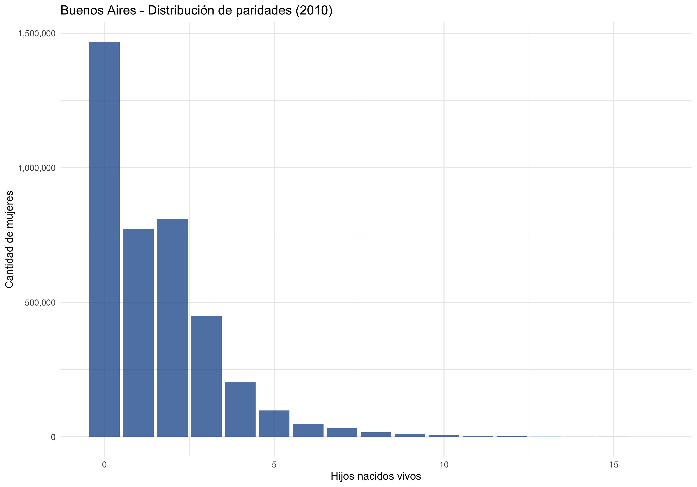
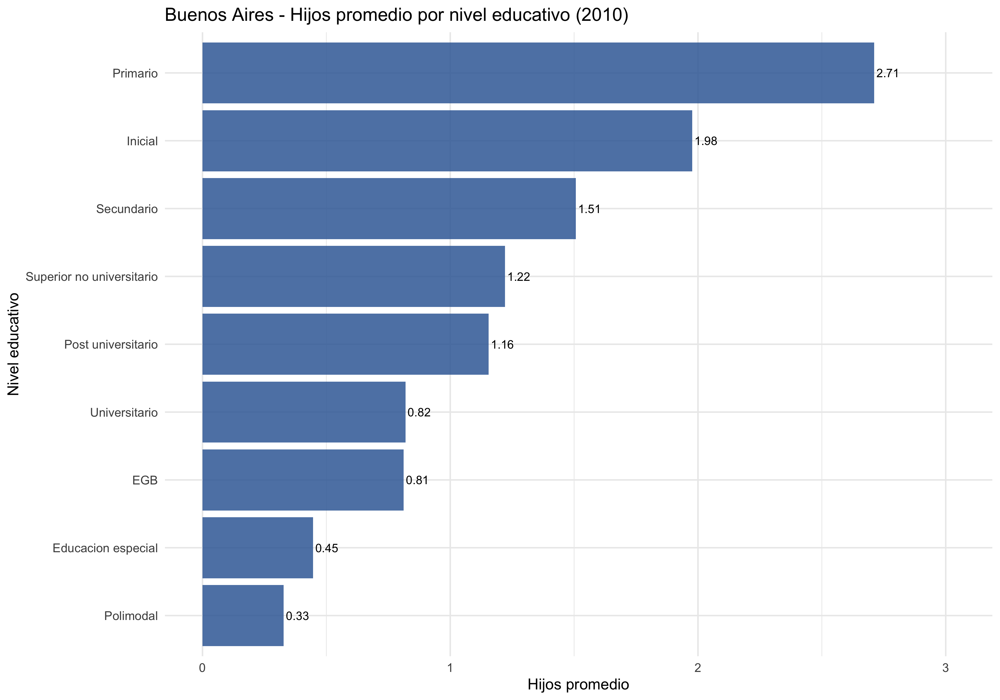
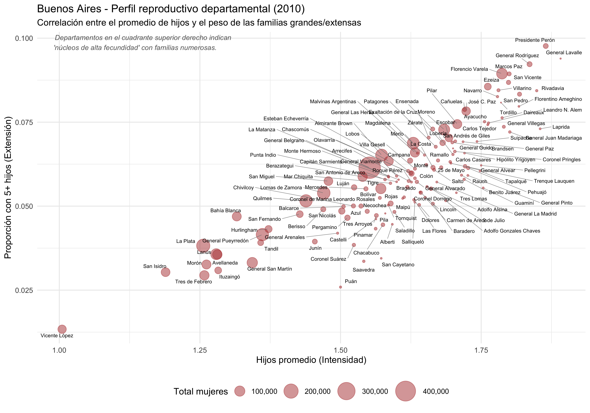
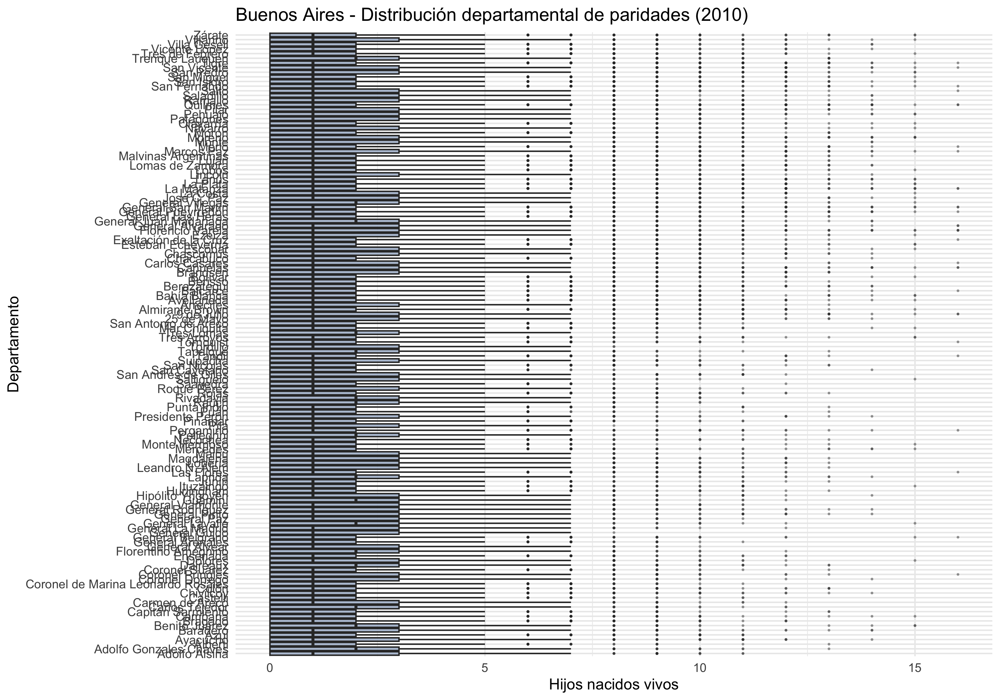
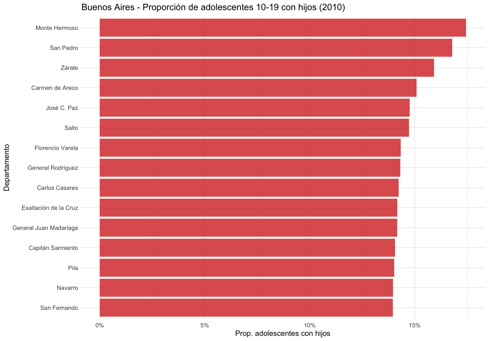
Mujeres con hijos por edad y número de hijos (2010)
{kind=link}
Tabla departamental (2010)
| Departamento | PMG | TGF | Paridez media final (40-44) | Prop. con hijos | Prop. sin hijos | Mujeres 15-49 |
|---|---|---|---|---|---|---|
| General Lavalle | 1.891 | 2.083 | 3.387 | 0.702 | 0.298 | 873 |
| Presidente Perón | 1.865 | 3.121 | 3.239 | 0.688 | 0.312 | 21081 |
| Laprida | 1.855 | 2.575 | 2.899 | 0.702 | 0.298 | 2328 |
| Rivadavia | 1.849 | 2.661 | 3.108 | 0.685 | 0.315 | 3947 |
| General Rodríguez | 1.836 | 3.321 | 3.230 | 0.685 | 0.315 | 22047 |
| San Pedro | 1.818 | 2.741 | 3.120 | 0.697 | 0.303 | 14101 |
| Florentino Ameghino | 1.817 | 2.696 | 3.027 | 0.692 | 0.308 | 2083 |
| General Juan Madariaga | 1.801 | 2.769 | 3.157 | 0.690 | 0.310 | 4662 |
| Marcos Paz | 1.800 | 2.725 | 3.255 | 0.668 | 0.332 | 13449 |
| San Vicente | 1.799 | 2.987 | 3.089 | 0.674 | 0.326 | 15099 |
| General Villegas | 1.790 | 2.509 | 2.876 | 0.693 | 0.307 | 7090 |
| Daireaux | 1.787 | 2.460 | 2.898 | 0.696 | 0.304 | 3919 |
| Florencio Varela | 1.787 | 2.844 | 3.254 | 0.670 | 0.330 | 110335 |
| Tordillo | 1.785 | 2.318 | 3.275 | 0.670 | 0.330 | 433 |
| Villarino | 1.781 | 2.306 | 3.259 | 0.682 | 0.318 | 7444 |
| Navarro | 1.779 | 2.457 | 3.135 | 0.671 | 0.329 | 3995 |
| Leandro N. Alem | 1.763 | 2.323 | 2.958 | 0.675 | 0.325 | 3773 |
| Ezeiza | 1.762 | 2.595 | 3.185 | 0.675 | 0.325 | 42660 |
| Carlos Tejedor | 1.762 | 2.429 | 2.789 | 0.695 | 0.305 | 2560 |
| Ayacucho | 1.756 | 2.592 | 2.967 | 0.677 | 0.323 | 4618 |
| Guaminí | 1.754 | 2.041 | 2.668 | 0.705 | 0.295 | 2508 |
| Pellegrini | 1.750 | 2.441 | 3.006 | 0.698 | 0.302 | 1352 |
| Tapalqué | 1.748 | 2.361 | 2.693 | 0.710 | 0.290 | 2067 |
| Suipacha | 1.743 | 2.330 | 3.135 | 0.681 | 0.319 | 2354 |
| Pehuajó | 1.727 | 2.453 | 2.772 | 0.696 | 0.304 | 9077 |
| General Pinto | 1.726 | 2.160 | 2.819 | 0.693 | 0.307 | 2587 |
| José C. Paz | 1.723 | 3.067 | 3.220 | 0.665 | 0.335 | 68754 |
| Trenque Lauquen | 1.721 | 2.384 | 2.865 | 0.686 | 0.314 | 10265 |
| Cañuelas | 1.721 | 2.913 | 3.038 | 0.662 | 0.338 | 12889 |
| Hipólito Yrigoyen | 1.720 | 2.684 | 2.930 | 0.680 | 0.320 | 2128 |
| Benito Juárez | 1.720 | 2.423 | 2.671 | 0.696 | 0.304 | 4364 |
| General Paz | 1.718 | 1.925 | 3.068 | 0.673 | 0.327 | 2530 |
| Rauch | 1.715 | 2.326 | 2.962 | 0.693 | 0.307 | 3411 |
| Pilar | 1.707 | 3.255 | 2.909 | 0.666 | 0.334 | 78020 |
| Tres Lomas | 1.706 | 2.789 | 2.675 | 0.689 | 0.311 | 1945 |
| San Andrés de Giles | 1.704 | 2.569 | 2.985 | 0.666 | 0.334 | 5510 |
| Coronel Pringles | 1.703 | 2.565 | 2.863 | 0.677 | 0.323 | 5266 |
| General Guido | 1.700 | 2.339 | 2.780 | 0.667 | 0.333 | 640 |
| Lobería | 1.700 | 2.070 | 2.815 | 0.677 | 0.323 | 3961 |
| Brandsen | 1.699 | 2.618 | 2.896 | 0.669 | 0.331 | 6366 |
| General Alvear | 1.696 | 2.267 | 2.715 | 0.695 | 0.305 | 2262 |
| Carlos Casares | 1.695 | 2.771 | 2.668 | 0.694 | 0.306 | 5143 |
| Escobar | 1.693 | 2.867 | 2.827 | 0.675 | 0.325 | 55178 |
| Adolfo Gonzales Chaves | 1.687 | 2.175 | 2.711 | 0.681 | 0.319 | 2674 |
| Moreno | 1.684 | 3.391 | 2.906 | 0.662 | 0.338 | 118044 |
| Zárate | 1.681 | 3.003 | 2.832 | 0.666 | 0.334 | 27698 |
| 25 de Mayo | 1.679 | 2.587 | 2.855 | 0.674 | 0.326 | 8059 |
| Ramallo | 1.673 | 2.573 | 2.939 | 0.666 | 0.334 | 8050 |
| General La Madrid | 1.671 | 2.160 | 2.752 | 0.672 | 0.328 | 2536 |
| Patagones | 1.669 | 2.192 | 2.817 | 0.657 | 0.343 | 7299 |
| Salto | 1.666 | 2.757 | 2.720 | 0.680 | 0.320 | 7530 |
| La Costa | 1.664 | 2.879 | 2.609 | 0.681 | 0.319 | 15821 |
| Baradero | 1.664 | 2.356 | 2.624 | 0.681 | 0.319 | 7690 |
| Ensenada | 1.664 | 2.865 | 2.769 | 0.651 | 0.349 | 13735 |
| 9 de Julio | 1.661 | 2.680 | 2.713 | 0.683 | 0.317 | 10833 |
| Exaltación de la Cruz | 1.657 | 2.809 | 2.856 | 0.662 | 0.338 | 7444 |
| Adolfo Alsina | 1.654 | 2.053 | 2.583 | 0.671 | 0.329 | 3925 |
| Monte | 1.653 | 2.663 | 2.791 | 0.669 | 0.331 | 4957 |
| Carmen de Areco | 1.650 | 2.571 | 2.649 | 0.687 | 0.313 | 3478 |
| Magdalena | 1.649 | 2.606 | 2.975 | 0.658 | 0.342 | 4033 |
| Lincoln | 1.643 | 2.519 | 2.705 | 0.672 | 0.328 | 9536 |
| Coronel Dorrego | 1.642 | 2.227 | 2.706 | 0.667 | 0.333 | 3471 |
| Dolores | 1.640 | 2.183 | 2.664 | 0.679 | 0.321 | 6293 |
| General Las Heras | 1.637 | 2.455 | 2.704 | 0.657 | 0.343 | 3617 |
| General Alvarado | 1.636 | 2.654 | 2.731 | 0.656 | 0.344 | 9313 |
| Malvinas Argentinas | 1.632 | 2.680 | 2.847 | 0.658 | 0.342 | 83378 |
| Villa Gesell | 1.632 | 2.643 | 2.640 | 0.674 | 0.326 | 7459 |
| Colón | 1.632 | 2.330 | 2.687 | 0.666 | 0.334 | 5917 |
| Salliqueló | 1.632 | 2.482 | 2.797 | 0.688 | 0.312 | 2014 |
| Las Flores | 1.631 | 2.560 | 2.609 | 0.686 | 0.314 | 5358 |
| Merlo | 1.629 | 2.793 | 2.892 | 0.647 | 0.353 | 136818 |
| Olavarría | 1.626 | 2.568 | 2.641 | 0.662 | 0.338 | 25635 |
| Roque Pérez | 1.626 | 2.515 | 2.951 | 0.670 | 0.330 | 2851 |
| Chascomús | 1.625 | 2.583 | 2.769 | 0.657 | 0.343 | 10026 |
| Campana | 1.624 | 3.008 | 2.759 | 0.651 | 0.349 | 23259 |
| Arrecifes | 1.621 | 2.332 | 2.763 | 0.652 | 0.348 | 7029 |
| Lobos | 1.620 | 2.815 | 2.734 | 0.663 | 0.337 | 8386 |
| Bragado | 1.619 | 2.485 | 2.662 | 0.670 | 0.330 | 9216 |
| Rojas | 1.613 | 2.563 | 2.675 | 0.666 | 0.334 | 5373 |
| Maipú | 1.610 | 2.122 | 2.687 | 0.669 | 0.331 | 2390 |
| Monte Hermoso | 1.603 | 2.301 | 2.721 | 0.666 | 0.334 | 1434 |
| Punta Indio | 1.600 | 2.254 | 2.491 | 0.655 | 0.345 | 2201 |
| General Viamonte | 1.600 | 2.230 | 2.782 | 0.646 | 0.354 | 4172 |
| Saladillo | 1.596 | 2.297 | 2.716 | 0.661 | 0.339 | 7352 |
| Alberti | 1.592 | 2.643 | 2.537 | 0.678 | 0.322 | 2287 |
| Necochea | 1.589 | 2.042 | 2.644 | 0.648 | 0.352 | 21887 |
| Mar Chiquita | 1.589 | 2.445 | 2.622 | 0.648 | 0.352 | 4875 |
| Esteban Echeverría | 1.586 | 2.568 | 2.830 | 0.644 | 0.356 | 79815 |
| Capitán Sarmiento | 1.585 | 2.154 | 2.798 | 0.649 | 0.351 | 3529 |
| Tornquist | 1.585 | 2.137 | 2.367 | 0.655 | 0.345 | 2862 |
| General Belgrano | 1.585 | 2.278 | 2.724 | 0.654 | 0.346 | 3871 |
| Pila | 1.580 | 2.579 | 2.740 | 0.653 | 0.347 | 899 |
| San Antonio de Areco | 1.579 | 2.386 | 2.745 | 0.649 | 0.351 | 5507 |
| Chacabuco | 1.575 | 2.610 | 2.516 | 0.671 | 0.329 | 11155 |
| Almirante Brown | 1.573 | 2.776 | 2.816 | 0.631 | 0.369 | 141490 |
| San Cayetano | 1.572 | 2.405 | 2.513 | 0.683 | 0.317 | 1915 |
| Tigre | 1.572 | 2.812 | 2.613 | 0.653 | 0.347 | 99064 |
| Bolívar | 1.570 | 2.340 | 2.656 | 0.661 | 0.339 | 7358 |
| Tres Arroyos | 1.564 | 2.428 | 2.602 | 0.667 | 0.333 | 12643 |
| Castelli | 1.563 | 1.924 | 2.407 | 0.655 | 0.345 | 1949 |
| Pinamar | 1.562 | 2.579 | 2.490 | 0.688 | 0.312 | 6191 |
| La Matanza | 1.552 | 2.835 | 2.805 | 0.630 | 0.370 | 464939 |
| Azul | 1.547 | 2.740 | 2.652 | 0.654 | 0.346 | 14879 |
| Mercedes | 1.545 | 2.160 | 2.806 | 0.635 | 0.365 | 14701 |
| Saavedra | 1.541 | 2.285 | 2.448 | 0.668 | 0.332 | 4585 |
| Berazategui | 1.539 | 2.611 | 2.677 | 0.634 | 0.366 | 82975 |
| Coronel de Marina Leonardo Rosales | 1.536 | 2.091 | 2.845 | 0.638 | 0.362 | 15150 |
| Luján | 1.524 | 2.210 | 2.444 | 0.619 | 0.381 | 26109 |
| Coronel Suárez | 1.524 | 2.367 | 2.540 | 0.642 | 0.358 | 9051 |
| Chivilcoy | 1.523 | 2.748 | 2.513 | 0.662 | 0.338 | 14542 |
| Pergamino | 1.512 | 1.840 | 2.494 | 0.629 | 0.371 | 26062 |
| Balcarce | 1.505 | 2.283 | 2.607 | 0.628 | 0.372 | 10365 |
| San Nicolás | 1.502 | 2.377 | 2.583 | 0.629 | 0.371 | 36108 |
| Puán | 1.500 | 2.079 | 2.436 | 0.657 | 0.343 | 3358 |
| General Arenales | 1.495 | 2.160 | 2.456 | 0.642 | 0.358 | 3337 |
| San Miguel | 1.478 | 2.705 | 2.841 | 0.606 | 0.394 | 71915 |
| Lomas de Zamora | 1.470 | 2.818 | 2.535 | 0.626 | 0.374 | 155304 |
| Berisso | 1.469 | 2.728 | 2.571 | 0.620 | 0.380 | 22600 |
| Junín | 1.454 | 2.273 | 2.407 | 0.628 | 0.372 | 21037 |
| Quilmes | 1.439 | 2.823 | 2.543 | 0.612 | 0.388 | 147923 |
| San Fernando | 1.428 | 2.648 | 2.532 | 0.619 | 0.381 | 41494 |
| Hurlingham | 1.372 | 2.116 | 2.258 | 0.606 | 0.394 | 45907 |
| General Pueyrredón | 1.361 | 2.143 | 2.390 | 0.583 | 0.417 | 148608 |
| Tandil | 1.358 | 2.138 | 2.441 | 0.584 | 0.416 | 30688 |
| General San Martín | 1.343 | 2.448 | 2.302 | 0.620 | 0.380 | 103723 |
| Bahía Blanca | 1.316 | 2.166 | 2.490 | 0.555 | 0.445 | 76643 |
| Ituzaingó | 1.282 | 2.139 | 2.239 | 0.589 | 0.411 | 41717 |
| Avellaneda | 1.281 | 2.525 | 2.130 | 0.588 | 0.412 | 85383 |
| Lanús | 1.279 | 2.521 | 2.211 | 0.589 | 0.411 | 113912 |
| Morón | 1.262 | 2.243 | 2.103 | 0.587 | 0.413 | 77564 |
| Tres de Febrero | 1.258 | 2.236 | 2.174 | 0.585 | 0.415 | 83596 |
| La Plata | 1.256 | 2.416 | 2.345 | 0.540 | 0.460 | 170994 |
| San Isidro | 1.189 | 2.467 | 2.092 | 0.546 | 0.454 | 72603 |
| Vicente López | 1.005 | 2.107 | 1.768 | 0.507 | 0.493 | 65178 |
Mapa de paridez media (2010)
{kind=link}
CABA
Indicadores globales
| Paridez media general (PMG) | Tasa global de fecundidad (TGF) | Paridez media final (40-44) | Prop. con hijos (1+) | Prop. sin hijos (0) | Prop. 5+ hijos | Prop. adolescentes 10-19 con hijos | N (mujeres 15-49) |
|---|---|---|---|---|---|---|---|
| 0.938 | 1.735 | 1.727 | 0.475 | 0.525 | 0.016 | 0.052 | 738405 |
Análisis demográfico (2010):
En 2010, CABA registra una paridez media general de 0.94 hijos por mujer de 15-49 años, una TGF censal de 1.73 y una paridez media final de 40-44 años de 1.73. La proporción de mujeres con hijos alcanza 47.5%. Entre los departamentos con base poblacional suficiente, la PMG va de 0.66 en Comuna 14 a 1.46 en Comuna 8, lo que da una medida directa de la heterogeneidad territorial dentro de la provincia. El gradiente educativo también aparece en los promedios: el nivel con menor paridez es Univ y mas (0.63) y el de mayor paridez es Bajo (2.02). Entre las adolescentes de 10-19 años la proporción con hijos es 5.2%.
Distribución, gradiente educativo y heterogeneidad departamental
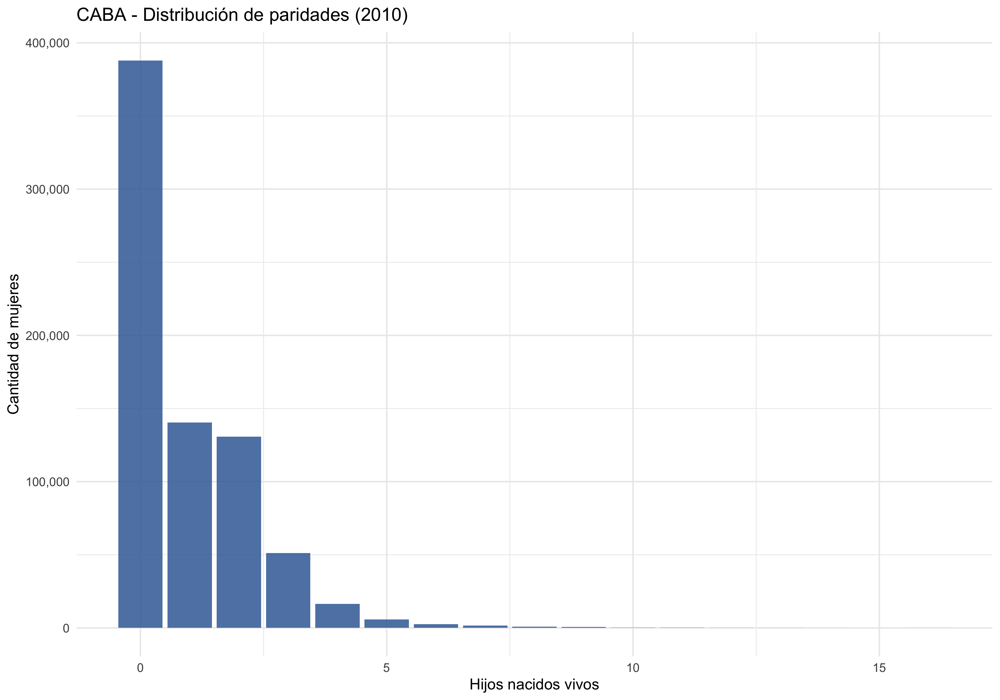
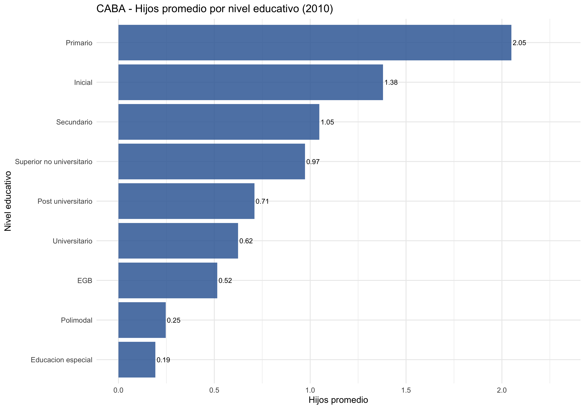
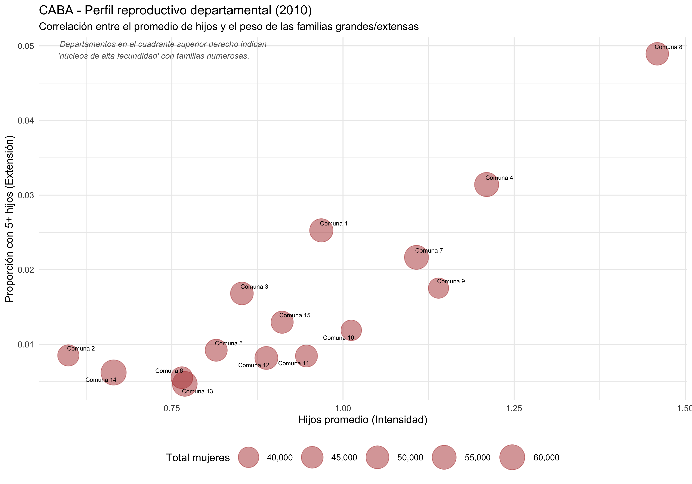
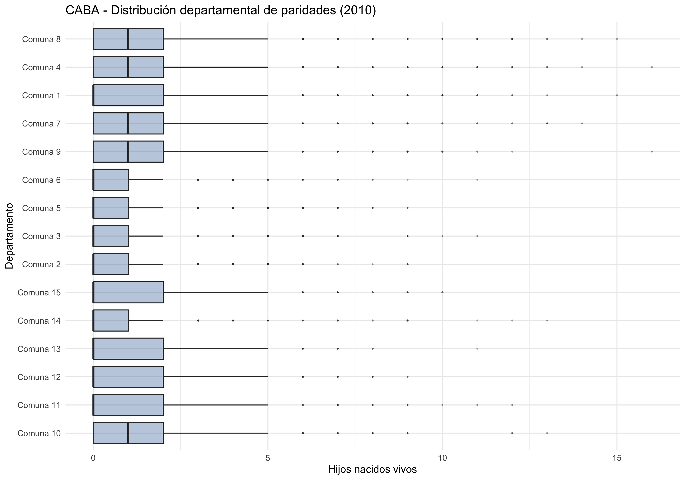
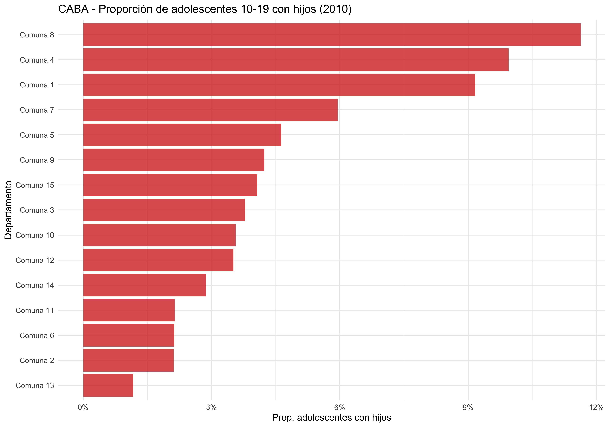
Mujeres con hijos por edad y número de hijos (2010)
{kind=link}
Tabla departamental (2010)
| Departamento | PMG | TGF | Paridez media final (40-44) | Prop. con hijos | Prop. sin hijos | Mujeres 15-49 |
|---|---|---|---|---|---|---|
| Comuna 8 | 1.459 | 2.770 | 2.563 | 0.635 | 0.365 | 48964 |
| Comuna 4 | 1.210 | 2.305 | 2.134 | 0.571 | 0.429 | 56026 |
| Comuna 9 | 1.140 | 1.958 | 1.941 | 0.564 | 0.436 | 39080 |
| Comuna 7 | 1.107 | 2.091 | 1.934 | 0.543 | 0.457 | 55179 |
| Comuna 10 | 1.012 | 1.706 | 1.757 | 0.517 | 0.483 | 39997 |
| Comuna 1 | 0.968 | 1.805 | 1.779 | 0.465 | 0.535 | 51964 |
| Comuna 11 | 0.947 | 1.533 | 1.719 | 0.499 | 0.501 | 46117 |
| Comuna 15 | 0.911 | 1.668 | 1.684 | 0.482 | 0.518 | 46837 |
| Comuna 12 | 0.888 | 1.620 | 1.678 | 0.479 | 0.521 | 50189 |
| Comuna 3 | 0.852 | 1.497 | 1.577 | 0.448 | 0.552 | 49419 |
| Comuna 5 | 0.815 | 1.509 | 1.454 | 0.440 | 0.560 | 46279 |
| Comuna 13 | 0.769 | 1.352 | 1.511 | 0.414 | 0.586 | 59125 |
| Comuna 6 | 0.765 | 1.454 | 1.441 | 0.429 | 0.571 | 45265 |
| Comuna 14 | 0.665 | 1.382 | 1.385 | 0.352 | 0.648 | 61079 |
| Comuna 2 | 0.599 | 1.152 | 1.408 | 0.302 | 0.698 | 42885 |
Mapa de paridez media (2010)
{kind=link}
Catamarca
Indicadores globales
| Paridez media general (PMG) | Tasa global de fecundidad (TGF) | Paridez media final (40-44) | Prop. con hijos (1+) | Prop. sin hijos (0) | Prop. 5+ hijos | Prop. adolescentes 10-19 con hijos | N (mujeres 15-49) |
|---|---|---|---|---|---|---|---|
| 1.809 | 2.627 | 3.352 | 0.654 | 0.346 | 0.1 | 0.127 | 90936 |
Análisis demográfico (2010):
En 2010, Catamarca registra una paridez media general de 1.81 hijos por mujer de 15-49 años, una TGF censal de 2.63 y una paridez media final de 40-44 años de 3.35. La proporción de mujeres con hijos alcanza 65.4%. Entre los departamentos con base poblacional suficiente, la PMG va de 1.65 en Capital a 2.13 en Pomán, lo que da una medida directa de la heterogeneidad territorial dentro de la provincia. El gradiente educativo también aparece en los promedios: el nivel con menor paridez es Univ y mas (1.11) y el de mayor paridez es Bajo (2.76). Entre las adolescentes de 10-19 años la proporción con hijos es 12.7%.
Distribución, gradiente educativo y heterogeneidad departamental
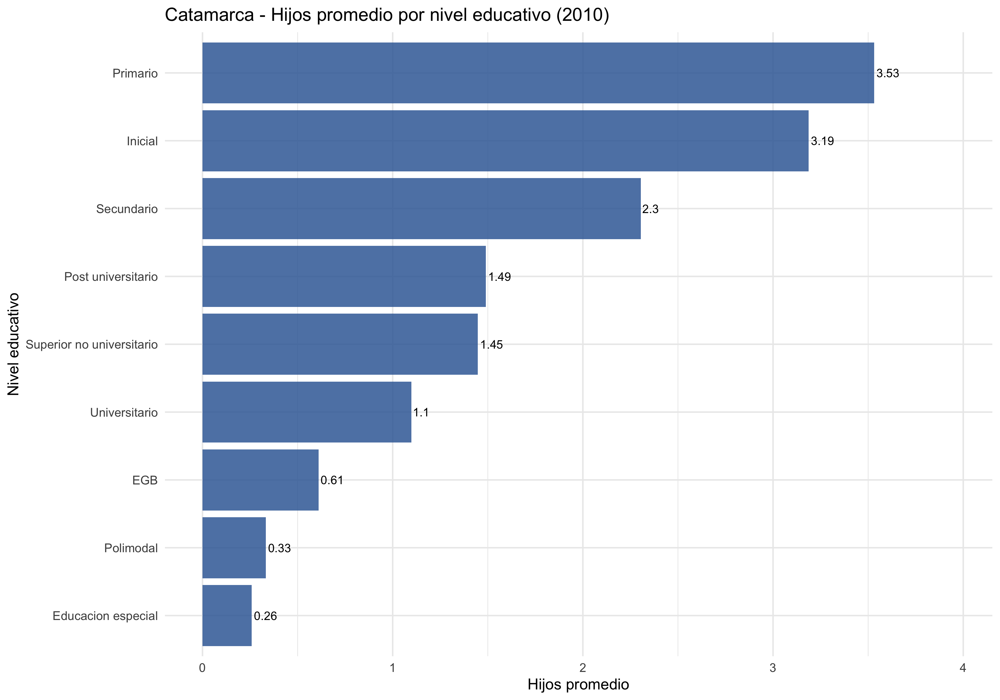
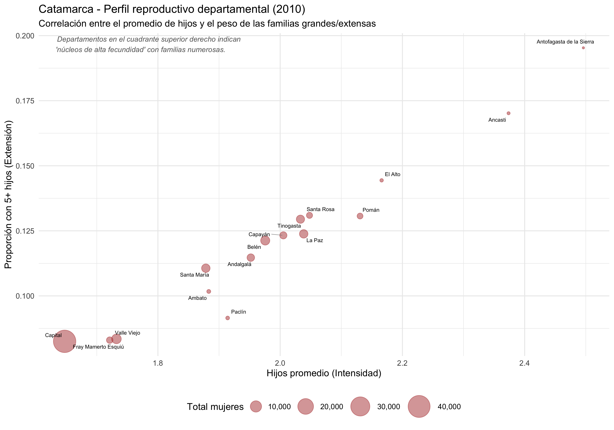
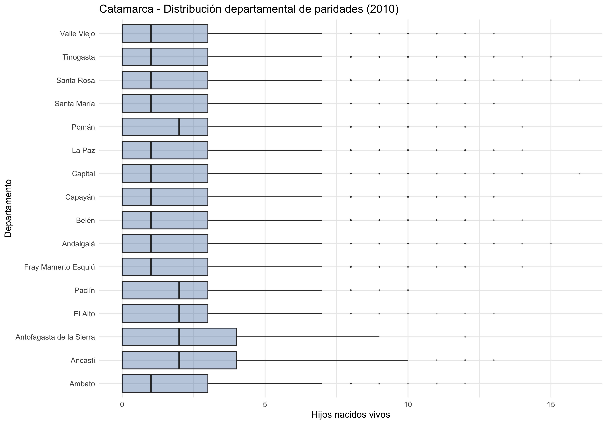
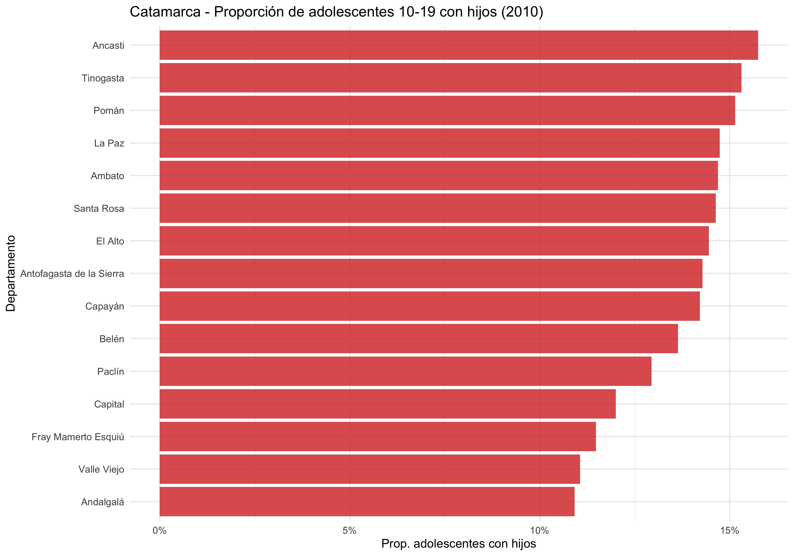
Mujeres con hijos por edad y número de hijos (2010)
{kind=link}
Tabla departamental (2010)
| Departamento | PMG | TGF | Paridez media final (40-44) | Prop. con hijos | Prop. sin hijos | Mujeres 15-49 |
|---|---|---|---|---|---|---|
| Antofagasta de la Sierra | 2.496 | 3.416 | 3.613 | 0.750 | 0.250 | 256 |
| Ancasti | 2.374 | 2.087 | 3.846 | 0.725 | 0.275 | 570 |
| El Alto | 2.166 | 2.634 | 3.651 | 0.719 | 0.281 | 741 |
| Pomán | 2.131 | 3.168 | 3.474 | 0.705 | 0.295 | 2464 |
| Santa Rosa | 2.048 | 2.451 | 3.923 | 0.690 | 0.310 | 2688 |
| La Paz | 2.039 | 2.662 | 3.717 | 0.691 | 0.309 | 5451 |
| Tinogasta | 2.033 | 2.739 | 3.722 | 0.686 | 0.314 | 5121 |
| Capayán | 2.005 | 2.621 | 3.875 | 0.678 | 0.322 | 3813 |
| Belén | 1.976 | 2.662 | 3.502 | 0.683 | 0.317 | 6349 |
| Andalgalá | 1.952 | 2.577 | 3.519 | 0.670 | 0.330 | 4228 |
| Paclín | 1.914 | 3.046 | 3.598 | 0.690 | 0.310 | 896 |
| Ambato | 1.883 | 2.332 | 3.440 | 0.680 | 0.320 | 993 |
| Santa María | 1.878 | 2.577 | 3.443 | 0.650 | 0.350 | 5468 |
| Valle Viejo | 1.732 | 2.570 | 3.029 | 0.654 | 0.346 | 7116 |
| Fray Mamerto Esquiú | 1.721 | 2.769 | 3.221 | 0.646 | 0.354 | 3084 |
| Capital | 1.647 | 2.600 | 3.164 | 0.630 | 0.370 | 41698 |
Mapa de paridez media (2010)
{kind=link}
Chaco
Indicadores globales
| Paridez media general (PMG) | Tasa global de fecundidad (TGF) | Paridez media final (40-44) | Prop. con hijos (1+) | Prop. sin hijos (0) | Prop. 5+ hijos | Prop. adolescentes 10-19 con hijos | N (mujeres 15-49) |
|---|---|---|---|---|---|---|---|
| 1.826 | 2.739 | 3.421 | 0.657 | 0.343 | 0.097 | 0.153 | 264392 |
Análisis demográfico (2010):
En 2010, Chaco registra una paridez media general de 1.83 hijos por mujer de 15-49 años, una TGF censal de 2.74 y una paridez media final de 40-44 años de 3.42. La proporción de mujeres con hijos alcanza 65.7%. Entre los departamentos con base poblacional suficiente, la PMG va de 1.62 en San Fernando a 2.33 en Independencia, lo que da una medida directa de la heterogeneidad territorial dentro de la provincia. El gradiente educativo también aparece en los promedios: el nivel con menor paridez es Univ y mas (0.94) y el de mayor paridez es Bajo (2.79). Entre las adolescentes de 10-19 años la proporción con hijos es 15.3%.
Distribución, gradiente educativo y heterogeneidad departamental
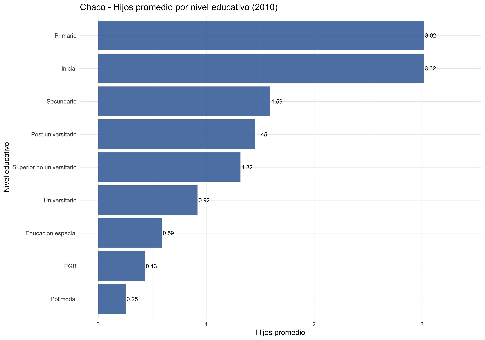
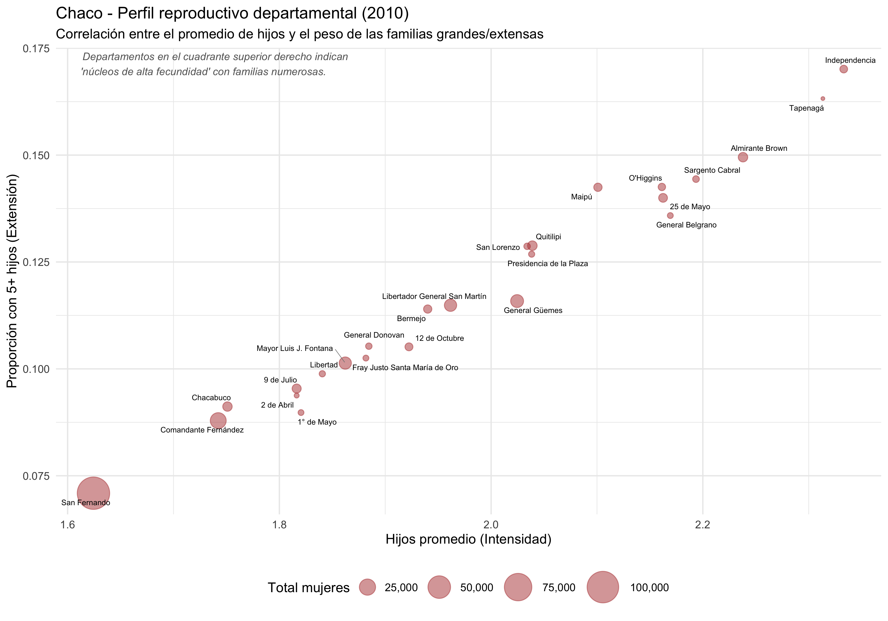
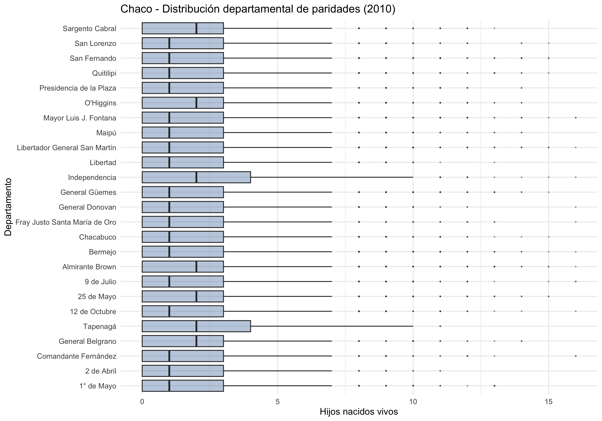
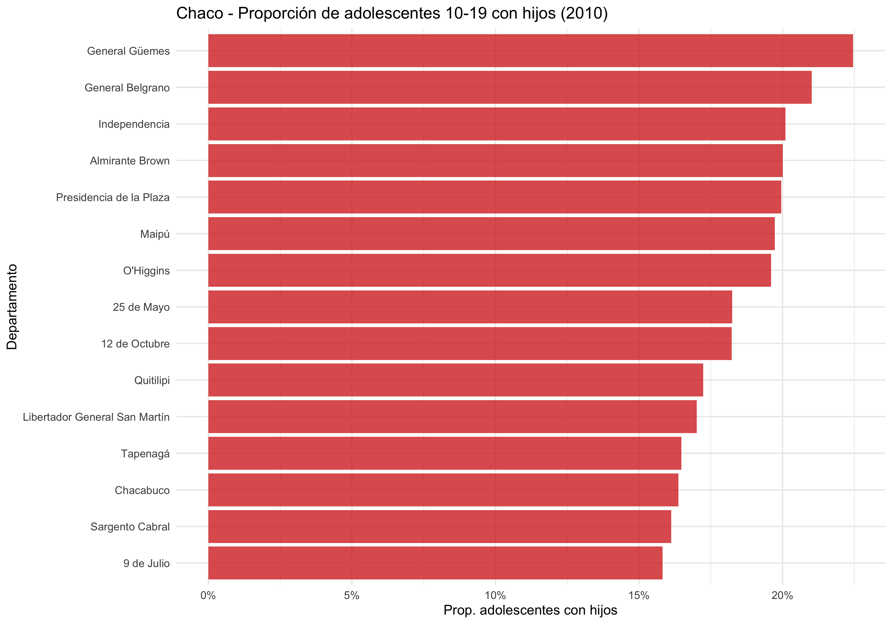
Mujeres con hijos por edad y número de hijos (2010)
{kind=link}
Tabla departamental (2010)
| Departamento | PMG | TGF | Paridez media final (40-44) | Prop. con hijos | Prop. sin hijos | Mujeres 15-49 |
|---|---|---|---|---|---|---|
| Independencia | 2.333 | 3.338 | 4.098 | 0.714 | 0.286 | 5026 |
| Tapenagá | 2.313 | 2.942 | 3.933 | 0.739 | 0.261 | 919 |
| Almirante Brown | 2.238 | 3.539 | 4.336 | 0.714 | 0.286 | 7906 |
| Sargento Cabral | 2.194 | 2.771 | 4.375 | 0.698 | 0.302 | 3643 |
| General Belgrano | 2.169 | 3.186 | 3.930 | 0.718 | 0.282 | 2694 |
| 25 de Mayo | 2.162 | 3.064 | 3.907 | 0.700 | 0.300 | 6693 |
| O’Higgins | 2.161 | 3.293 | 4.105 | 0.694 | 0.306 | 4588 |
| Maipú | 2.101 | 2.749 | 4.120 | 0.695 | 0.305 | 5917 |
| Quitilipi | 2.039 | 2.635 | 3.709 | 0.670 | 0.330 | 8089 |
| Presidencia de la Plaza | 2.038 | 2.906 | 3.751 | 0.688 | 0.312 | 3004 |
| San Lorenzo | 2.034 | 2.926 | 3.794 | 0.665 | 0.335 | 3412 |
| General Güemes | 2.025 | 3.158 | 3.933 | 0.718 | 0.282 | 15398 |
| Libertador General San Martín | 1.962 | 3.112 | 3.851 | 0.678 | 0.322 | 13875 |
| Bermejo | 1.940 | 2.993 | 3.726 | 0.672 | 0.328 | 5860 |
| 12 de Octubre | 1.922 | 2.904 | 3.703 | 0.695 | 0.305 | 5335 |
| General Donovan | 1.884 | 2.555 | 3.676 | 0.683 | 0.317 | 3333 |
| Fray Justo Santa María de Oro | 1.882 | 2.635 | 3.569 | 0.676 | 0.324 | 2731 |
| Mayor Luis J. Fontana | 1.862 | 2.646 | 3.372 | 0.665 | 0.335 | 13763 |
| Libertad | 1.841 | 2.693 | 3.612 | 0.674 | 0.326 | 3136 |
| 1° de Mayo | 1.820 | 2.644 | 3.477 | 0.662 | 0.338 | 2662 |
| 2 de Abril | 1.816 | 2.396 | 3.343 | 0.691 | 0.309 | 1813 |
| 9 de Julio | 1.816 | 2.691 | 3.535 | 0.670 | 0.330 | 7170 |
| Chacabuco | 1.751 | 2.719 | 3.262 | 0.664 | 0.336 | 7786 |
| Comandante Fernández | 1.742 | 2.751 | 3.217 | 0.642 | 0.358 | 24062 |
| San Fernando | 1.624 | 2.467 | 3.055 | 0.623 | 0.377 | 105577 |
Mapa de paridez media (2010)
{kind=link}
Chubut
Indicadores globales
| Paridez media general (PMG) | Tasa global de fecundidad (TGF) | Paridez media final (40-44) | Prop. con hijos (1+) | Prop. sin hijos (0) | Prop. 5+ hijos | Prop. adolescentes 10-19 con hijos | N (mujeres 15-49) |
|---|---|---|---|---|---|---|---|
| 1.633 | 2.61 | 2.903 | 0.668 | 0.332 | 0.061 | 0.111 | 130866 |
Análisis demográfico (2010):
En 2010, Chubut registra una paridez media general de 1.63 hijos por mujer de 15-49 años, una TGF censal de 2.61 y una paridez media final de 40-44 años de 2.90. La proporción de mujeres con hijos alcanza 66.8%. Entre los departamentos con base poblacional suficiente, la PMG va de 1.54 en Escalante a 2.07 en Paso de Indios, lo que da una medida directa de la heterogeneidad territorial dentro de la provincia. El gradiente educativo también aparece en los promedios: el nivel con menor paridez es Univ y mas (1.07) y el de mayor paridez es Bajo (2.66). Entre las adolescentes de 10-19 años la proporción con hijos es 11.1%.
Distribución, gradiente educativo y heterogeneidad departamental
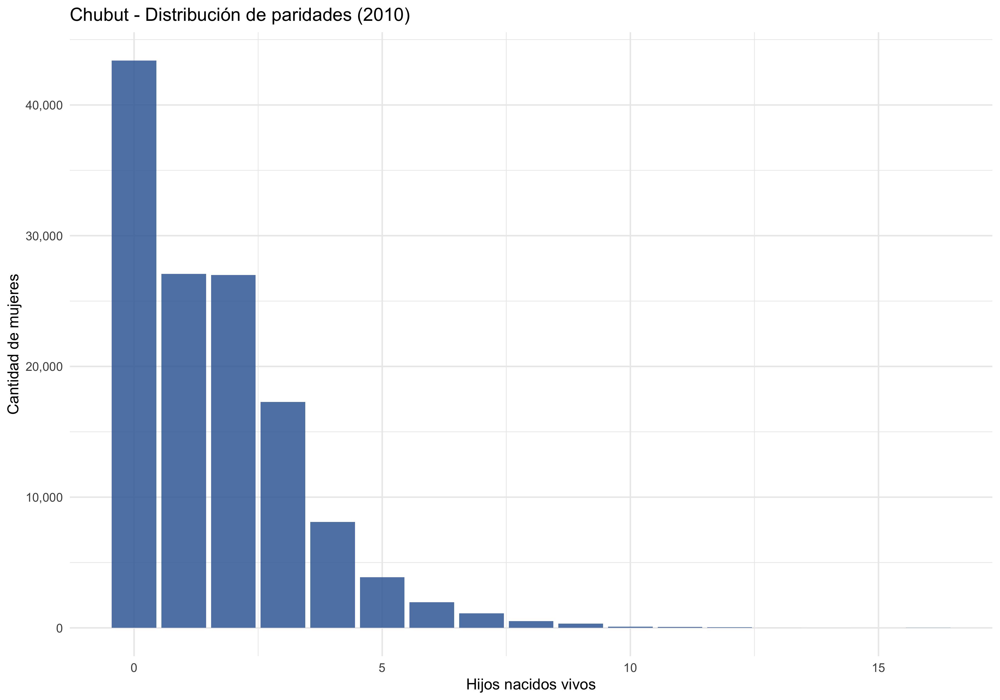
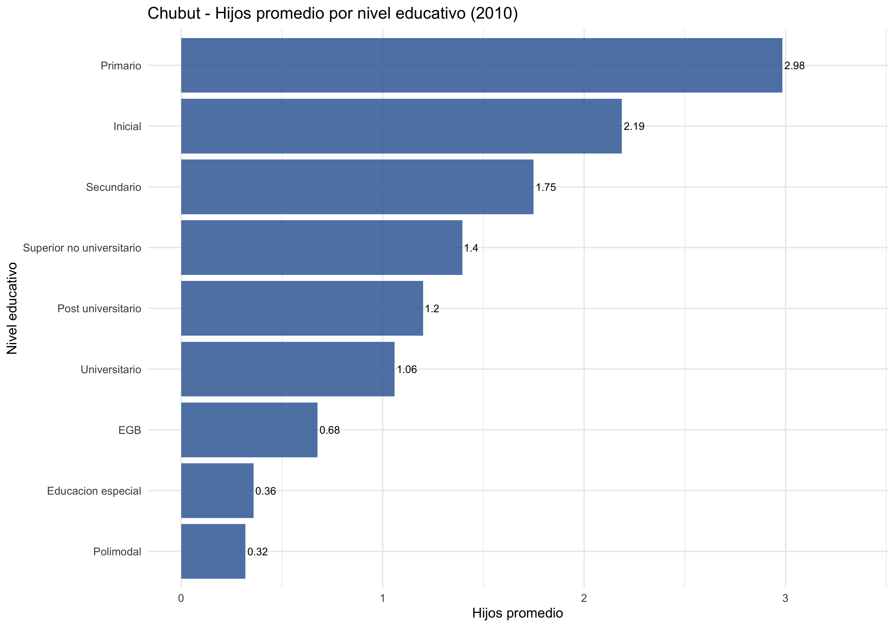
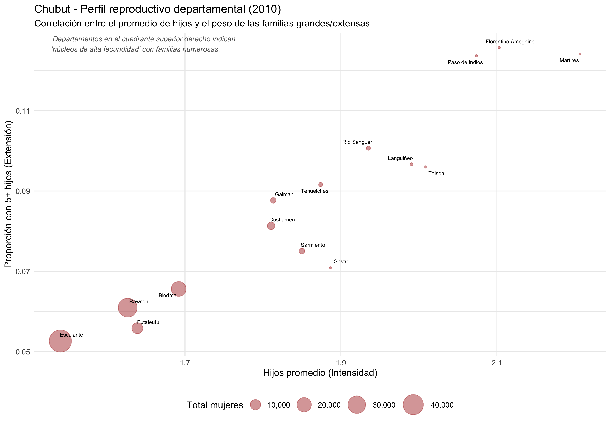
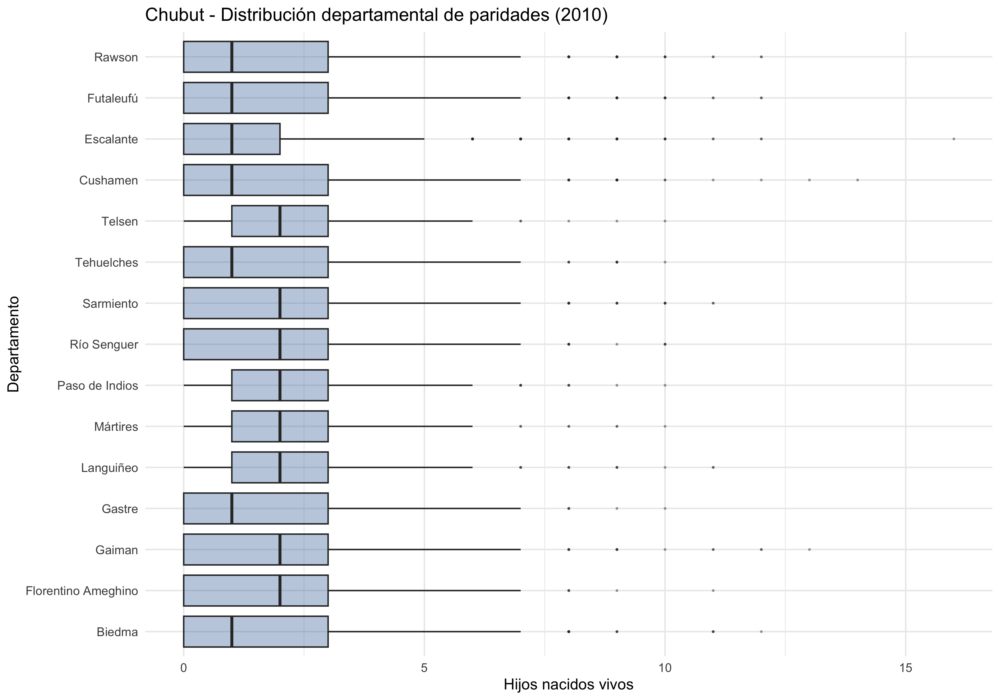
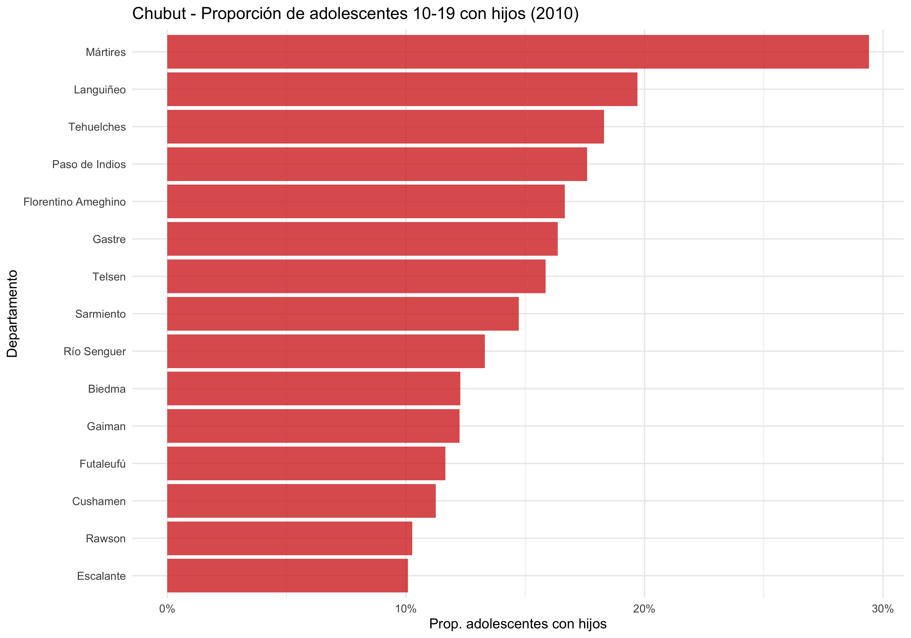
Mujeres con hijos por edad y número de hijos (2010)
{kind=link}
Tabla departamental (2010)
| Departamento | PMG | TGF | Paridez media final (40-44) | Prop. con hijos | Prop. sin hijos | Mujeres 15-49 |
|---|---|---|---|---|---|---|
| Mártires | 2.207 | 2.891 | 4.176 | 0.759 | 0.241 | 145 |
| Florentino Ameghino | 2.103 | 3.048 | 3.892 | 0.714 | 0.286 | 350 |
| Paso de Indios | 2.074 | 3.047 | 3.767 | 0.755 | 0.245 | 380 |
| Telsen | 2.008 | 2.682 | 3.529 | 0.760 | 0.240 | 375 |
| Languiñeo | 1.990 | 2.390 | 3.224 | 0.756 | 0.244 | 631 |
| Río Senguer | 1.935 | 2.244 | 3.350 | 0.724 | 0.276 | 1341 |
| Gastre | 1.887 | 1.999 | 3.500 | 0.723 | 0.277 | 282 |
| Tehuelches | 1.874 | 2.811 | 3.466 | 0.728 | 0.272 | 1277 |
| Sarmiento | 1.850 | 2.897 | 3.278 | 0.719 | 0.281 | 2705 |
| Gaiman | 1.813 | 2.410 | 3.258 | 0.685 | 0.315 | 2623 |
| Cushamen | 1.810 | 2.237 | 3.167 | 0.708 | 0.292 | 5016 |
| Biedma | 1.692 | 2.579 | 2.986 | 0.684 | 0.316 | 20858 |
| Futaleufú | 1.639 | 2.308 | 2.904 | 0.677 | 0.323 | 11335 |
| Rawson | 1.627 | 2.597 | 2.924 | 0.661 | 0.339 | 34617 |
| Escalante | 1.540 | 2.728 | 2.724 | 0.651 | 0.349 | 48931 |
Mapa de paridez media (2010)
{kind=link}
Córdoba
Indicadores globales
| Paridez media general (PMG) | Tasa global de fecundidad (TGF) | Paridez media final (40-44) | Prop. con hijos (1+) | Prop. sin hijos (0) | Prop. 5+ hijos | Prop. adolescentes 10-19 con hijos | N (mujeres 15-49) |
|---|---|---|---|---|---|---|---|
| 1.489 | 2.358 | 2.72 | 0.604 | 0.396 | 0.053 | 0.096 | 825862 |
Análisis demográfico (2010):
En 2010, Córdoba registra una paridez media general de 1.49 hijos por mujer de 15-49 años, una TGF censal de 2.36 y una paridez media final de 40-44 años de 2.72. La proporción de mujeres con hijos alcanza 60.4%. Entre los departamentos con base poblacional suficiente, la PMG va de 1.33 en Capital a 1.77 en San Alberto, lo que da una medida directa de la heterogeneidad territorial dentro de la provincia. El gradiente educativo también aparece en los promedios: el nivel con menor paridez es Univ y mas (0.85) y el de mayor paridez es Bajo (2.74). Entre las adolescentes de 10-19 años la proporción con hijos es 9.6%.
Distribución, gradiente educativo y heterogeneidad departamental
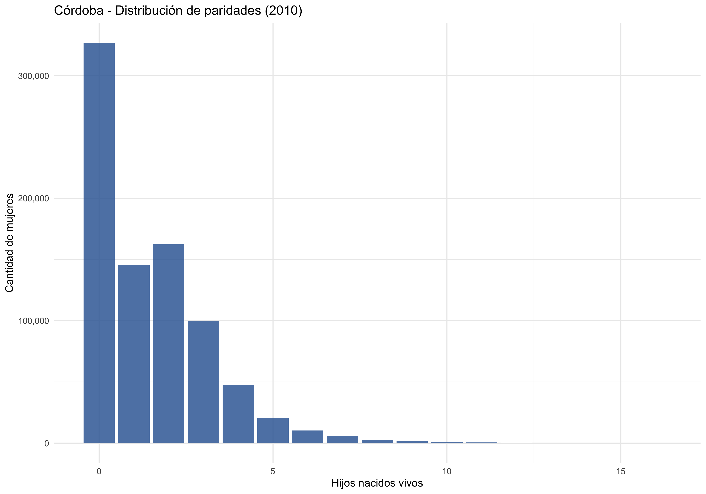
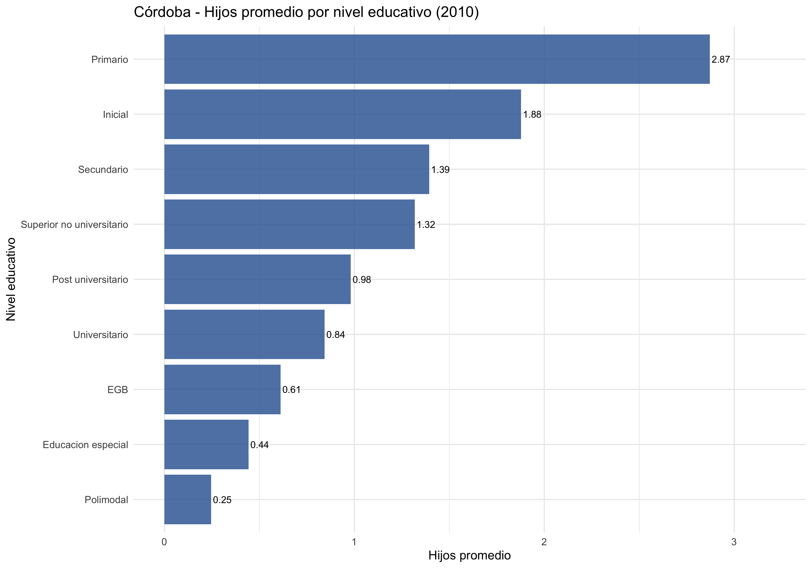
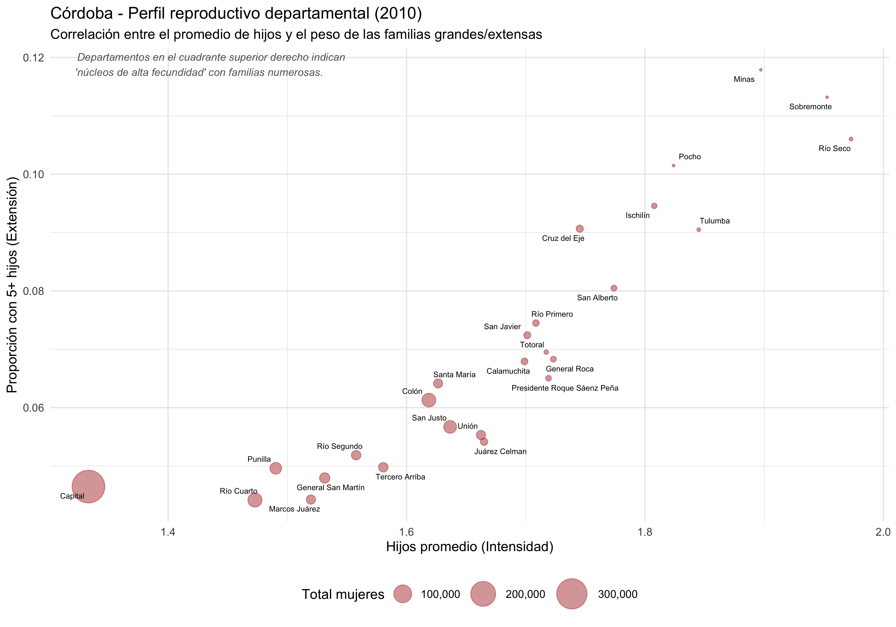
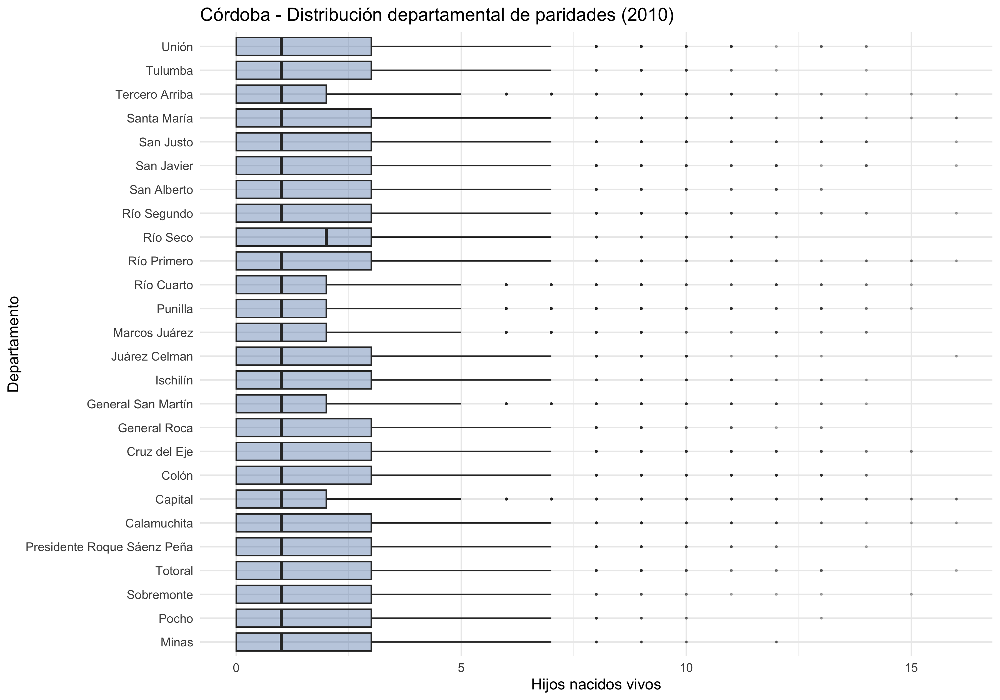
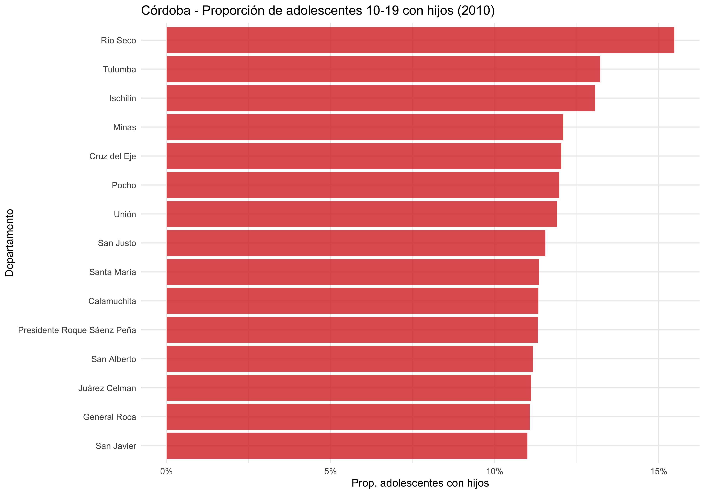
Mujeres con hijos por edad y número de hijos (2010)
{kind=link}
Tabla departamental (2010)
| Departamento | PMG | TGF | Paridez media final (40-44) | Prop. con hijos | Prop. sin hijos | Mujeres 15-49 |
|---|---|---|---|---|---|---|
| Río Seco | 1.973 | 2.740 | 3.419 | 0.695 | 0.305 | 3018 |
| Sobremonte | 1.953 | 2.498 | 3.587 | 0.671 | 0.329 | 1016 |
| Minas | 1.897 | 2.910 | 2.982 | 0.646 | 0.354 | 1001 |
| Tulumba | 1.845 | 2.674 | 3.141 | 0.683 | 0.317 | 2840 |
| Pocho | 1.824 | 2.301 | 2.926 | 0.663 | 0.337 | 1153 |
| Ischilín | 1.808 | 2.591 | 3.247 | 0.663 | 0.337 | 7423 |
| San Alberto | 1.774 | 2.349 | 3.147 | 0.674 | 0.326 | 8773 |
| Cruz del Eje | 1.745 | 2.601 | 3.205 | 0.635 | 0.365 | 13832 |
| General Roca | 1.723 | 2.276 | 2.967 | 0.682 | 0.318 | 8316 |
| Presidente Roque Sáenz Peña | 1.719 | 2.317 | 2.917 | 0.686 | 0.314 | 8180 |
| Totoral | 1.717 | 2.677 | 3.025 | 0.662 | 0.338 | 4561 |
| Río Primero | 1.708 | 2.431 | 3.017 | 0.645 | 0.355 | 11317 |
| San Javier | 1.701 | 2.325 | 2.949 | 0.659 | 0.341 | 12955 |
| Calamuchita | 1.699 | 2.407 | 2.811 | 0.671 | 0.329 | 11913 |
| Juárez Celman | 1.665 | 2.411 | 2.822 | 0.677 | 0.323 | 14626 |
| Unión | 1.662 | 2.416 | 2.787 | 0.666 | 0.334 | 24265 |
| San Justo | 1.637 | 2.277 | 2.850 | 0.657 | 0.343 | 48784 |
| Santa María | 1.626 | 2.416 | 2.879 | 0.643 | 0.357 | 23562 |
| Colón | 1.619 | 2.578 | 2.863 | 0.647 | 0.353 | 57367 |
| Tercero Arriba | 1.580 | 2.272 | 2.775 | 0.646 | 0.354 | 25798 |
| Río Segundo | 1.558 | 2.173 | 2.754 | 0.625 | 0.375 | 25671 |
| General San Martín | 1.531 | 2.304 | 2.760 | 0.631 | 0.369 | 31158 |
| Marcos Juárez | 1.520 | 2.248 | 2.621 | 0.646 | 0.354 | 24139 |
| Punilla | 1.490 | 2.376 | 2.593 | 0.616 | 0.384 | 40868 |
| Río Cuarto | 1.473 | 2.180 | 2.679 | 0.611 | 0.389 | 60617 |
| Capital | 1.333 | 2.373 | 2.569 | 0.551 | 0.449 | 352709 |
Mapa de paridez media (2010)
{kind=link}
Corrientes
Indicadores globales
| Paridez media general (PMG) | Tasa global de fecundidad (TGF) | Paridez media final (40-44) | Prop. con hijos (1+) | Prop. sin hijos (0) | Prop. 5+ hijos | Prop. adolescentes 10-19 con hijos | N (mujeres 15-49) |
|---|---|---|---|---|---|---|---|
| 1.75 | 2.705 | 3.327 | 0.621 | 0.379 | 0.099 | 0.123 | 251220 |
Análisis demográfico (2010):
En 2010, Corrientes registra una paridez media general de 1.75 hijos por mujer de 15-49 años, una TGF censal de 2.70 y una paridez media final de 40-44 años de 3.33. La proporción de mujeres con hijos alcanza 62.1%. Entre los departamentos con base poblacional suficiente, la PMG va de 1.48 en Capital a 2.30 en Concepción, lo que da una medida directa de la heterogeneidad territorial dentro de la provincia. El gradiente educativo también aparece en los promedios: el nivel con menor paridez es Univ y mas (0.78) y el de mayor paridez es Bajo (2.86). Entre las adolescentes de 10-19 años la proporción con hijos es 12.3%.
Distribución, gradiente educativo y heterogeneidad departamental
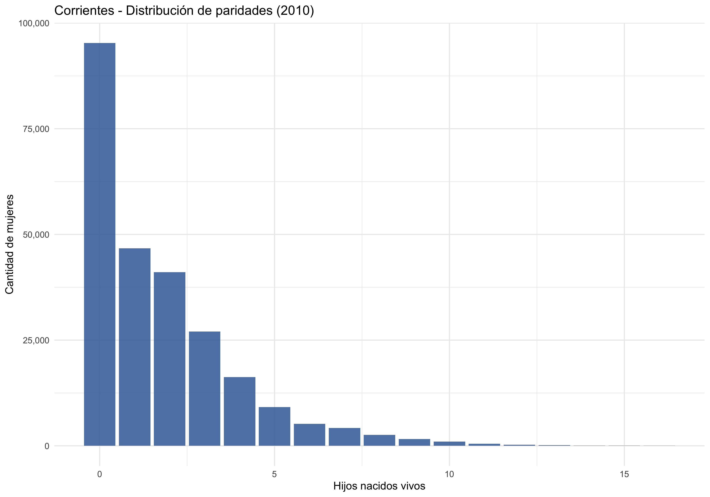
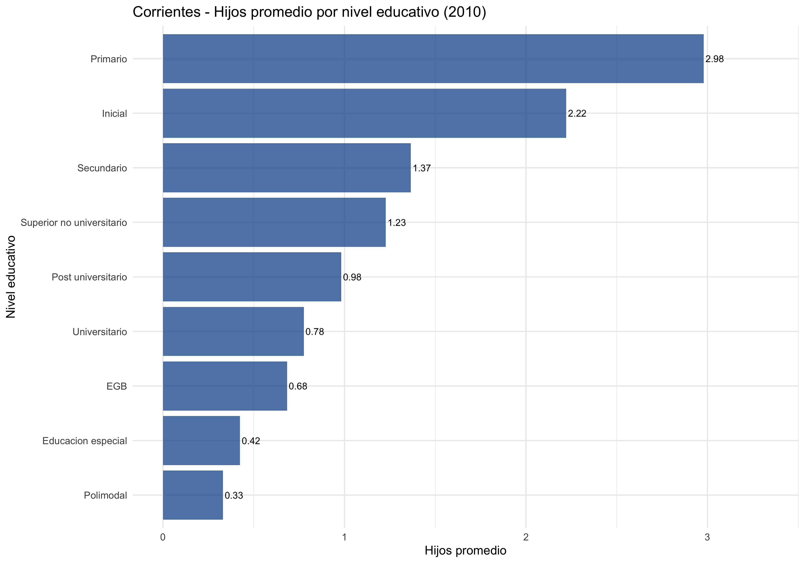
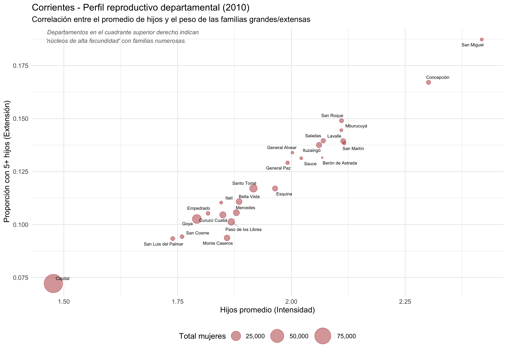
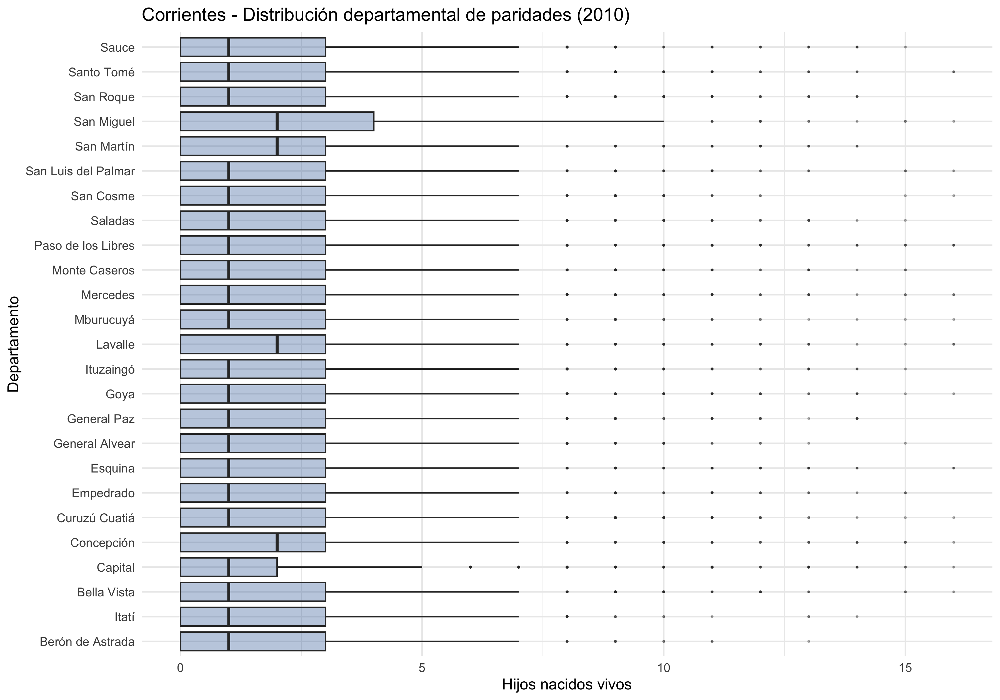
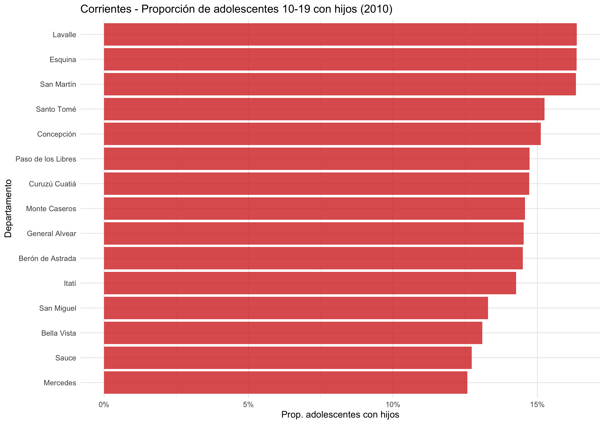
Mujeres con hijos por edad y número de hijos (2010)
{kind=link}
Tabla departamental (2010)
| Departamento | PMG | TGF | Paridez media final (40-44) | Prop. con hijos | Prop. sin hijos | Mujeres 15-49 |
|---|---|---|---|---|---|---|
| San Miguel | 2.418 | 3.770 | 4.951 | 0.664 | 0.336 | 2253 |
| Concepción | 2.301 | 3.626 | 4.567 | 0.687 | 0.313 | 4567 |
| San Martín | 2.116 | 3.434 | 3.772 | 0.690 | 0.310 | 2912 |
| Lavalle | 2.114 | 3.127 | 3.920 | 0.684 | 0.316 | 6652 |
| San Roque | 2.110 | 2.982 | 4.254 | 0.648 | 0.352 | 4215 |
| Mburucuyá | 2.110 | 2.940 | 3.734 | 0.649 | 0.351 | 2090 |
| Saladas | 2.070 | 2.972 | 4.037 | 0.654 | 0.346 | 5282 |
| Berón de Astrada | 2.068 | 2.953 | 3.587 | 0.673 | 0.327 | 532 |
| Ituzaingó | 2.061 | 2.883 | 3.838 | 0.670 | 0.330 | 7532 |
| Sauce | 2.022 | 2.901 | 4.234 | 0.641 | 0.359 | 1988 |
| General Alvear | 2.002 | 3.017 | 3.786 | 0.665 | 0.335 | 1792 |
| General Paz | 1.992 | 2.615 | 3.978 | 0.639 | 0.361 | 3322 |
| Esquina | 1.964 | 2.970 | 3.601 | 0.676 | 0.324 | 7094 |
| Santo Tomé | 1.917 | 3.119 | 3.616 | 0.650 | 0.350 | 15520 |
| Bella Vista | 1.885 | 2.850 | 3.418 | 0.657 | 0.343 | 9179 |
| Mercedes | 1.879 | 2.806 | 3.455 | 0.661 | 0.339 | 9868 |
| Paso de los Libres | 1.868 | 3.181 | 3.348 | 0.675 | 0.325 | 12060 |
| Monte Caseros | 1.859 | 2.826 | 3.333 | 0.677 | 0.323 | 8613 |
| Curuzú Cuatiá | 1.849 | 3.095 | 3.382 | 0.658 | 0.342 | 10519 |
| Itatí | 1.846 | 2.449 | 3.796 | 0.646 | 0.354 | 2184 |
| Empedrado | 1.817 | 2.576 | 3.772 | 0.641 | 0.359 | 3667 |
| Goya | 1.792 | 2.893 | 3.292 | 0.635 | 0.365 | 22160 |
| San Cosme | 1.760 | 2.471 | 3.293 | 0.634 | 0.366 | 3649 |
| San Luis del Palmar | 1.739 | 2.570 | 3.433 | 0.601 | 0.399 | 4285 |
| Capital | 1.477 | 2.316 | 2.890 | 0.566 | 0.434 | 99285 |
Mapa de paridez media (2010)
{kind=link}
Entre Ríos
Indicadores globales
| Paridez media general (PMG) | Tasa global de fecundidad (TGF) | Paridez media final (40-44) | Prop. con hijos (1+) | Prop. sin hijos (0) | Prop. 5+ hijos | Prop. adolescentes 10-19 con hijos | N (mujeres 15-49) |
|---|---|---|---|---|---|---|---|
| 1.649 | 2.452 | 2.941 | 0.636 | 0.364 | 0.073 | 0.118 | 303203 |
Análisis demográfico (2010):
En 2010, Entre Ríos registra una paridez media general de 1.65 hijos por mujer de 15-49 años, una TGF censal de 2.45 y una paridez media final de 40-44 años de 2.94. La proporción de mujeres con hijos alcanza 63.6%. Entre los departamentos con base poblacional suficiente, la PMG va de 1.44 en Paraná a 1.92 en La Paz, lo que da una medida directa de la heterogeneidad territorial dentro de la provincia. El gradiente educativo también aparece en los promedios: el nivel con menor paridez es Univ y mas (0.83) y el de mayor paridez es Bajo (2.65). Entre las adolescentes de 10-19 años la proporción con hijos es 11.8%.
Distribución, gradiente educativo y heterogeneidad departamental
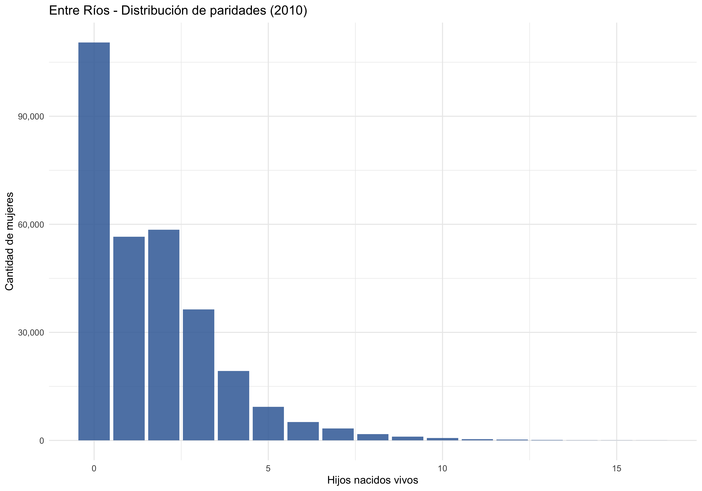
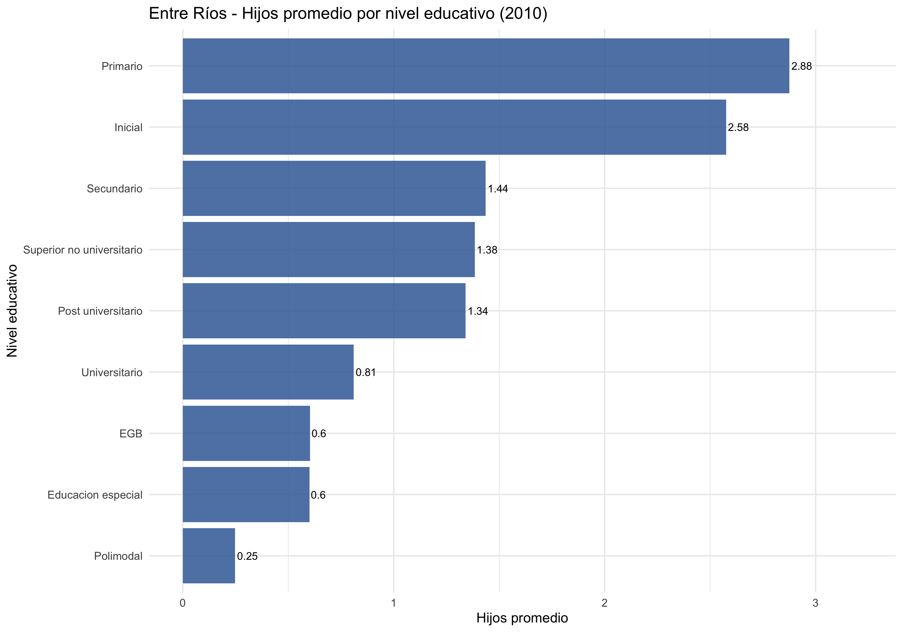
Mujeres con hijos por edad y número de hijos (2010)
{kind=link}
Tabla departamental (2010)
| Departamento | PMG | TGF | Paridez media final (40-44) | Prop. con hijos | Prop. sin hijos | Mujeres 15-49 |
|---|---|---|---|---|---|---|
| Islas del Ibicuy | 2.024 | 2.775 | 3.934 | 0.695 | 0.305 | 2892 |
| Feliciano | 2.020 | 2.632 | 3.828 | 0.665 | 0.335 | 3663 |
| La Paz | 1.922 | 2.760 | 3.645 | 0.649 | 0.351 | 16155 |
| San Salvador | 1.903 | 2.703 | 3.006 | 0.708 | 0.292 | 4087 |
| Federal | 1.864 | 2.428 | 3.343 | 0.678 | 0.322 | 6250 |
| Villaguay | 1.834 | 2.431 | 3.359 | 0.660 | 0.340 | 11654 |
| Concordia | 1.798 | 2.780 | 3.328 | 0.647 | 0.353 | 41818 |
| Federación | 1.783 | 2.634 | 3.193 | 0.679 | 0.321 | 16675 |
| Tala | 1.731 | 2.518 | 2.945 | 0.673 | 0.327 | 5807 |
| Nogoyá | 1.724 | 2.332 | 3.109 | 0.670 | 0.330 | 9043 |
| Gualeguay | 1.677 | 2.662 | 2.826 | 0.671 | 0.329 | 12559 |
| Victoria | 1.675 | 2.508 | 2.960 | 0.661 | 0.339 | 8597 |
| Gualeguaychú | 1.658 | 2.585 | 2.632 | 0.666 | 0.334 | 26145 |
| Colón | 1.648 | 2.457 | 2.773 | 0.661 | 0.339 | 14881 |
| Uruguay | 1.608 | 2.579 | 2.797 | 0.642 | 0.358 | 23867 |
| Diamante | 1.449 | 1.878 | 2.784 | 0.592 | 0.408 | 11459 |
| Paraná | 1.437 | 2.166 | 2.640 | 0.584 | 0.416 | 87651 |
Mapa de paridez media (2010)
{kind=link}
Formosa
Indicadores globales
| Paridez media general (PMG) | Tasa global de fecundidad (TGF) | Paridez media final (40-44) | Prop. con hijos (1+) | Prop. sin hijos (0) | Prop. 5+ hijos | Prop. adolescentes 10-19 con hijos | N (mujeres 15-49) |
|---|---|---|---|---|---|---|---|
| 1.873 | 2.809 | 3.482 | 0.651 | 0.349 | 0.11 | 0.13 | 131518 |
Análisis demográfico (2010):
En 2010, Formosa registra una paridez media general de 1.87 hijos por mujer de 15-49 años, una TGF censal de 2.81 y una paridez media final de 40-44 años de 3.48. La proporción de mujeres con hijos alcanza 65.1%. Entre los departamentos con base poblacional suficiente, la PMG va de 1.66 en Formosa a 2.18 en Laishi, lo que da una medida directa de la heterogeneidad territorial dentro de la provincia. El gradiente educativo también aparece en los promedios: el nivel con menor paridez es Univ y mas (0.92) y el de mayor paridez es Bajo (3.06). Entre las adolescentes de 10-19 años la proporción con hijos es 13.0%.
Distribución, gradiente educativo y heterogeneidad departamental
Mujeres con hijos por edad y número de hijos (2010)
{kind=link}
Tabla departamental (2010)
| Departamento | PMG | TGF | Paridez media final (40-44) | Prop. con hijos | Prop. sin hijos | Mujeres 15-49 |
|---|---|---|---|---|---|---|
| Ramón Lista | 2.455 | 4.447 | 4.914 | 0.734 | 0.266 | 2751 |
| Bermejo | 2.439 | 4.239 | 4.530 | 0.733 | 0.267 | 2735 |
| Laishi | 2.184 | 2.993 | 4.139 | 0.681 | 0.319 | 3836 |
| Pilagás | 2.162 | 2.918 | 3.921 | 0.687 | 0.313 | 4146 |
| Patiño | 2.123 | 3.233 | 3.893 | 0.691 | 0.309 | 15481 |
| Matacos | 2.113 | 3.142 | 4.073 | 0.695 | 0.305 | 3503 |
| Pirané | 2.050 | 3.095 | 3.828 | 0.671 | 0.329 | 15086 |
| Pilcomayo | 1.888 | 2.770 | 3.408 | 0.662 | 0.338 | 20727 |
| Formosa | 1.663 | 2.469 | 3.135 | 0.620 | 0.380 | 63253 |
Mapa de paridez media (2010)
{kind=link}
Jujuy
Indicadores globales
| Paridez media general (PMG) | Tasa global de fecundidad (TGF) | Paridez media final (40-44) | Prop. con hijos (1+) | Prop. sin hijos (0) | Prop. 5+ hijos | Prop. adolescentes 10-19 con hijos | N (mujeres 15-49) |
|---|---|---|---|---|---|---|---|
| 1.7 | 2.497 | 3.197 | 0.639 | 0.361 | 0.087 | 0.105 | 173950 |
Análisis demográfico (2010):
En 2010, Jujuy registra una paridez media general de 1.70 hijos por mujer de 15-49 años, una TGF censal de 2.50 y una paridez media final de 40-44 años de 3.20. La proporción de mujeres con hijos alcanza 63.9%. Entre los departamentos con base poblacional suficiente, la PMG va de 1.53 en Dr. Manuel Belgrano a 2.25 en Cochinoca, lo que da una medida directa de la heterogeneidad territorial dentro de la provincia. El gradiente educativo también aparece en los promedios: el nivel con menor paridez es Univ y mas (0.93) y el de mayor paridez es Bajo (3.13). Entre las adolescentes de 10-19 años la proporción con hijos es 10.5%.
Distribución, gradiente educativo y heterogeneidad departamental
Mujeres con hijos por edad y número de hijos (2010)
{kind=link}
Tabla departamental (2010)
| Departamento | PMG | TGF | Paridez media final (40-44) | Prop. con hijos | Prop. sin hijos | Mujeres 15-49 |
|---|---|---|---|---|---|---|
| Susques | 2.794 | 3.409 | 5.890 | 0.771 | 0.229 | 791 |
| Santa Catalina | 2.687 | 3.300 | 5.492 | 0.718 | 0.282 | 595 |
| Rinconada | 2.601 | 3.986 | 5.711 | 0.696 | 0.304 | 414 |
| Valle Grande | 2.487 | 4.340 | 4.193 | 0.746 | 0.254 | 489 |
| Cochinoca | 2.245 | 3.276 | 4.708 | 0.687 | 0.313 | 3072 |
| Santa Bárbara | 2.123 | 3.182 | 4.361 | 0.700 | 0.300 | 4260 |
| Humahuaca | 1.957 | 2.805 | 3.929 | 0.676 | 0.324 | 4390 |
| Tumbaya | 1.866 | 2.618 | 4.157 | 0.638 | 0.362 | 1072 |
| Yavi | 1.839 | 2.456 | 3.614 | 0.649 | 0.351 | 5310 |
| San Antonio | 1.820 | 2.858 | 3.284 | 0.648 | 0.352 | 1117 |
| El Carmen | 1.814 | 2.606 | 3.647 | 0.657 | 0.343 | 24880 |
| Ledesma | 1.770 | 2.781 | 3.283 | 0.672 | 0.328 | 20851 |
| Tilcara | 1.763 | 2.301 | 3.491 | 0.656 | 0.344 | 3002 |
| San Pedro | 1.720 | 2.326 | 3.202 | 0.643 | 0.357 | 18733 |
| Palpalá | 1.651 | 2.412 | 3.159 | 0.630 | 0.370 | 13779 |
| Dr. Manuel Belgrano | 1.531 | 2.293 | 2.800 | 0.611 | 0.389 | 71195 |
Mapa de paridez media (2010)
{kind=link}
La Pampa
Indicadores globales
| Paridez media general (PMG) | Tasa global de fecundidad (TGF) | Paridez media final (40-44) | Prop. con hijos (1+) | Prop. sin hijos (0) | Prop. 5+ hijos | Prop. adolescentes 10-19 con hijos | N (mujeres 15-49) |
|---|---|---|---|---|---|---|---|
| 1.644 | 2.344 | 2.917 | 0.659 | 0.341 | 0.064 | 0.113 | 77571 |
Análisis demográfico (2010):
En 2010, La Pampa registra una paridez media general de 1.64 hijos por mujer de 15-49 años, una TGF censal de 2.34 y una paridez media final de 40-44 años de 2.92. La proporción de mujeres con hijos alcanza 65.9%. Entre los departamentos con base poblacional suficiente, la PMG va de 1.52 en Capital a 1.96 en Catriló, lo que da una medida directa de la heterogeneidad territorial dentro de la provincia. El gradiente educativo también aparece en los promedios: el nivel con menor paridez es Univ y mas (0.98) y el de mayor paridez es Bajo (2.45). Entre las adolescentes de 10-19 años la proporción con hijos es 11.3%.
Distribución, gradiente educativo y heterogeneidad departamental
Mujeres con hijos por edad y número de hijos (2010)
{kind=link}
Tabla departamental (2010)
| Departamento | PMG | TGF | Paridez media final (40-44) | Prop. con hijos | Prop. sin hijos | Mujeres 15-49 |
|---|---|---|---|---|---|---|
| Chical Co | 2.314 | 2.960 | 3.564 | 0.833 | 0.167 | 293 |
| Lihuel Calel | 2.203 | 2.458 | 2.765 | 0.848 | 0.152 | 79 |
| Catriló | 1.956 | 2.909 | 3.310 | 0.718 | 0.282 | 1676 |
| Curacó | 1.955 | 2.310 | 3.792 | 0.755 | 0.245 | 220 |
| Caleu Caleu | 1.919 | 3.002 | 3.676 | 0.759 | 0.241 | 556 |
| Chalileo | 1.918 | 2.267 | 3.216 | 0.730 | 0.270 | 686 |
| Limay Mahuida | 1.898 | 2.463 | 2.909 | 0.735 | 0.265 | 98 |
| Puelén | 1.886 | 2.851 | 3.626 | 0.673 | 0.327 | 2369 |
| Rancul | 1.860 | 2.575 | 3.015 | 0.714 | 0.286 | 2466 |
| Toay | 1.827 | 3.102 | 3.003 | 0.714 | 0.286 | 3097 |
| Chapaleufú | 1.752 | 2.418 | 3.107 | 0.680 | 0.320 | 2649 |
| Loventué | 1.742 | 2.307 | 3.239 | 0.671 | 0.329 | 2033 |
| Utracán | 1.741 | 2.297 | 3.057 | 0.689 | 0.311 | 3615 |
| Realicó | 1.707 | 2.115 | 2.992 | 0.670 | 0.330 | 3834 |
| Quemú Quemú | 1.693 | 2.037 | 2.775 | 0.674 | 0.326 | 1957 |
| Trenel | 1.687 | 1.972 | 2.957 | 0.661 | 0.339 | 1223 |
| Atreucó | 1.676 | 2.089 | 2.717 | 0.709 | 0.291 | 2326 |
| Hucal | 1.673 | 1.753 | 2.759 | 0.688 | 0.312 | 1631 |
| Conhelo | 1.603 | 2.103 | 2.755 | 0.675 | 0.325 | 3246 |
| Maracó | 1.592 | 2.497 | 2.888 | 0.648 | 0.352 | 14820 |
| Guatraché | 1.586 | 2.499 | 2.608 | 0.675 | 0.325 | 1716 |
| Capital | 1.524 | 2.201 | 2.809 | 0.622 | 0.378 | 26981 |
Mapa de paridez media (2010)
{kind=link}
La Rioja
Indicadores globales
| Paridez media general (PMG) | Tasa global de fecundidad (TGF) | Paridez media final (40-44) | Prop. con hijos (1+) | Prop. sin hijos (0) | Prop. 5+ hijos | Prop. adolescentes 10-19 con hijos | N (mujeres 15-49) |
|---|---|---|---|---|---|---|---|
| 1.653 | 2.325 | 3.197 | 0.63 | 0.37 | 0.081 | 0.116 | 88098 |
Análisis demográfico (2010):
En 2010, La Rioja registra una paridez media general de 1.65 hijos por mujer de 15-49 años, una TGF censal de 2.32 y una paridez media final de 40-44 años de 3.20. La proporción de mujeres con hijos alcanza 63.0%. Entre los departamentos con base poblacional suficiente, la PMG va de 1.53 en Capital a 2.12 en General Juan Facundo Quiroga, lo que da una medida directa de la heterogeneidad territorial dentro de la provincia. El gradiente educativo también aparece en los promedios: el nivel con menor paridez es Univ y mas (0.91) y el de mayor paridez es Bajo (2.57). Entre las adolescentes de 10-19 años la proporción con hijos es 11.6%.
Distribución, gradiente educativo y heterogeneidad departamental
Mujeres con hijos por edad y número de hijos (2010)
{kind=link}
Tabla departamental (2010)
| Departamento | PMG | TGF | Paridez media final (40-44) | Prop. con hijos | Prop. sin hijos | Mujeres 15-49 |
|---|---|---|---|---|---|---|
| Independencia | 2.226 | 2.860 | 3.857 | 0.719 | 0.281 | 566 |
| General Juan Facundo Quiroga | 2.117 | 2.218 | 3.768 | 0.676 | 0.324 | 973 |
| Ángel Vicente Peñaloza | 2.105 | 2.657 | 4.162 | 0.680 | 0.320 | 696 |
| General San Martín | 2.085 | 3.063 | 4.127 | 0.659 | 0.341 | 1181 |
| San Blas de Los Sauces | 1.931 | 2.390 | 4.020 | 0.659 | 0.341 | 969 |
| Famatina | 1.863 | 2.286 | 3.537 | 0.683 | 0.317 | 1399 |
| General Ortiz de Ocampo | 1.852 | 2.612 | 3.337 | 0.668 | 0.332 | 1639 |
| Vinchina | 1.844 | 2.044 | 3.282 | 0.675 | 0.325 | 655 |
| Rosario Vera Peñaloza | 1.819 | 2.617 | 3.282 | 0.641 | 0.359 | 3510 |
| Castro Barros | 1.804 | 2.450 | 3.440 | 0.658 | 0.342 | 990 |
| Arauco | 1.792 | 2.579 | 3.467 | 0.669 | 0.331 | 3903 |
| Chilecito | 1.787 | 2.677 | 3.233 | 0.674 | 0.326 | 12538 |
| General Belgrano | 1.782 | 2.120 | 3.412 | 0.632 | 0.368 | 1793 |
| General Lamadrid | 1.775 | 2.070 | 3.319 | 0.667 | 0.333 | 472 |
| General Felipe Varela | 1.760 | 2.310 | 3.432 | 0.647 | 0.353 | 2433 |
| Sanagasta | 1.658 | 2.192 | 3.639 | 0.603 | 0.397 | 625 |
| Chamical | 1.649 | 2.306 | 3.143 | 0.619 | 0.381 | 3623 |
| Capital | 1.531 | 2.186 | 3.036 | 0.607 | 0.393 | 50133 |
Mapa de paridez media (2010)
{kind=link}
Mendoza
Indicadores globales
| Paridez media general (PMG) | Tasa global de fecundidad (TGF) | Paridez media final (40-44) | Prop. con hijos (1+) | Prop. sin hijos (0) | Prop. 5+ hijos | Prop. adolescentes 10-19 con hijos | N (mujeres 15-49) |
|---|---|---|---|---|---|---|---|
| 1.549 | 2.56 | 2.863 | 0.614 | 0.386 | 0.06 | 0.099 | 435565 |
Análisis demográfico (2010):
En 2010, Mendoza registra una paridez media general de 1.55 hijos por mujer de 15-49 años, una TGF censal de 2.56 y una paridez media final de 40-44 años de 2.86. La proporción de mujeres con hijos alcanza 61.4%. Entre los departamentos con base poblacional suficiente, la PMG va de 1.10 en Capital a 1.87 en Lavalle, lo que da una medida directa de la heterogeneidad territorial dentro de la provincia. El gradiente educativo también aparece en los promedios: el nivel con menor paridez es Univ y mas (0.85) y el de mayor paridez es Bajo (2.45). Entre las adolescentes de 10-19 años la proporción con hijos es 9.9%.
Distribución, gradiente educativo y heterogeneidad departamental
Mujeres con hijos por edad y número de hijos (2010)
{kind=link}
Tabla departamental (2010)
| Departamento | PMG | TGF | Paridez media final (40-44) | Prop. con hijos | Prop. sin hijos | Mujeres 15-49 |
|---|---|---|---|---|---|---|
| Lavalle | 1.869 | 2.957 | 3.618 | 0.649 | 0.351 | 9108 |
| Tupungato | 1.846 | 2.996 | 3.378 | 0.676 | 0.324 | 8129 |
| Santa Rosa | 1.828 | 2.719 | 3.700 | 0.650 | 0.350 | 3911 |
| Malargüe | 1.778 | 2.754 | 3.288 | 0.694 | 0.306 | 6828 |
| Tunuyán | 1.724 | 2.889 | 3.169 | 0.665 | 0.335 | 12428 |
| La Paz | 1.717 | 2.203 | 3.198 | 0.648 | 0.352 | 2506 |
| San Carlos | 1.688 | 2.840 | 3.131 | 0.662 | 0.338 | 8103 |
| General Alvear | 1.645 | 2.551 | 2.924 | 0.648 | 0.352 | 10782 |
| San Martín | 1.625 | 2.792 | 2.901 | 0.629 | 0.371 | 29027 |
| Las Heras | 1.617 | 2.703 | 3.012 | 0.637 | 0.363 | 51765 |
| Luján de Cuyo | 1.617 | 2.663 | 2.850 | 0.624 | 0.376 | 30266 |
| Rivadavia | 1.616 | 2.619 | 3.026 | 0.625 | 0.375 | 13785 |
| Maipú | 1.595 | 2.568 | 2.879 | 0.636 | 0.364 | 44217 |
| San Rafael | 1.577 | 2.443 | 2.998 | 0.617 | 0.383 | 45789 |
| Junín | 1.576 | 2.482 | 2.804 | 0.631 | 0.369 | 9457 |
| Guaymallén | 1.526 | 2.575 | 2.773 | 0.607 | 0.393 | 72230 |
| Godoy Cruz | 1.337 | 2.292 | 2.571 | 0.568 | 0.432 | 48571 |
| Capital | 1.099 | 2.053 | 2.191 | 0.486 | 0.514 | 28663 |
Mapa de paridez media (2010)
{kind=link}
Misiones
Indicadores globales
| Paridez media general (PMG) | Tasa global de fecundidad (TGF) | Paridez media final (40-44) | Prop. con hijos (1+) | Prop. sin hijos (0) | Prop. 5+ hijos | Prop. adolescentes 10-19 con hijos | N (mujeres 15-49) |
|---|---|---|---|---|---|---|---|
| 1.947 | 3.097 | 3.69 | 0.661 | 0.339 | 0.116 | 0.142 | 272191 |
Análisis demográfico (2010):
En 2010, Misiones registra una paridez media general de 1.95 hijos por mujer de 15-49 años, una TGF censal de 3.10 y una paridez media final de 40-44 años de 3.69. La proporción de mujeres con hijos alcanza 66.1%. Entre los departamentos con base poblacional suficiente, la PMG va de 1.66 en Capital a 2.47 en San Pedro, lo que da una medida directa de la heterogeneidad territorial dentro de la provincia. El gradiente educativo también aparece en los promedios: el nivel con menor paridez es Univ y mas (0.91) y el de mayor paridez es Bajo (2.95). Entre las adolescentes de 10-19 años la proporción con hijos es 14.2%.
Distribución, gradiente educativo y heterogeneidad departamental
Mujeres con hijos por edad y número de hijos (2010)
{kind=link}
Tabla departamental (2010)
| Departamento | PMG | TGF | Paridez media final (40-44) | Prop. con hijos | Prop. sin hijos | Mujeres 15-49 |
|---|---|---|---|---|---|---|
| San Pedro | 2.473 | 4.184 | 4.931 | 0.716 | 0.284 | 6784 |
| General Manuel Belgrano | 2.272 | 3.475 | 4.283 | 0.718 | 0.282 | 9841 |
| Guaraní | 2.260 | 3.696 | 4.319 | 0.722 | 0.278 | 15565 |
| Cainguás | 2.254 | 3.660 | 4.457 | 0.703 | 0.297 | 12210 |
| Concepción | 2.239 | 3.805 | 4.070 | 0.694 | 0.306 | 2153 |
| 25 de Mayo | 2.194 | 3.065 | 3.921 | 0.718 | 0.282 | 6460 |
| San Javier | 2.135 | 3.483 | 3.985 | 0.719 | 0.281 | 4892 |
| San Ignacio | 2.130 | 3.175 | 4.043 | 0.671 | 0.329 | 13616 |
| Montecarlo | 2.097 | 2.899 | 4.133 | 0.673 | 0.327 | 8751 |
| Candelaria | 2.086 | 3.040 | 3.895 | 0.670 | 0.330 | 6366 |
| Apóstoles | 2.085 | 3.049 | 3.894 | 0.666 | 0.334 | 10296 |
| Libertador General San Martín | 2.015 | 2.929 | 3.644 | 0.679 | 0.321 | 11110 |
| Oberá | 1.979 | 3.399 | 3.935 | 0.656 | 0.344 | 25850 |
| Iguazú | 1.977 | 3.155 | 3.758 | 0.689 | 0.311 | 20234 |
| Leandro N. Alem | 1.921 | 2.667 | 3.467 | 0.675 | 0.325 | 10980 |
| Eldorado | 1.875 | 3.203 | 3.587 | 0.664 | 0.336 | 19643 |
| Capital | 1.659 | 2.689 | 3.161 | 0.612 | 0.388 | 87440 |
Mapa de paridez media (2010)
{kind=link}
Neuquén
Indicadores globales
| Paridez media general (PMG) | Tasa global de fecundidad (TGF) | Paridez media final (40-44) | Prop. con hijos (1+) | Prop. sin hijos (0) | Prop. 5+ hijos | Prop. adolescentes 10-19 con hijos | N (mujeres 15-49) |
|---|---|---|---|---|---|---|---|
| 1.606 | 2.473 | 2.938 | 0.658 | 0.342 | 0.059 | 0.114 | 148159 |
Análisis demográfico (2010):
En 2010, Neuquén registra una paridez media general de 1.61 hijos por mujer de 15-49 años, una TGF censal de 2.47 y una paridez media final de 40-44 años de 2.94. La proporción de mujeres con hijos alcanza 65.8%. Entre los departamentos con base poblacional suficiente, la PMG va de 1.54 en Confluencia a 1.96 en Añelo, lo que da una medida directa de la heterogeneidad territorial dentro de la provincia. El gradiente educativo también aparece en los promedios: el nivel con menor paridez es Univ y mas (1.00) y el de mayor paridez es Bajo (2.81). Entre las adolescentes de 10-19 años la proporción con hijos es 11.4%.
Distribución, gradiente educativo y heterogeneidad departamental
Mujeres con hijos por edad y número de hijos (2010)
{kind=link}
Tabla departamental (2010)
| Departamento | PMG | TGF | Paridez media final (40-44) | Prop. con hijos | Prop. sin hijos | Mujeres 15-49 |
|---|---|---|---|---|---|---|
| Catán Lil | 1.972 | 2.936 | 3.907 | 0.715 | 0.285 | 463 |
| Picún Leufú | 1.965 | 3.193 | 3.212 | 0.728 | 0.272 | 1112 |
| Añelo | 1.956 | 3.053 | 3.736 | 0.726 | 0.274 | 2785 |
| Picunches | 1.916 | 3.090 | 3.533 | 0.714 | 0.286 | 1753 |
| Ñorquín | 1.867 | 2.489 | 3.563 | 0.708 | 0.292 | 1145 |
| Pehuenches | 1.821 | 2.893 | 3.177 | 0.739 | 0.261 | 6098 |
| Collón Curá | 1.809 | 2.371 | 3.606 | 0.676 | 0.324 | 1202 |
| Minas | 1.808 | 2.498 | 3.010 | 0.700 | 0.300 | 1922 |
| Loncopué | 1.799 | 2.395 | 3.258 | 0.688 | 0.312 | 1803 |
| Aluminé | 1.777 | 3.147 | 3.116 | 0.687 | 0.313 | 2031 |
| Zapala | 1.730 | 2.602 | 3.126 | 0.691 | 0.309 | 9748 |
| Chos Malal | 1.687 | 2.380 | 3.122 | 0.679 | 0.321 | 4246 |
| Huiliches | 1.665 | 2.651 | 3.005 | 0.704 | 0.296 | 3855 |
| Lácar | 1.619 | 2.892 | 2.680 | 0.681 | 0.319 | 7667 |
| Los Lagos | 1.604 | 2.187 | 2.598 | 0.690 | 0.310 | 2874 |
| Confluencia | 1.537 | 2.353 | 2.865 | 0.638 | 0.362 | 99455 |
Mapa de paridez media (2010)
{kind=link}
Río Negro
Indicadores globales
| Paridez media general (PMG) | Tasa global de fecundidad (TGF) | Paridez media final (40-44) | Prop. con hijos (1+) | Prop. sin hijos (0) | Prop. 5+ hijos | Prop. adolescentes 10-19 con hijos | N (mujeres 15-49) |
|---|---|---|---|---|---|---|---|
| 1.627 | 2.348 | 2.848 | 0.658 | 0.342 | 0.062 | 0.113 | 163240 |
Análisis demográfico (2010):
En 2010, Río Negro registra una paridez media general de 1.63 hijos por mujer de 15-49 años, una TGF censal de 2.35 y una paridez media final de 40-44 años de 2.85. La proporción de mujeres con hijos alcanza 65.8%. Entre los departamentos con base poblacional suficiente, la PMG va de 1.51 en Bariloche a 1.88 en Avellaneda, lo que da una medida directa de la heterogeneidad territorial dentro de la provincia. El gradiente educativo también aparece en los promedios: el nivel con menor paridez es Univ y mas (1.03) y el de mayor paridez es Bajo (2.84). Entre las adolescentes de 10-19 años la proporción con hijos es 11.3%.
Distribución, gradiente educativo y heterogeneidad departamental
Mujeres con hijos por edad y número de hijos (2010)
{kind=link}
Tabla departamental (2010)
| Departamento | PMG | TGF | Paridez media final (40-44) | Prop. con hijos | Prop. sin hijos | Mujeres 15-49 |
|---|---|---|---|---|---|---|
| Ñorquinco | 2.102 | 2.114 | 3.606 | 0.747 | 0.253 | 304 |
| El Cuy | 1.995 | 2.952 | 3.520 | 0.732 | 0.268 | 1125 |
| 9 de Julio | 1.991 | 1.672 | 3.565 | 0.732 | 0.268 | 799 |
| Avellaneda | 1.881 | 2.791 | 3.295 | 0.709 | 0.291 | 8764 |
| Conesa | 1.795 | 2.425 | 3.137 | 0.722 | 0.278 | 1710 |
| San Antonio | 1.788 | 2.545 | 2.959 | 0.705 | 0.295 | 7002 |
| 25 de Mayo | 1.773 | 2.755 | 3.152 | 0.714 | 0.286 | 3773 |
| Valcheta | 1.766 | 2.318 | 3.058 | 0.666 | 0.334 | 1733 |
| Pichi Mahuida | 1.731 | 2.228 | 3.175 | 0.669 | 0.331 | 3479 |
| Pilcaniyeu | 1.701 | 2.226 | 2.931 | 0.679 | 0.321 | 1762 |
| Adolfo Alsina | 1.613 | 2.038 | 2.739 | 0.650 | 0.350 | 14798 |
| General Roca | 1.611 | 2.395 | 2.855 | 0.649 | 0.351 | 83732 |
| Bariloche | 1.505 | 2.182 | 2.610 | 0.645 | 0.355 | 34259 |
Mapa de paridez media (2010)
{kind=link}
Salta
Indicadores globales
| Paridez media general (PMG) | Tasa global de fecundidad (TGF) | Paridez media final (40-44) | Prop. con hijos (1+) | Prop. sin hijos (0) | Prop. 5+ hijos | Prop. adolescentes 10-19 con hijos | N (mujeres 15-49) |
|---|---|---|---|---|---|---|---|
| 1.788 | 3.131 | 3.34 | 0.639 | 0.361 | 0.098 | 0.127 | 308492 |
Análisis demográfico (2010):
En 2010, Salta registra una paridez media general de 1.79 hijos por mujer de 15-49 años, una TGF censal de 3.13 y una paridez media final de 40-44 años de 3.34. La proporción de mujeres con hijos alcanza 63.9%. Entre los departamentos con base poblacional suficiente, la PMG va de 1.55 en Capital a 2.56 en Santa Victoria, lo que da una medida directa de la heterogeneidad territorial dentro de la provincia. El gradiente educativo también aparece en los promedios: el nivel con menor paridez es Univ y mas (0.96) y el de mayor paridez es Bajo (2.83). Entre las adolescentes de 10-19 años la proporción con hijos es 12.7%.
Distribución, gradiente educativo y heterogeneidad departamental
Mujeres con hijos por edad y número de hijos (2010)
{kind=link}
Tabla departamental (2010)
| Departamento | PMG | TGF | Paridez media final (40-44) | Prop. con hijos | Prop. sin hijos | Mujeres 15-49 |
|---|---|---|---|---|---|---|
| La Poma | 2.771 | 3.421 | 4.938 | 0.726 | 0.274 | 350 |
| Molinos | 2.757 | 3.849 | 5.083 | 0.741 | 0.259 | 1155 |
| Iruya | 2.627 | 3.801 | 5.467 | 0.727 | 0.273 | 1271 |
| Santa Victoria | 2.559 | 4.253 | 5.859 | 0.702 | 0.298 | 2074 |
| Rivadavia | 2.452 | 4.669 | 4.633 | 0.729 | 0.271 | 6118 |
| Cachi | 2.434 | 3.641 | 4.410 | 0.697 | 0.303 | 1546 |
| Los Andes | 2.395 | 3.611 | 4.807 | 0.693 | 0.307 | 1295 |
| San Carlos | 2.317 | 3.447 | 4.660 | 0.719 | 0.281 | 1550 |
| Guachipas | 2.189 | 3.133 | 4.732 | 0.695 | 0.305 | 698 |
| La Candelaria | 2.169 | 3.272 | 3.973 | 0.683 | 0.317 | 1257 |
| Anta | 2.075 | 3.442 | 4.059 | 0.693 | 0.307 | 13647 |
| Orán | 2.060 | 3.221 | 3.764 | 0.676 | 0.324 | 34518 |
| La Viña | 1.998 | 2.732 | 4.025 | 0.656 | 0.344 | 1726 |
| Rosario de Lerma | 1.950 | 3.023 | 3.589 | 0.656 | 0.344 | 9678 |
| Cerrillos | 1.947 | 3.134 | 3.825 | 0.673 | 0.327 | 9042 |
| Chicoana | 1.926 | 2.870 | 3.733 | 0.665 | 0.335 | 5139 |
| Rosario de la Frontera | 1.910 | 3.032 | 3.405 | 0.678 | 0.322 | 6977 |
| General José de San Martín | 1.888 | 5.246 | 3.422 | 0.685 | 0.315 | 38155 |
| Metán | 1.860 | 2.837 | 3.631 | 0.645 | 0.355 | 9909 |
| Cafayate | 1.842 | 2.630 | 3.481 | 0.675 | 0.325 | 3673 |
| General Güemes | 1.831 | 2.589 | 3.503 | 0.648 | 0.352 | 11902 |
| La Caldera | 1.765 | 2.488 | 3.152 | 0.663 | 0.337 | 1927 |
| Capital | 1.546 | 2.510 | 2.919 | 0.595 | 0.405 | 144885 |
Mapa de paridez media (2010)
{kind=link}
San Juan
Indicadores globales
| Paridez media general (PMG) | Tasa global de fecundidad (TGF) | Paridez media final (40-44) | Prop. con hijos (1+) | Prop. sin hijos (0) | Prop. 5+ hijos | Prop. adolescentes 10-19 con hijos | N (mujeres 15-49) |
|---|---|---|---|---|---|---|---|
| 1.722 | 2.762 | 3.166 | 0.63 | 0.37 | 0.082 | 0.11 | 168279 |
Análisis demográfico (2010):
En 2010, San Juan registra una paridez media general de 1.72 hijos por mujer de 15-49 años, una TGF censal de 2.76 y una paridez media final de 40-44 años de 3.17. La proporción de mujeres con hijos alcanza 63.0%. Entre los departamentos con base poblacional suficiente, la PMG va de 1.30 en Capital a 2.24 en 25 de Mayo, lo que da una medida directa de la heterogeneidad territorial dentro de la provincia. El gradiente educativo también aparece en los promedios: el nivel con menor paridez es Univ y mas (0.95) y el de mayor paridez es Bajo (2.76). Entre las adolescentes de 10-19 años la proporción con hijos es 11.0%.
Distribución, gradiente educativo y heterogeneidad departamental
Mujeres con hijos por edad y número de hijos (2010)
{kind=link}
Tabla departamental (2010)
| Departamento | PMG | TGF | Paridez media final (40-44) | Prop. con hijos | Prop. sin hijos | Mujeres 15-49 |
|---|---|---|---|---|---|---|
| 25 de Mayo | 2.239 | 3.559 | 4.242 | 0.691 | 0.309 | 3853 |
| Sarmiento | 2.168 | 3.524 | 3.933 | 0.698 | 0.302 | 5136 |
| Calingasta | 2.058 | 3.007 | 4.026 | 0.693 | 0.307 | 2034 |
| Ullum | 2.017 | 2.987 | 3.693 | 0.681 | 0.319 | 1188 |
| Pocito | 2.007 | 3.212 | 3.585 | 0.685 | 0.315 | 13114 |
| 9 de Julio | 1.996 | 2.875 | 3.619 | 0.676 | 0.324 | 2300 |
| Zonda | 1.992 | 3.102 | 3.682 | 0.692 | 0.308 | 1170 |
| San Martín | 1.948 | 2.987 | 4.008 | 0.650 | 0.350 | 2688 |
| Angaco | 1.923 | 2.928 | 3.720 | 0.649 | 0.351 | 1896 |
| Iglesia | 1.916 | 2.569 | 3.597 | 0.685 | 0.315 | 1700 |
| Valle Fértil | 1.906 | 2.615 | 4.011 | 0.627 | 0.373 | 1714 |
| Caucete | 1.902 | 2.996 | 3.577 | 0.647 | 0.353 | 9189 |
| Chimbas | 1.847 | 2.729 | 3.350 | 0.654 | 0.346 | 22222 |
| Albardón | 1.846 | 2.889 | 3.528 | 0.656 | 0.344 | 5871 |
| Jáchal | 1.807 | 2.568 | 3.356 | 0.661 | 0.339 | 5084 |
| Santa Lucía | 1.660 | 2.952 | 3.227 | 0.616 | 0.384 | 12175 |
| Rawson | 1.655 | 2.566 | 2.975 | 0.632 | 0.368 | 29002 |
| Rivadavia | 1.572 | 2.325 | 2.943 | 0.604 | 0.396 | 21306 |
| Capital | 1.298 | 2.589 | 2.394 | 0.548 | 0.452 | 26637 |
Mapa de paridez media (2010)
{kind=link}
San Luis
Indicadores globales
| Paridez media general (PMG) | Tasa global de fecundidad (TGF) | Paridez media final (40-44) | Prop. con hijos (1+) | Prop. sin hijos (0) | Prop. 5+ hijos | Prop. adolescentes 10-19 con hijos | N (mujeres 15-49) |
|---|---|---|---|---|---|---|---|
| 1.72 | 2.474 | 3.054 | 0.658 | 0.342 | 0.077 | 0.107 | 107234 |
Análisis demográfico (2010):
En 2010, San Luis registra una paridez media general de 1.72 hijos por mujer de 15-49 años, una TGF censal de 2.47 y una paridez media final de 40-44 años de 3.05. La proporción de mujeres con hijos alcanza 65.8%. Entre los departamentos con base poblacional suficiente, la PMG va de 1.63 en Junín a 2.04 en Gobernador Dupuy, lo que da una medida directa de la heterogeneidad territorial dentro de la provincia. El gradiente educativo también aparece en los promedios: el nivel con menor paridez es Univ y mas (1.04) y el de mayor paridez es Bajo (2.76). Entre las adolescentes de 10-19 años la proporción con hijos es 10.7%.
Distribución, gradiente educativo y heterogeneidad departamental
Mujeres con hijos por edad y número de hijos (2010)
{kind=link}
Tabla departamental (2010)
| Departamento | PMG | TGF | Paridez media final (40-44) | Prop. con hijos | Prop. sin hijos | Mujeres 15-49 |
|---|---|---|---|---|---|---|
| Libertador General San Martín | 2.090 | 2.255 | 3.810 | 0.702 | 0.298 | 916 |
| Belgrano | 2.054 | 3.480 | 3.909 | 0.713 | 0.287 | 718 |
| Gobernador Dupuy | 2.036 | 2.557 | 3.665 | 0.706 | 0.294 | 2659 |
| Coronel Pringles | 1.904 | 2.553 | 3.415 | 0.694 | 0.306 | 2993 |
| Ayacucho | 1.902 | 2.927 | 3.570 | 0.683 | 0.317 | 4285 |
| General Pedernera | 1.774 | 2.752 | 3.066 | 0.672 | 0.328 | 31439 |
| Chacabuco | 1.714 | 2.274 | 3.065 | 0.686 | 0.314 | 4946 |
| Juan Martín de Pueyrredón | 1.648 | 2.299 | 2.969 | 0.639 | 0.361 | 52601 |
| Junín | 1.630 | 2.295 | 2.804 | 0.655 | 0.345 | 6677 |
Mapa de paridez media (2010)
{kind=link}
Santa Cruz
Indicadores globales
| Paridez media general (PMG) | Tasa global de fecundidad (TGF) | Paridez media final (40-44) | Prop. con hijos (1+) | Prop. sin hijos (0) | Prop. 5+ hijos | Prop. adolescentes 10-19 con hijos | N (mujeres 15-49) |
|---|---|---|---|---|---|---|---|
| 1.702 | 2.761 | 2.913 | 0.688 | 0.312 | 0.065 | 0.12 | 69841 |
Análisis demográfico (2010):
En 2010, Santa Cruz registra una paridez media general de 1.70 hijos por mujer de 15-49 años, una TGF censal de 2.76 y una paridez media final de 40-44 años de 2.91. La proporción de mujeres con hijos alcanza 68.8%. Entre los departamentos con base poblacional suficiente, la PMG va de 1.48 en Lago Argentino a 1.85 en Magallanes, lo que da una medida directa de la heterogeneidad territorial dentro de la provincia. El gradiente educativo también aparece en los promedios: el nivel con menor paridez es Univ y mas (1.28) y el de mayor paridez es Bajo (2.13). Entre las adolescentes de 10-19 años la proporción con hijos es 12.0%.
Distribución, gradiente educativo y heterogeneidad departamental
Mujeres con hijos por edad y número de hijos (2010)
{kind=link}
Tabla departamental (2010)
| Departamento | PMG | TGF | Paridez media final (40-44) | Prop. con hijos | Prop. sin hijos | Mujeres 15-49 |
|---|---|---|---|---|---|---|
| Lago Buenos Aires | 1.889 | 3.464 | 3.082 | 0.728 | 0.272 | 1985 |
| Magallanes | 1.846 | 2.620 | 3.154 | 0.728 | 0.272 | 2254 |
| Río Chico | 1.829 | 2.689 | 3.151 | 0.731 | 0.269 | 1126 |
| Deseado | 1.825 | 2.973 | 3.159 | 0.719 | 0.281 | 27042 |
| Corpen Aike | 1.667 | 2.824 | 2.970 | 0.693 | 0.307 | 2864 |
| Güer Aike | 1.599 | 2.616 | 2.718 | 0.657 | 0.343 | 29996 |
| Lago Argentino | 1.481 | 2.336 | 2.584 | 0.652 | 0.348 | 4574 |
Mapa de paridez media (2010)
{kind=link}
Santa Fe
Indicadores globales
| Paridez media general (PMG) | Tasa global de fecundidad (TGF) | Paridez media final (40-44) | Prop. con hijos (1+) | Prop. sin hijos (0) | Prop. 5+ hijos | Prop. adolescentes 10-19 con hijos | N (mujeres 15-49) |
|---|---|---|---|---|---|---|---|
| 1.501 | 2.371 | 2.724 | 0.611 | 0.389 | 0.058 | 0.123 | 805567 |
Análisis demográfico (2010):
En 2010, Santa Fe registra una paridez media general de 1.50 hijos por mujer de 15-49 años, una TGF censal de 2.37 y una paridez media final de 40-44 años de 2.72. La proporción de mujeres con hijos alcanza 61.1%. Entre los departamentos con base poblacional suficiente, la PMG va de 1.36 en Rosario a 1.93 en Vera, lo que da una medida directa de la heterogeneidad territorial dentro de la provincia. El gradiente educativo también aparece en los promedios: el nivel con menor paridez es Univ y mas (0.72) y el de mayor paridez es Bajo (2.64). Entre las adolescentes de 10-19 años la proporción con hijos es 12.3%.
Distribución, gradiente educativo y heterogeneidad departamental
Mujeres con hijos por edad y número de hijos (2010)
{kind=link}
Tabla departamental (2010)
| Departamento | PMG | TGF | Paridez media final (40-44) | Prop. con hijos | Prop. sin hijos | Mujeres 15-49 |
|---|---|---|---|---|---|---|
| 9 de Julio | 1.999 | 2.726 | 3.435 | 0.706 | 0.294 | 7089 |
| Vera | 1.930 | 2.487 | 3.459 | 0.687 | 0.313 | 12349 |
| San Javier | 1.917 | 2.481 | 3.697 | 0.681 | 0.319 | 7556 |
| Garay | 1.892 | 2.511 | 3.641 | 0.654 | 0.346 | 5078 |
| San Cristóbal | 1.814 | 2.557 | 3.016 | 0.685 | 0.315 | 16377 |
| General Obligado | 1.789 | 2.449 | 3.228 | 0.661 | 0.339 | 44341 |
| San Justo | 1.744 | 2.342 | 3.177 | 0.655 | 0.345 | 9752 |
| San Jerónimo | 1.637 | 2.370 | 2.916 | 0.644 | 0.356 | 19131 |
| Castellanos | 1.619 | 2.503 | 2.833 | 0.644 | 0.356 | 43937 |
| San Martín | 1.591 | 2.302 | 2.721 | 0.654 | 0.346 | 14957 |
| General López | 1.554 | 2.262 | 2.695 | 0.641 | 0.359 | 45277 |
| Las Colonias | 1.536 | 2.014 | 2.798 | 0.624 | 0.376 | 25761 |
| Belgrano | 1.528 | 2.252 | 2.761 | 0.638 | 0.362 | 10883 |
| San Lorenzo | 1.520 | 2.278 | 2.712 | 0.619 | 0.381 | 40110 |
| Constitución | 1.514 | 2.204 | 2.620 | 0.619 | 0.381 | 20983 |
| La Capital | 1.487 | 2.477 | 2.709 | 0.596 | 0.404 | 135385 |
| Iriondo | 1.467 | 2.152 | 2.618 | 0.619 | 0.381 | 15781 |
| Caseros | 1.376 | 1.998 | 2.479 | 0.589 | 0.411 | 19433 |
| Rosario | 1.361 | 2.380 | 2.539 | 0.581 | 0.419 | 311387 |
Mapa de paridez media (2010)
{kind=link}
Santiago del Estero
Indicadores globales
| Paridez media general (PMG) | Tasa global de fecundidad (TGF) | Paridez media final (40-44) | Prop. con hijos (1+) | Prop. sin hijos (0) | Prop. 5+ hijos | Prop. adolescentes 10-19 con hijos | N (mujeres 15-49) |
|---|---|---|---|---|---|---|---|
| 1.898 | 3.019 | 3.525 | 0.655 | 0.345 | 0.111 | 0.143 | 210839 |
Análisis demográfico (2010):
En 2010, Santiago del Estero registra una paridez media general de 1.90 hijos por mujer de 15-49 años, una TGF censal de 3.02 y una paridez media final de 40-44 años de 3.53. La proporción de mujeres con hijos alcanza 65.5%. Entre los departamentos con base poblacional suficiente, la PMG va de 1.60 en Capital a 2.60 en Salavina, lo que da una medida directa de la heterogeneidad territorial dentro de la provincia. El gradiente educativo también aparece en los promedios: el nivel con menor paridez es Univ y mas (0.99) y el de mayor paridez es Bajo (2.67). Entre las adolescentes de 10-19 años la proporción con hijos es 14.3%.
Distribución, gradiente educativo y heterogeneidad departamental
Mujeres con hijos por edad y número de hijos (2010)
{kind=link}
Tabla departamental (2010)
| Departamento | PMG | TGF | Paridez media final (40-44) | Prop. con hijos | Prop. sin hijos | Mujeres 15-49 |
|---|---|---|---|---|---|---|
| Salavina | 2.604 | 3.751 | 4.954 | 0.730 | 0.270 | 2303 |
| Sarmiento | 2.485 | 3.658 | 3.925 | 0.720 | 0.280 | 951 |
| San Martín | 2.457 | 4.053 | 4.593 | 0.710 | 0.290 | 2052 |
| Alberdi | 2.453 | 3.591 | 4.967 | 0.717 | 0.283 | 3593 |
| Figueroa | 2.450 | 3.855 | 4.804 | 0.701 | 0.299 | 3514 |
| Atamisqui | 2.404 | 4.363 | 4.917 | 0.714 | 0.286 | 2288 |
| Juan Felipe Ibarra | 2.363 | 3.221 | 4.259 | 0.715 | 0.285 | 3747 |
| Avellaneda | 2.344 | 3.426 | 4.418 | 0.697 | 0.303 | 4510 |
| Copo | 2.306 | 3.598 | 4.622 | 0.701 | 0.299 | 6815 |
| Mitre | 2.295 | 2.928 | 4.844 | 0.727 | 0.273 | 370 |
| Moreno | 2.281 | 3.718 | 4.556 | 0.711 | 0.289 | 7113 |
| Pellegrini | 2.281 | 3.625 | 4.342 | 0.701 | 0.299 | 4424 |
| Quebrachos | 2.175 | 3.456 | 4.107 | 0.693 | 0.307 | 2291 |
| Jiménez | 2.164 | 3.464 | 4.357 | 0.682 | 0.318 | 3142 |
| Silípica | 2.122 | 3.111 | 3.806 | 0.683 | 0.317 | 1742 |
| Guasayán | 2.091 | 3.323 | 3.901 | 0.684 | 0.316 | 1685 |
| Ojo de Agua | 2.086 | 2.982 | 3.496 | 0.679 | 0.321 | 3192 |
| General Taboada | 2.082 | 3.225 | 4.015 | 0.680 | 0.320 | 8877 |
| Robles | 2.062 | 3.234 | 4.063 | 0.676 | 0.324 | 10554 |
| Loreto | 2.053 | 3.171 | 3.942 | 0.671 | 0.329 | 4883 |
| Aguirre | 2.001 | 3.043 | 3.665 | 0.694 | 0.306 | 1722 |
| Rivadavia | 1.974 | 2.522 | 3.407 | 0.704 | 0.296 | 1235 |
| Belgrano | 1.877 | 2.579 | 3.570 | 0.676 | 0.324 | 2305 |
| Río Hondo | 1.861 | 2.903 | 3.462 | 0.665 | 0.335 | 13028 |
| Choya | 1.814 | 2.722 | 3.383 | 0.659 | 0.341 | 8364 |
| Banda | 1.762 | 2.910 | 3.452 | 0.642 | 0.358 | 36095 |
| Capital | 1.603 | 2.632 | 2.859 | 0.612 | 0.388 | 70044 |
Mapa de paridez media (2010)
{kind=link}
Tierra del Fuego
Indicadores globales
| Paridez media general (PMG) | Tasa global de fecundidad (TGF) | Paridez media final (40-44) | Prop. con hijos (1+) | Prop. sin hijos (0) | Prop. 5+ hijos | Prop. adolescentes 10-19 con hijos | N (mujeres 15-49) |
|---|---|---|---|---|---|---|---|
| 1.595 | 2.603 | 2.835 | 0.666 | 0.334 | 0.05 | 0.088 | 34217 |
Análisis demográfico (2010):
En 2010, Tierra del Fuego registra una paridez media general de 1.60 hijos por mujer de 15-49 años, una TGF censal de 2.60 y una paridez media final de 40-44 años de 2.84. La proporción de mujeres con hijos alcanza 66.6%. Entre los departamentos con base poblacional suficiente, la PMG va de 1.53 en Ushuaia a 1.64 en Río Grande, lo que da una medida directa de la heterogeneidad territorial dentro de la provincia. El gradiente educativo también aparece en los promedios: el nivel con menor paridez es Univ y mas (1.21) y el de mayor paridez es Bajo (2.28). Entre las adolescentes de 10-19 años la proporción con hijos es 8.8%.
Distribución, gradiente educativo y heterogeneidad departamental
Mujeres con hijos por edad y número de hijos (2010)
{kind=link}
Tabla departamental (2010)
| Departamento | PMG | TGF | Paridez media final (40-44) | Prop. con hijos | Prop. sin hijos | Mujeres 15-49 |
|---|---|---|---|---|---|---|
| Antártida Argentina | 2.250 | 0.000 | 2.000 | 0.875 | 0.125 | 8 |
| Río Grande | 1.645 | 2.667 | 2.966 | 0.676 | 0.324 | 18895 |
| Ushuaia | 1.534 | 2.502 | 2.689 | 0.654 | 0.346 | 15314 |
Mapa de paridez media (2010)
{kind=link}
Tucumán
Indicadores globales
| Paridez media general (PMG) | Tasa global de fecundidad (TGF) | Paridez media final (40-44) | Prop. con hijos (1+) | Prop. sin hijos (0) | Prop. 5+ hijos | Prop. adolescentes 10-19 con hijos | N (mujeres 15-49) |
|---|---|---|---|---|---|---|---|
| 1.634 | 2.677 | 3.091 | 0.61 | 0.39 | 0.077 | 0.108 | 368970 |
Análisis demográfico (2010):
En 2010, Tucumán registra una paridez media general de 1.63 hijos por mujer de 15-49 años, una TGF censal de 2.68 y una paridez media final de 40-44 años de 3.09. La proporción de mujeres con hijos alcanza 61.0%. Entre los departamentos con base poblacional suficiente, la PMG va de 1.43 en Capital a 1.99 en Burruyacú, lo que da una medida directa de la heterogeneidad territorial dentro de la provincia. El gradiente educativo también aparece en los promedios: el nivel con menor paridez es Univ y mas (0.84) y el de mayor paridez es Bajo (2.53). Entre las adolescentes de 10-19 años la proporción con hijos es 10.8%.
Distribución, gradiente educativo y heterogeneidad departamental
Mujeres con hijos por edad y número de hijos (2010)
{kind=link}
Tabla departamental (2010)
| Departamento | PMG | TGF | Paridez media final (40-44) | Prop. con hijos | Prop. sin hijos | Mujeres 15-49 |
|---|---|---|---|---|---|---|
| Trancas | 2.157 | 3.040 | 4.115 | 0.685 | 0.315 | 3915 |
| Graneros | 2.001 | 2.801 | 3.612 | 0.673 | 0.327 | 3078 |
| Burruyacú | 1.986 | 3.017 | 3.989 | 0.665 | 0.335 | 8642 |
| La Cocha | 1.962 | 2.845 | 3.905 | 0.665 | 0.335 | 4602 |
| Tafí del Valle | 1.959 | 2.919 | 3.575 | 0.681 | 0.319 | 3368 |
| Famaillá | 1.883 | 3.285 | 3.859 | 0.662 | 0.338 | 8521 |
| Simoca | 1.839 | 3.317 | 3.637 | 0.635 | 0.365 | 6900 |
| Lules | 1.798 | 3.240 | 3.420 | 0.663 | 0.337 | 17346 |
| Cruz Alta | 1.772 | 2.774 | 3.359 | 0.649 | 0.351 | 45866 |
| Juan Bautista Alberdi | 1.757 | 2.644 | 3.527 | 0.634 | 0.366 | 7539 |
| Tafí Viejo | 1.753 | 2.895 | 3.224 | 0.639 | 0.361 | 31167 |
| Río Chico | 1.740 | 2.795 | 3.352 | 0.654 | 0.346 | 14030 |
| Leales | 1.734 | 2.701 | 3.360 | 0.638 | 0.362 | 13313 |
| Monteros | 1.694 | 2.916 | 3.205 | 0.637 | 0.363 | 15771 |
| Chicligasta | 1.681 | 2.810 | 3.161 | 0.639 | 0.361 | 20193 |
| Yerba Buena | 1.540 | 2.218 | 2.913 | 0.586 | 0.414 | 20189 |
| Capital | 1.435 | 2.424 | 2.691 | 0.558 | 0.442 | 144530 |
Mapa de paridez media (2010)
{kind=link}
4. Censo 2022 - EDA por provincia
Índice provincial 2022
Buenos Aires
Indicadores globales
| Paridez media general (PMG) | Tasa global de fecundidad (TGF) | Paridez media final (40-44) | Prop. con hijos (1+) | Prop. sin hijos (0) | Prop. 5+ hijos | Prop. adolescentes 10-19 con hijos | N (mujeres 15-49) |
|---|---|---|---|---|---|---|---|
| 1.425 | 1.248 | 2.308 | 0.579 | 0.421 | 0.049 | 0.037 | 4532342 |
Análisis demográfico (2022):
En 2022, Buenos Aires registra una paridez media general de 1.43 hijos por mujer de 15-49 años, una TGF censal de 1.25 y una paridez media final de 40-44 años de 2.31. La proporción de mujeres con hijos alcanza 57.9%. Entre los departamentos con base poblacional suficiente, la PMG va de 0.91 en Vicente López a 1.79 en Presidente Perón, lo que da una medida directa de la heterogeneidad territorial dentro de la provincia. El gradiente educativo también aparece en los promedios: el nivel con menor paridez es Univ y mas (0.83) y el de mayor paridez es Bajo (2.78). Entre las adolescentes de 10-19 años la proporción con hijos es 3.7%.
Distribución, gradiente educativo y heterogeneidad departamental
Mujeres con hijos por edad y número de hijos (2022)
{kind=link}
Tabla departamental (2022)
| Departamento | PMG | TGF | Paridez media final (40-44) | Prop. con hijos | Prop. sin hijos | Mujeres 15-49 |
|---|---|---|---|---|---|---|
| Presidente Perón | 1.787 | 1.797 | 2.898 | 0.653 | 0.347 | 28053 |
| General Rodríguez | 1.766 | 1.601 | 2.779 | 0.652 | 0.348 | 38477 |
| José C. Paz | 1.749 | 1.592 | 2.792 | 0.636 | 0.364 | 87769 |
| San Vicente | 1.734 | 1.763 | 2.704 | 0.641 | 0.359 | 26277 |
| Florencio Varela | 1.721 | 1.554 | 2.796 | 0.633 | 0.367 | 132100 |
| Florentino Ameghino | 1.720 | 1.948 | 2.797 | 0.628 | 0.372 | 2626 |
| San Pedro | 1.711 | 1.633 | 2.732 | 0.639 | 0.361 | 17553 |
| Rivadavia | 1.673 | 1.361 | 2.571 | 0.661 | 0.339 | 4737 |
| Moreno | 1.666 | 1.490 | 2.645 | 0.635 | 0.365 | 156740 |
| Cañuelas | 1.662 | 1.348 | 2.570 | 0.628 | 0.372 | 18878 |
| Marcos Paz | 1.655 | 1.624 | 2.744 | 0.627 | 0.373 | 17351 |
| Tordillo | 1.654 | 1.835 | 2.831 | 0.662 | 0.338 | 609 |
| Pila | 1.653 | 1.499 | 2.533 | 0.657 | 0.343 | 1157 |
| General Lavalle | 1.639 | 1.375 | 2.525 | 0.613 | 0.387 | 1254 |
| Leandro N. Alem | 1.621 | 1.779 | 2.479 | 0.660 | 0.340 | 4106 |
| Baradero | 1.621 | 1.331 | 2.550 | 0.613 | 0.387 | 9977 |
| Tapalqué | 1.614 | 0.939 | 2.456 | 0.639 | 0.361 | 2568 |
| General Villegas | 1.607 | 1.027 | 2.559 | 0.610 | 0.390 | 8567 |
| General Paz | 1.605 | 1.466 | 2.699 | 0.650 | 0.350 | 3477 |
| Carmen de Areco | 1.603 | 1.192 | 2.615 | 0.633 | 0.367 | 4305 |
| Ezeiza | 1.601 | 1.259 | 2.626 | 0.622 | 0.378 | 55611 |
| Laprida | 1.599 | 1.325 | 2.530 | 0.661 | 0.339 | 2821 |
| Pehuajó | 1.597 | 1.084 | 2.599 | 0.600 | 0.400 | 10604 |
| General Pinto | 1.597 | 1.237 | 2.409 | 0.594 | 0.406 | 3073 |
| Villarino | 1.593 | 1.309 | 2.694 | 0.635 | 0.365 | 8373 |
| Carlos Tejedor | 1.593 | 1.308 | 2.417 | 0.622 | 0.378 | 3245 |
| Pilar | 1.583 | 1.545 | 2.578 | 0.607 | 0.393 | 107765 |
| Arrecifes | 1.582 | 1.485 | 2.591 | 0.615 | 0.385 | 8059 |
| Hipólito Yrigoyen | 1.581 | 1.015 | 2.455 | 0.595 | 0.405 | 2354 |
| General Juan Madariaga | 1.577 | 1.005 | 2.459 | 0.627 | 0.373 | 5709 |
| Daireaux | 1.575 | 1.155 | 2.436 | 0.629 | 0.371 | 4470 |
| Ramallo | 1.573 | 1.695 | 2.509 | 0.630 | 0.370 | 10142 |
| Merlo | 1.571 | 1.397 | 2.518 | 0.612 | 0.388 | 154092 |
| Benito Juárez | 1.571 | 1.359 | 2.374 | 0.639 | 0.361 | 4967 |
| Rauch | 1.570 | 1.208 | 2.524 | 0.631 | 0.369 | 3905 |
| Magdalena | 1.567 | 1.232 | 2.627 | 0.597 | 0.403 | 5872 |
| Tres Lomas | 1.561 | 1.634 | 2.448 | 0.617 | 0.383 | 2111 |
| San Andrés de Giles | 1.560 | 1.400 | 2.588 | 0.629 | 0.371 | 6654 |
| Alberti | 1.558 | 1.381 | 2.396 | 0.614 | 0.386 | 2958 |
| Monte | 1.551 | 1.301 | 2.376 | 0.619 | 0.381 | 6265 |
| Brandsen | 1.551 | 1.382 | 2.502 | 0.621 | 0.379 | 8372 |
| Salto | 1.551 | 1.417 | 2.439 | 0.625 | 0.375 | 9709 |
| La Matanza | 1.547 | 1.443 | 2.427 | 0.614 | 0.386 | 493477 |
| Malvinas Argentinas | 1.543 | 1.293 | 2.490 | 0.602 | 0.398 | 93254 |
| Villa Gesell | 1.541 | 1.245 | 2.446 | 0.619 | 0.381 | 9550 |
| Coronel Pringles | 1.540 | 1.266 | 2.353 | 0.636 | 0.364 | 5514 |
| Ayacucho | 1.533 | 1.092 | 2.598 | 0.637 | 0.363 | 5233 |
| Dolores | 1.532 | 1.232 | 2.376 | 0.617 | 0.383 | 7802 |
| Lobos | 1.530 | 1.320 | 2.410 | 0.608 | 0.392 | 10305 |
| Guaminí | 1.529 | 1.345 | 2.333 | 0.645 | 0.355 | 2693 |
| Roque Pérez | 1.527 | 1.204 | 2.466 | 0.654 | 0.346 | 3454 |
| Esteban Echeverría | 1.526 | 1.379 | 2.466 | 0.602 | 0.398 | 91344 |
| Navarro | 1.524 | 1.262 | 2.540 | 0.607 | 0.393 | 4911 |
| Suipacha | 1.521 | 1.669 | 2.437 | 0.629 | 0.371 | 2895 |
| General Alvear | 1.519 | 0.751 | 2.332 | 0.648 | 0.352 | 2491 |
| General Belgrano | 1.518 | 1.359 | 2.347 | 0.627 | 0.373 | 5061 |
| Trenque Lauquen | 1.515 | 1.352 | 2.352 | 0.629 | 0.371 | 12147 |
| Punta Indio | 1.515 | 1.510 | 2.328 | 0.614 | 0.386 | 2949 |
| Las Flores | 1.510 | 1.381 | 2.459 | 0.616 | 0.384 | 6441 |
| Carlos Casares | 1.509 | 1.383 | 2.351 | 0.639 | 0.361 | 5470 |
| 25 de Mayo | 1.505 | 1.334 | 2.227 | 0.622 | 0.378 | 8395 |
| General La Madrid | 1.503 | 1.161 | 2.463 | 0.645 | 0.355 | 2785 |
| Adolfo Alsina | 1.501 | 1.270 | 2.385 | 0.651 | 0.349 | 3956 |
| Ensenada | 1.500 | 1.335 | 2.462 | 0.607 | 0.393 | 16595 |
| Bragado | 1.499 | 1.426 | 2.423 | 0.608 | 0.392 | 10939 |
| Almirante Brown | 1.498 | 1.299 | 2.436 | 0.591 | 0.409 | 153583 |
| Zárate | 1.497 | 1.357 | 2.470 | 0.596 | 0.404 | 34889 |
| Exaltación de la Cruz | 1.496 | 1.435 | 2.317 | 0.616 | 0.384 | 10341 |
| Adolfo Gonzales Chaves | 1.496 | 1.369 | 2.299 | 0.638 | 0.362 | 3014 |
| Colón | 1.492 | 0.993 | 2.428 | 0.607 | 0.393 | 6808 |
| Castelli | 1.490 | 1.038 | 2.407 | 0.605 | 0.395 | 2459 |
| Saladillo | 1.480 | 1.610 | 2.384 | 0.637 | 0.363 | 8396 |
| General Alvarado | 1.479 | 1.398 | 2.407 | 0.612 | 0.388 | 11094 |
| General Las Heras | 1.478 | 1.217 | 2.620 | 0.582 | 0.418 | 4716 |
| Campana | 1.473 | 1.392 | 2.380 | 0.604 | 0.396 | 28294 |
| Escobar | 1.472 | 1.437 | 2.332 | 0.589 | 0.411 | 68735 |
| Maipú | 1.469 | 1.295 | 2.366 | 0.612 | 0.388 | 2709 |
| Rojas | 1.462 | 1.128 | 2.271 | 0.620 | 0.380 | 6127 |
| General Viamonte | 1.460 | 1.307 | 2.184 | 0.592 | 0.408 | 5379 |
| Bolívar | 1.460 | 1.441 | 2.320 | 0.620 | 0.380 | 8722 |
| Patagones | 1.459 | 1.176 | 2.299 | 0.619 | 0.381 | 9433 |
| Pinamar | 1.453 | 1.209 | 2.338 | 0.595 | 0.405 | 10327 |
| Azul | 1.450 | 1.297 | 2.307 | 0.609 | 0.391 | 18363 |
| La Costa | 1.450 | 1.214 | 2.401 | 0.592 | 0.408 | 24481 |
| Quilmes | 1.449 | 1.276 | 2.342 | 0.577 | 0.423 | 163696 |
| Coronel Dorrego | 1.443 | 0.994 | 2.249 | 0.628 | 0.372 | 3522 |
| Mercedes | 1.441 | 1.218 | 2.329 | 0.593 | 0.407 | 17968 |
| 9 de Julio | 1.436 | 1.350 | 2.333 | 0.613 | 0.387 | 12472 |
| General Arenales | 1.434 | 1.275 | 2.153 | 0.629 | 0.371 | 3804 |
| Chascomús | 1.433 | 1.048 | 2.233 | 0.603 | 0.397 | 10739 |
| San Nicolás | 1.430 | 1.336 | 2.244 | 0.585 | 0.415 | 41856 |
| Lincoln | 1.429 | 1.448 | 2.346 | 0.608 | 0.392 | 10648 |
| Chacabuco | 1.424 | 1.067 | 2.306 | 0.603 | 0.397 | 12929 |
| Lobería | 1.422 | 1.012 | 2.280 | 0.616 | 0.384 | 4233 |
| Lomas de Zamora | 1.421 | 1.212 | 2.277 | 0.573 | 0.427 | 178943 |
| Tigre | 1.420 | 1.275 | 2.338 | 0.580 | 0.420 | 118980 |
| San Cayetano | 1.418 | 1.336 | 1.941 | 0.550 | 0.450 | 2121 |
| Berisso | 1.413 | 1.220 | 2.299 | 0.585 | 0.415 | 26527 |
| Pergamino | 1.407 | 1.245 | 2.239 | 0.591 | 0.409 | 28386 |
| Pellegrini | 1.406 | 0.810 | 2.423 | 0.546 | 0.454 | 1662 |
| Berazategui | 1.404 | 1.097 | 2.319 | 0.576 | 0.424 | 94883 |
| Capitán Sarmiento | 1.400 | 1.349 | 2.128 | 0.612 | 0.388 | 4032 |
| Mar Chiquita | 1.397 | 1.229 | 2.223 | 0.588 | 0.412 | 8106 |
| San Antonio de Areco | 1.396 | 1.268 | 2.441 | 0.582 | 0.418 | 6701 |
| Lezama | 1.396 | 0.949 | 2.290 | 0.581 | 0.419 | 1532 |
| Balcarce | 1.386 | 1.263 | 2.157 | 0.594 | 0.406 | 11696 |
| Coronel Suárez | 1.376 | 1.301 | 2.179 | 0.607 | 0.393 | 9927 |
| San Miguel | 1.375 | 1.185 | 2.276 | 0.560 | 0.440 | 87550 |
| General Guido | 1.372 | 2.093 | 2.135 | 0.523 | 0.477 | 707 |
| Tres Arroyos | 1.368 | 1.034 | 2.110 | 0.608 | 0.392 | 14531 |
| Necochea | 1.365 | 1.154 | 2.187 | 0.590 | 0.410 | 24649 |
| Monte Hermoso | 1.365 | 1.298 | 2.206 | 0.584 | 0.416 | 2060 |
| Junín | 1.358 | 1.197 | 2.192 | 0.567 | 0.433 | 25165 |
| Salliqueló | 1.355 | 1.129 | 2.226 | 0.598 | 0.402 | 2220 |
| Tornquist | 1.348 | 1.061 | 2.065 | 0.588 | 0.412 | 3379 |
| Olavarría | 1.340 | 0.972 | 2.238 | 0.573 | 0.427 | 30505 |
| Chivilcoy | 1.334 | 1.143 | 2.101 | 0.586 | 0.414 | 17440 |
| San Fernando | 1.333 | 1.010 | 2.194 | 0.557 | 0.443 | 44498 |
| Luján | 1.316 | 1.135 | 2.203 | 0.552 | 0.448 | 28690 |
| Coronel de Marina Leonardo Rosales | 1.310 | 1.141 | 2.246 | 0.561 | 0.439 | 17027 |
| Hurlingham | 1.308 | 1.012 | 2.147 | 0.559 | 0.441 | 47062 |
| Puán | 1.277 | 1.087 | 2.060 | 0.587 | 0.413 | 3574 |
| Saavedra | 1.275 | 0.773 | 2.149 | 0.563 | 0.437 | 5039 |
| General San Martín | 1.272 | 1.015 | 2.090 | 0.550 | 0.450 | 114596 |
| Avellaneda | 1.234 | 1.004 | 2.007 | 0.538 | 0.462 | 94362 |
| Lanús | 1.218 | 1.022 | 1.993 | 0.528 | 0.472 | 116700 |
| Tandil | 1.202 | 0.968 | 2.015 | 0.524 | 0.476 | 37548 |
| General Pueyrredón | 1.201 | 1.023 | 2.018 | 0.523 | 0.477 | 167083 |
| Bahía Blanca | 1.175 | 0.994 | 2.026 | 0.502 | 0.498 | 87369 |
| Ituzaingó | 1.173 | 0.970 | 1.928 | 0.535 | 0.465 | 44713 |
| La Plata | 1.151 | 0.981 | 2.054 | 0.490 | 0.510 | 208518 |
| Tres de Febrero | 1.149 | 0.834 | 1.945 | 0.518 | 0.482 | 92206 |
| San Isidro | 1.095 | 0.960 | 1.887 | 0.485 | 0.515 | 71367 |
| Morón | 1.064 | 0.827 | 1.817 | 0.494 | 0.506 | 81985 |
| Vicente López | 0.910 | 0.779 | 1.618 | 0.445 | 0.555 | 67193 |
Mapa de paridez media (2022)
{kind=link}
CABA
Indicadores globales
| Paridez media general (PMG) | Tasa global de fecundidad (TGF) | Paridez media final (40-44) | Prop. con hijos (1+) | Prop. sin hijos (0) | Prop. 5+ hijos | Prop. adolescentes 10-19 con hijos | N (mujeres 15-49) |
|---|---|---|---|---|---|---|---|
| 0.887 | 0.962 | 1.567 | 0.435 | 0.565 | 0.019 | 0.015 | 819286 |
Análisis demográfico (2022):
En 2022, CABA registra una paridez media general de 0.89 hijos por mujer de 15-49 años, una TGF censal de 0.96 y una paridez media final de 40-44 años de 1.57. La proporción de mujeres con hijos alcanza 43.5%. Entre los departamentos con base poblacional suficiente, la PMG va de 0.60 en Comuna 14 a 1.49 en Comuna 8, lo que da una medida directa de la heterogeneidad territorial dentro de la provincia. El gradiente educativo también aparece en los promedios: el nivel con menor paridez es Univ y mas (0.64) y el de mayor paridez es Bajo (2.26). Entre las adolescentes de 10-19 años la proporción con hijos es 1.5%.
Distribución, gradiente educativo y heterogeneidad departamental
Mujeres con hijos por edad y número de hijos (2022)
{kind=link}
Tabla departamental (2022)
| Departamento | PMG | TGF | Paridez media final (40-44) | Prop. con hijos | Prop. sin hijos | Mujeres 15-49 |
|---|---|---|---|---|---|---|
| Comuna 8 | 1.489 | 1.374 | 2.477 | 0.617 | 0.383 | 55080 |
| Comuna 4 | 1.221 | 1.138 | 1.988 | 0.554 | 0.446 | 60348 |
| Comuna 9 | 1.096 | 1.003 | 1.821 | 0.521 | 0.479 | 41242 |
| Comuna 1 | 0.991 | 1.025 | 1.726 | 0.446 | 0.554 | 61805 |
| Comuna 7 | 0.982 | 1.015 | 1.650 | 0.476 | 0.524 | 53669 |
| Comuna 10 | 0.931 | 0.888 | 1.605 | 0.477 | 0.523 | 41962 |
| Comuna 3 | 0.866 | 0.902 | 1.519 | 0.417 | 0.583 | 53061 |
| Comuna 11 | 0.862 | 0.938 | 1.480 | 0.457 | 0.543 | 49806 |
| Comuna 15 | 0.780 | 0.834 | 1.394 | 0.409 | 0.591 | 52767 |
| Comuna 6 | 0.762 | 0.815 | 1.373 | 0.403 | 0.597 | 52401 |
| Comuna 12 | 0.760 | 0.882 | 1.355 | 0.417 | 0.583 | 61871 |
| Comuna 5 | 0.754 | 0.795 | 1.305 | 0.396 | 0.604 | 52084 |
| Comuna 13 | 0.714 | 0.907 | 1.354 | 0.378 | 0.622 | 67607 |
| Comuna 14 | 0.600 | 0.921 | 1.261 | 0.312 | 0.688 | 69220 |
| Comuna 2 | 0.579 | 0.907 | 1.397 | 0.280 | 0.720 | 46363 |
Mapa de paridez media (2022)
{kind=link}
Catamarca
Indicadores globales
| Paridez media general (PMG) | Tasa global de fecundidad (TGF) | Paridez media final (40-44) | Prop. con hijos (1+) | Prop. sin hijos (0) | Prop. 5+ hijos | Prop. adolescentes 10-19 con hijos | N (mujeres 15-49) |
|---|---|---|---|---|---|---|---|
| 1.484 | 1.496 | 2.551 | 0.633 | 0.367 | 0.052 | 0.062 | 116847 |
Análisis demográfico (2022):
En 2022, Catamarca registra una paridez media general de 1.48 hijos por mujer de 15-49 años, una TGF censal de 1.50 y una paridez media final de 40-44 años de 2.55. La proporción de mujeres con hijos alcanza 63.3%. Entre los departamentos con base poblacional suficiente, la PMG va de 1.36 en Capital a 1.75 en Pomán, lo que da una medida directa de la heterogeneidad territorial dentro de la provincia. El gradiente educativo también aparece en los promedios: el nivel con menor paridez es Univ y mas (0.90) y el de mayor paridez es Bajo (2.99). Entre las adolescentes de 10-19 años la proporción con hijos es 6.2%.
Distribución, gradiente educativo y heterogeneidad departamental
Mujeres con hijos por edad y número de hijos (2022)
{kind=link}
Tabla departamental (2022)
| Departamento | PMG | TGF | Paridez media final (40-44) | Prop. con hijos | Prop. sin hijos | Mujeres 15-49 |
|---|---|---|---|---|---|---|
| Antofagasta de la Sierra | 1.866 | 1.044 | 3.533 | 0.700 | 0.300 | 477 |
| El Alto | 1.753 | 1.426 | 2.840 | 0.680 | 0.320 | 1084 |
| Pomán | 1.751 | 1.533 | 3.174 | 0.659 | 0.341 | 3218 |
| Ancasti | 1.711 | 1.578 | 3.164 | 0.644 | 0.356 | 765 |
| La Paz | 1.653 | 1.812 | 2.867 | 0.664 | 0.336 | 7158 |
| Capayán | 1.630 | 1.873 | 2.809 | 0.674 | 0.326 | 5318 |
| Santa Rosa | 1.616 | 1.536 | 2.859 | 0.665 | 0.335 | 3587 |
| Tinogasta | 1.611 | 1.528 | 2.847 | 0.649 | 0.351 | 6647 |
| Belén | 1.596 | 1.423 | 2.880 | 0.657 | 0.343 | 8147 |
| Paclín | 1.565 | 1.351 | 2.888 | 0.642 | 0.358 | 1202 |
| Santa María | 1.556 | 1.524 | 2.684 | 0.657 | 0.343 | 7098 |
| Andalgalá | 1.554 | 1.718 | 2.632 | 0.646 | 0.354 | 5085 |
| Ambato | 1.539 | 1.296 | 2.547 | 0.649 | 0.351 | 1249 |
| Valle Viejo | 1.470 | 1.516 | 2.445 | 0.640 | 0.360 | 9515 |
| Fray Mamerto Esquiú | 1.435 | 1.473 | 2.301 | 0.644 | 0.356 | 3970 |
| Capital | 1.360 | 1.401 | 2.329 | 0.606 | 0.394 | 52327 |
Mapa de paridez media (2022)
{kind=link}
Chaco
Indicadores globales
| Paridez media general (PMG) | Tasa global de fecundidad (TGF) | Paridez media final (40-44) | Prop. con hijos (1+) | Prop. sin hijos (0) | Prop. 5+ hijos | Prop. adolescentes 10-19 con hijos | N (mujeres 15-49) |
|---|---|---|---|---|---|---|---|
| 1.684 | 1.75 | 2.765 | 0.66 | 0.34 | 0.073 | 0.11 | 311321 |
Análisis demográfico (2022):
En 2022, Chaco registra una paridez media general de 1.68 hijos por mujer de 15-49 años, una TGF censal de 1.75 y una paridez media final de 40-44 años de 2.76. La proporción de mujeres con hijos alcanza 66.0%. Entre los departamentos con base poblacional suficiente, la PMG va de 1.46 en San Fernando a 2.20 en Independencia, lo que da una medida directa de la heterogeneidad territorial dentro de la provincia. El gradiente educativo también aparece en los promedios: el nivel con menor paridez es Univ y mas (0.90) y el de mayor paridez es Bajo (3.08). Entre las adolescentes de 10-19 años la proporción con hijos es 11.0%.
Distribución, gradiente educativo y heterogeneidad departamental
Mujeres con hijos por edad y número de hijos (2022)
{kind=link}
Tabla departamental (2022)
| Departamento | PMG | TGF | Paridez media final (40-44) | Prop. con hijos | Prop. sin hijos | Mujeres 15-49 |
|---|---|---|---|---|---|---|
| Independencia | 2.200 | 2.200 | 3.879 | 0.723 | 0.277 | 6220 |
| General Belgrano | 2.072 | 2.353 | 3.577 | 0.726 | 0.274 | 3532 |
| Almirante Brown | 1.990 | 2.025 | 3.488 | 0.705 | 0.295 | 10604 |
| 25 de Mayo | 1.955 | 2.230 | 3.461 | 0.698 | 0.302 | 8692 |
| Maipú | 1.942 | 1.947 | 3.114 | 0.714 | 0.286 | 7131 |
| O’Higgins | 1.926 | 1.666 | 3.379 | 0.666 | 0.334 | 5951 |
| San Lorenzo | 1.916 | 2.065 | 3.062 | 0.688 | 0.312 | 4344 |
| General Güemes | 1.890 | 1.861 | 3.174 | 0.712 | 0.288 | 19345 |
| Tapenagá | 1.878 | 1.517 | 3.136 | 0.708 | 0.292 | 1080 |
| Mayor Luis J. Fontana | 1.837 | 2.080 | 2.970 | 0.698 | 0.302 | 16194 |
| Quitilipi | 1.836 | 2.115 | 3.102 | 0.670 | 0.330 | 8716 |
| Libertador General San Martín | 1.812 | 1.962 | 3.003 | 0.691 | 0.309 | 17828 |
| Sargento Cabral | 1.805 | 1.716 | 3.167 | 0.671 | 0.329 | 5083 |
| Fray Justo Santa María de Oro | 1.787 | 1.718 | 2.874 | 0.699 | 0.301 | 2841 |
| 12 de Octubre | 1.786 | 2.285 | 3.017 | 0.693 | 0.307 | 6341 |
| Bermejo | 1.779 | 1.878 | 2.907 | 0.679 | 0.321 | 7394 |
| General Donovan | 1.771 | 1.615 | 3.047 | 0.692 | 0.308 | 4090 |
| Presidencia de la Plaza | 1.770 | 1.565 | 3.078 | 0.675 | 0.325 | 3814 |
| 9 de Julio | 1.755 | 2.078 | 2.875 | 0.702 | 0.298 | 8110 |
| 2 de Abril | 1.710 | 1.687 | 2.728 | 0.702 | 0.298 | 2210 |
| 1° de Mayo | 1.679 | 1.793 | 2.753 | 0.676 | 0.324 | 3790 |
| Chacabuco | 1.662 | 1.769 | 2.703 | 0.665 | 0.335 | 9508 |
| Libertad | 1.651 | 1.625 | 2.624 | 0.672 | 0.328 | 3797 |
| Comandante Fernández | 1.635 | 1.673 | 2.711 | 0.638 | 0.362 | 28177 |
| San Fernando | 1.457 | 1.449 | 2.365 | 0.618 | 0.382 | 116529 |
Mapa de paridez media (2022)
{kind=link}
Chubut
Indicadores globales
| Paridez media general (PMG) | Tasa global de fecundidad (TGF) | Paridez media final (40-44) | Prop. con hijos (1+) | Prop. sin hijos (0) | Prop. 5+ hijos | Prop. adolescentes 10-19 con hijos | N (mujeres 15-49) |
|---|---|---|---|---|---|---|---|
| 1.408 | 1.374 | 2.248 | 0.626 | 0.374 | 0.032 | 0.035 | 158497 |
Análisis demográfico (2022):
En 2022, Chubut registra una paridez media general de 1.41 hijos por mujer de 15-49 años, una TGF censal de 1.37 y una paridez media final de 40-44 años de 2.25. La proporción de mujeres con hijos alcanza 62.6%. Entre los departamentos con base poblacional suficiente, la PMG va de 1.36 en Futaleufú a 1.78 en Languiñeo, lo que da una medida directa de la heterogeneidad territorial dentro de la provincia. El gradiente educativo también aparece en los promedios: el nivel con menor paridez es Univ y mas (0.93) y el de mayor paridez es Bajo (2.78). Entre las adolescentes de 10-19 años la proporción con hijos es 3.5%.
Distribución, gradiente educativo y heterogeneidad departamental
Mujeres con hijos por edad y número de hijos (2022)
{kind=link}
Tabla departamental (2022)
| Departamento | PMG | TGF | Paridez media final (40-44) | Prop. con hijos | Prop. sin hijos | Mujeres 15-49 |
|---|---|---|---|---|---|---|
| Mártires | 1.904 | 1.590 | 2.571 | 0.788 | 0.212 | 146 |
| Languiñeo | 1.785 | 1.970 | 2.695 | 0.738 | 0.262 | 702 |
| Gastre | 1.745 | 1.506 | 3.000 | 0.731 | 0.269 | 275 |
| Florentino Ameghino | 1.721 | 2.156 | 2.786 | 0.717 | 0.283 | 441 |
| Sarmiento | 1.662 | 1.612 | 2.642 | 0.694 | 0.306 | 3898 |
| Tehuelches | 1.655 | 1.285 | 2.635 | 0.710 | 0.290 | 1476 |
| Río Senguer | 1.634 | 1.521 | 2.759 | 0.713 | 0.287 | 1611 |
| Paso de Indios | 1.566 | 1.402 | 2.621 | 0.697 | 0.303 | 468 |
| Telsen | 1.552 | 1.517 | 2.283 | 0.695 | 0.305 | 397 |
| Gaiman | 1.521 | 1.543 | 2.564 | 0.650 | 0.350 | 3221 |
| Cushamen | 1.499 | 1.425 | 2.255 | 0.661 | 0.339 | 7392 |
| Biedma | 1.413 | 1.393 | 2.267 | 0.619 | 0.381 | 28128 |
| Escalante | 1.378 | 1.330 | 2.199 | 0.616 | 0.384 | 57907 |
| Rawson | 1.377 | 1.400 | 2.225 | 0.617 | 0.383 | 38812 |
| Futaleufú | 1.361 | 1.234 | 2.130 | 0.619 | 0.381 | 13623 |
Mapa de paridez media (2022)
{kind=link}
Córdoba
Indicadores globales
| Paridez media general (PMG) | Tasa global de fecundidad (TGF) | Paridez media final (40-44) | Prop. con hijos (1+) | Prop. sin hijos (0) | Prop. 5+ hijos | Prop. adolescentes 10-19 con hijos | N (mujeres 15-49) |
|---|---|---|---|---|---|---|---|
| 1.381 | 1.498 | 2.306 | 0.581 | 0.419 | 0.041 | 0.05 | 1004599 |
Análisis demográfico (2022):
En 2022, Córdoba registra una paridez media general de 1.38 hijos por mujer de 15-49 años, una TGF censal de 1.50 y una paridez media final de 40-44 años de 2.31. La proporción de mujeres con hijos alcanza 58.1%. Entre los departamentos con base poblacional suficiente, la PMG va de 1.24 en Capital a 1.65 en Cruz del Eje, lo que da una medida directa de la heterogeneidad territorial dentro de la provincia. El gradiente educativo también aparece en los promedios: el nivel con menor paridez es Univ y mas (0.84) y el de mayor paridez es Bajo (2.85). Entre las adolescentes de 10-19 años la proporción con hijos es 5.0%.
Distribución, gradiente educativo y heterogeneidad departamental
Mujeres con hijos por edad y número de hijos (2022)
{kind=link}
Tabla departamental (2022)
| Departamento | PMG | TGF | Paridez media final (40-44) | Prop. con hijos | Prop. sin hijos | Mujeres 15-49 |
|---|---|---|---|---|---|---|
| Minas | 1.790 | 1.696 | 2.793 | 0.675 | 0.325 | 1122 |
| Río Seco | 1.757 | 1.870 | 3.018 | 0.669 | 0.331 | 3923 |
| Cruz del Eje | 1.653 | 1.692 | 2.655 | 0.657 | 0.343 | 16862 |
| Ischilín | 1.651 | 1.886 | 2.762 | 0.651 | 0.349 | 9164 |
| Tulumba | 1.645 | 1.923 | 2.605 | 0.666 | 0.334 | 3462 |
| Sobremonte | 1.627 | 1.584 | 3.137 | 0.643 | 0.357 | 1154 |
| Totoral | 1.619 | 1.930 | 2.616 | 0.635 | 0.365 | 5860 |
| Río Primero | 1.572 | 1.735 | 2.626 | 0.625 | 0.375 | 15034 |
| Pocho | 1.569 | 1.658 | 2.530 | 0.650 | 0.350 | 1164 |
| Santa María | 1.559 | 1.675 | 2.410 | 0.644 | 0.356 | 36301 |
| Presidente Roque Sáenz Peña | 1.558 | 1.654 | 2.464 | 0.652 | 0.348 | 8838 |
| San Javier | 1.546 | 1.550 | 2.462 | 0.644 | 0.356 | 16239 |
| Juárez Celman | 1.537 | 1.603 | 2.459 | 0.644 | 0.356 | 16947 |
| General Roca | 1.527 | 1.599 | 2.445 | 0.652 | 0.348 | 8690 |
| San Alberto | 1.519 | 1.491 | 2.451 | 0.649 | 0.351 | 10773 |
| Calamuchita | 1.509 | 1.578 | 2.303 | 0.636 | 0.364 | 18704 |
| Unión | 1.508 | 1.643 | 2.457 | 0.639 | 0.361 | 27831 |
| Colón | 1.495 | 1.683 | 2.352 | 0.620 | 0.380 | 78728 |
| San Justo | 1.480 | 1.557 | 2.395 | 0.628 | 0.372 | 57390 |
| Río Segundo | 1.458 | 1.685 | 2.392 | 0.614 | 0.386 | 29178 |
| Tercero Arriba | 1.440 | 1.399 | 2.347 | 0.622 | 0.378 | 29333 |
| Marcos Juárez | 1.430 | 1.709 | 2.289 | 0.636 | 0.364 | 25720 |
| Punilla | 1.400 | 1.392 | 2.200 | 0.603 | 0.397 | 55133 |
| General San Martín | 1.388 | 1.613 | 2.281 | 0.604 | 0.396 | 39770 |
| Río Cuarto | 1.377 | 1.576 | 2.280 | 0.589 | 0.411 | 71339 |
| Capital | 1.243 | 1.361 | 2.197 | 0.521 | 0.479 | 415940 |
Mapa de paridez media (2022)
{kind=link}
Corrientes
Indicadores globales
| Paridez media general (PMG) | Tasa global de fecundidad (TGF) | Paridez media final (40-44) | Prop. con hijos (1+) | Prop. sin hijos (0) | Prop. 5+ hijos | Prop. adolescentes 10-19 con hijos | N (mujeres 15-49) |
|---|---|---|---|---|---|---|---|
| 1.63 | 1.752 | 2.761 | 0.63 | 0.37 | 0.073 | 0.093 | 324956 |
Análisis demográfico (2022):
En 2022, Corrientes registra una paridez media general de 1.63 hijos por mujer de 15-49 años, una TGF censal de 1.75 y una paridez media final de 40-44 años de 2.76. La proporción de mujeres con hijos alcanza 63.0%. Entre los departamentos con base poblacional suficiente, la PMG va de 1.43 en Capital a 1.92 en Concepción, lo que da una medida directa de la heterogeneidad territorial dentro de la provincia. El gradiente educativo también aparece en los promedios: el nivel con menor paridez es Univ y mas (0.86) y el de mayor paridez es Bajo (3.02). Entre las adolescentes de 10-19 años la proporción con hijos es 9.3%.
Distribución, gradiente educativo y heterogeneidad departamental
Mujeres con hijos por edad y número de hijos (2022)
{kind=link}
Tabla departamental (2022)
| Departamento | PMG | TGF | Paridez media final (40-44) | Prop. con hijos | Prop. sin hijos | Mujeres 15-49 |
|---|---|---|---|---|---|---|
| San Miguel | 2.012 | 1.918 | 3.909 | 0.645 | 0.355 | 3318 |
| Concepción | 1.920 | 2.125 | 3.689 | 0.670 | 0.330 | 6928 |
| Esquina | 1.908 | 1.889 | 3.144 | 0.675 | 0.325 | 10309 |
| Lavalle | 1.888 | 2.100 | 3.240 | 0.686 | 0.314 | 10612 |
| San Martín | 1.873 | 1.933 | 3.011 | 0.697 | 0.303 | 3916 |
| San Roque | 1.822 | 2.127 | 3.223 | 0.660 | 0.340 | 6005 |
| Berón de Astrada | 1.812 | 1.562 | 3.410 | 0.634 | 0.366 | 735 |
| General Alvear | 1.798 | 2.197 | 3.088 | 0.683 | 0.317 | 2224 |
| Paso de los Libres | 1.786 | 1.918 | 2.890 | 0.675 | 0.325 | 14955 |
| Sauce | 1.785 | 1.846 | 3.259 | 0.659 | 0.341 | 2579 |
| Ituzaingó | 1.778 | 2.049 | 3.121 | 0.663 | 0.337 | 10211 |
| Mercedes | 1.765 | 2.160 | 2.809 | 0.678 | 0.322 | 13014 |
| Bella Vista | 1.749 | 2.093 | 2.893 | 0.682 | 0.318 | 11615 |
| Monte Caseros | 1.748 | 1.815 | 2.834 | 0.661 | 0.339 | 11478 |
| Saladas | 1.737 | 1.822 | 3.081 | 0.642 | 0.358 | 7711 |
| Santo Tomé | 1.712 | 1.919 | 2.997 | 0.635 | 0.365 | 19939 |
| General Paz | 1.708 | 1.802 | 3.020 | 0.650 | 0.350 | 4314 |
| Curuzú Cuatiá | 1.697 | 1.693 | 2.883 | 0.658 | 0.342 | 13188 |
| Goya | 1.663 | 1.736 | 2.738 | 0.643 | 0.357 | 27741 |
| Empedrado | 1.650 | 1.949 | 2.851 | 0.665 | 0.335 | 4712 |
| Itatí | 1.637 | 1.833 | 2.881 | 0.652 | 0.348 | 3023 |
| Mburucuyá | 1.622 | 2.175 | 3.223 | 0.625 | 0.375 | 3007 |
| San Cosme | 1.581 | 1.721 | 2.575 | 0.651 | 0.349 | 5080 |
| San Luis del Palmar | 1.572 | 1.574 | 2.685 | 0.618 | 0.382 | 5636 |
| Capital | 1.431 | 1.478 | 2.430 | 0.582 | 0.418 | 122706 |
Mapa de paridez media (2022)
{kind=link}
Entre Ríos
Indicadores globales
| Paridez media general (PMG) | Tasa global de fecundidad (TGF) | Paridez media final (40-44) | Prop. con hijos (1+) | Prop. sin hijos (0) | Prop. 5+ hijos | Prop. adolescentes 10-19 con hijos | N (mujeres 15-49) |
|---|---|---|---|---|---|---|---|
| 1.49 | 1.538 | 2.45 | 0.619 | 0.381 | 0.051 | 0.062 | 367084 |
Análisis demográfico (2022):
En 2022, Entre Ríos registra una paridez media general de 1.49 hijos por mujer de 15-49 años, una TGF censal de 1.54 y una paridez media final de 40-44 años de 2.45. La proporción de mujeres con hijos alcanza 61.9%. Entre los departamentos con base poblacional suficiente, la PMG va de 1.29 en Diamante a 1.69 en La Paz, lo que da una medida directa de la heterogeneidad territorial dentro de la provincia. El gradiente educativo también aparece en los promedios: el nivel con menor paridez es Univ y mas (0.86) y el de mayor paridez es Bajo (2.90). Entre las adolescentes de 10-19 años la proporción con hijos es 6.2%.
Distribución, gradiente educativo y heterogeneidad departamental
Mujeres con hijos por edad y número de hijos (2022)
{kind=link}
Tabla departamental (2022)
| Departamento | PMG | TGF | Paridez media final (40-44) | Prop. con hijos | Prop. sin hijos | Mujeres 15-49 |
|---|---|---|---|---|---|---|
| Feliciano | 1.753 | 1.615 | 2.938 | 0.669 | 0.331 | 4516 |
| Islas del Ibicuy | 1.727 | 1.729 | 2.862 | 0.671 | 0.329 | 3649 |
| San Salvador | 1.702 | 1.834 | 2.926 | 0.660 | 0.340 | 5209 |
| La Paz | 1.687 | 1.667 | 2.872 | 0.660 | 0.340 | 19508 |
| Villaguay | 1.661 | 1.681 | 2.825 | 0.659 | 0.341 | 14224 |
| Concordia | 1.659 | 1.812 | 2.703 | 0.647 | 0.353 | 51762 |
| Federal | 1.647 | 1.651 | 2.788 | 0.657 | 0.343 | 7664 |
| Tala | 1.632 | 1.528 | 2.588 | 0.653 | 0.347 | 7650 |
| Federación | 1.626 | 1.752 | 2.626 | 0.664 | 0.336 | 20237 |
| Nogoyá | 1.576 | 1.559 | 2.568 | 0.646 | 0.354 | 10632 |
| Gualeguay | 1.528 | 1.515 | 2.480 | 0.644 | 0.356 | 14071 |
| Colón | 1.515 | 1.549 | 2.398 | 0.635 | 0.365 | 18800 |
| Victoria | 1.485 | 1.540 | 2.378 | 0.645 | 0.355 | 10128 |
| Gualeguaychú | 1.477 | 1.510 | 2.375 | 0.621 | 0.379 | 31700 |
| Uruguay | 1.410 | 1.382 | 2.351 | 0.600 | 0.400 | 29974 |
| Paraná | 1.302 | 1.340 | 2.175 | 0.572 | 0.428 | 103729 |
| Diamante | 1.295 | 1.375 | 2.254 | 0.579 | 0.421 | 13631 |
Mapa de paridez media (2022)
{kind=link}
Formosa
Indicadores globales
| Paridez media general (PMG) | Tasa global de fecundidad (TGF) | Paridez media final (40-44) | Prop. con hijos (1+) | Prop. sin hijos (0) | Prop. 5+ hijos | Prop. adolescentes 10-19 con hijos | N (mujeres 15-49) |
|---|---|---|---|---|---|---|---|
| 1.703 | 1.738 | 2.845 | 0.666 | 0.334 | 0.078 | 0.114 | 161837 |
Análisis demográfico (2022):
En 2022, Formosa registra una paridez media general de 1.70 hijos por mujer de 15-49 años, una TGF censal de 1.74 y una paridez media final de 40-44 años de 2.84. La proporción de mujeres con hijos alcanza 66.6%. Entre los departamentos con base poblacional suficiente, la PMG va de 1.50 en Formosa a 2.08 en Ramón Lista, lo que da una medida directa de la heterogeneidad territorial dentro de la provincia. El gradiente educativo también aparece en los promedios: el nivel con menor paridez es Univ y mas (0.94) y el de mayor paridez es Bajo (3.13). Entre las adolescentes de 10-19 años la proporción con hijos es 11.4%.
Distribución, gradiente educativo y heterogeneidad departamental
Mujeres con hijos por edad y número de hijos (2022)
{kind=link}
Tabla departamental (2022)
| Departamento | PMG | TGF | Paridez media final (40-44) | Prop. con hijos | Prop. sin hijos | Mujeres 15-49 |
|---|---|---|---|---|---|---|
| Bermejo | 2.243 | 1.974 | 3.813 | 0.750 | 0.250 | 4000 |
| Ramón Lista | 2.083 | 2.208 | 3.732 | 0.710 | 0.290 | 4812 |
| Pilagás | 1.933 | 2.105 | 3.053 | 0.715 | 0.285 | 4700 |
| Matacos | 1.933 | 2.116 | 3.261 | 0.742 | 0.258 | 4711 |
| Patiño | 1.915 | 1.769 | 3.333 | 0.701 | 0.299 | 20973 |
| Pirané | 1.853 | 1.896 | 3.044 | 0.683 | 0.317 | 18542 |
| Laishi | 1.773 | 1.768 | 3.223 | 0.669 | 0.331 | 4907 |
| Pilcomayo | 1.760 | 2.043 | 2.844 | 0.691 | 0.309 | 24094 |
| Formosa | 1.502 | 1.480 | 2.523 | 0.628 | 0.372 | 75098 |
Mapa de paridez media (2022)
{kind=link}
Jujuy
Indicadores globales
| Paridez media general (PMG) | Tasa global de fecundidad (TGF) | Paridez media final (40-44) | Prop. con hijos (1+) | Prop. sin hijos (0) | Prop. 5+ hijos | Prop. adolescentes 10-19 con hijos | N (mujeres 15-49) |
|---|---|---|---|---|---|---|---|
| 1.612 | 1.468 | 2.552 | 0.645 | 0.355 | 0.064 | 0.072 | 220279 |
Análisis demográfico (2022):
En 2022, Jujuy registra una paridez media general de 1.61 hijos por mujer de 15-49 años, una TGF censal de 1.47 y una paridez media final de 40-44 años de 2.55. La proporción de mujeres con hijos alcanza 64.5%. Entre los departamentos con base poblacional suficiente, la PMG va de 1.45 en Dr. Manuel Belgrano a 1.93 en Cochinoca, lo que da una medida directa de la heterogeneidad territorial dentro de la provincia. El gradiente educativo también aparece en los promedios: el nivel con menor paridez es Univ y mas (0.98) y el de mayor paridez es Bajo (3.10). Entre las adolescentes de 10-19 años la proporción con hijos es 7.2%.
Distribución, gradiente educativo y heterogeneidad departamental
Mujeres con hijos por edad y número de hijos (2022)
{kind=link}
Tabla departamental (2022)
| Departamento | PMG | TGF | Paridez media final (40-44) | Prop. con hijos | Prop. sin hijos | Mujeres 15-49 |
|---|---|---|---|---|---|---|
| Susques | 2.201 | 1.992 | 4.519 | 0.732 | 0.268 | 1091 |
| Valle Grande | 2.178 | 1.245 | 3.699 | 0.715 | 0.285 | 600 |
| Santa Catalina | 2.141 | 1.291 | 4.203 | 0.717 | 0.283 | 661 |
| Rinconada | 2.042 | 1.976 | 3.945 | 0.699 | 0.301 | 425 |
| Cochinoca | 1.927 | 1.583 | 3.081 | 0.689 | 0.311 | 4252 |
| Santa Bárbara | 1.925 | 1.918 | 3.132 | 0.725 | 0.275 | 5472 |
| El Carmen | 1.784 | 1.656 | 2.884 | 0.667 | 0.333 | 33821 |
| Ledesma | 1.735 | 1.836 | 2.752 | 0.686 | 0.314 | 25215 |
| Humahuaca | 1.715 | 1.257 | 2.795 | 0.665 | 0.335 | 5709 |
| Yavi | 1.708 | 1.743 | 2.739 | 0.668 | 0.332 | 7269 |
| Tumbaya | 1.692 | 1.109 | 2.871 | 0.663 | 0.337 | 1435 |
| San Pedro | 1.637 | 1.432 | 2.580 | 0.655 | 0.345 | 23377 |
| Tilcara | 1.609 | 1.223 | 2.604 | 0.648 | 0.352 | 4152 |
| San Antonio | 1.566 | 1.703 | 2.437 | 0.648 | 0.352 | 1803 |
| Palpalá | 1.549 | 1.300 | 2.452 | 0.642 | 0.358 | 17690 |
| Dr. Manuel Belgrano | 1.447 | 1.278 | 2.270 | 0.610 | 0.390 | 87307 |
Mapa de paridez media (2022)
{kind=link}
La Pampa
Indicadores globales
| Paridez media general (PMG) | Tasa global de fecundidad (TGF) | Paridez media final (40-44) | Prop. con hijos (1+) | Prop. sin hijos (0) | Prop. 5+ hijos | Prop. adolescentes 10-19 con hijos | N (mujeres 15-49) |
|---|---|---|---|---|---|---|---|
| 1.432 | 1.437 | 2.332 | 0.624 | 0.376 | 0.039 | 0.041 | 90972 |
Análisis demográfico (2022):
En 2022, La Pampa registra una paridez media general de 1.43 hijos por mujer de 15-49 años, una TGF censal de 1.44 y una paridez media final de 40-44 años de 2.33. La proporción de mujeres con hijos alcanza 62.4%. Entre los departamentos con base poblacional suficiente, la PMG va de 1.33 en Capital a 1.70 en Puelén, lo que da una medida directa de la heterogeneidad territorial dentro de la provincia. El gradiente educativo también aparece en los promedios: el nivel con menor paridez es Univ y mas (0.89) y el de mayor paridez es Bajo (2.92). Entre las adolescentes de 10-19 años la proporción con hijos es 4.1%.
Distribución, gradiente educativo y heterogeneidad departamental
Mujeres con hijos por edad y número de hijos (2022)
{kind=link}
Tabla departamental (2022)
| Departamento | PMG | TGF | Paridez media final (40-44) | Prop. con hijos | Prop. sin hijos | Mujeres 15-49 |
|---|---|---|---|---|---|---|
| Lihuel Calel | 2.160 | 1.203 | 5.000 | 0.716 | 0.284 | 81 |
| Limay Mahuida | 1.716 | 1.635 | 3.500 | 0.726 | 0.274 | 95 |
| Chical Co | 1.701 | 1.539 | 2.870 | 0.699 | 0.301 | 375 |
| Puelén | 1.699 | 1.763 | 2.721 | 0.694 | 0.306 | 3098 |
| Rancul | 1.688 | 1.687 | 2.746 | 0.686 | 0.314 | 2663 |
| Catriló | 1.615 | 1.739 | 2.636 | 0.669 | 0.331 | 2052 |
| Chalileo | 1.608 | 1.186 | 2.619 | 0.683 | 0.317 | 745 |
| Caleu Caleu | 1.604 | 1.416 | 2.495 | 0.695 | 0.305 | 679 |
| Curacó | 1.581 | 1.305 | 2.312 | 0.649 | 0.351 | 265 |
| Trenel | 1.544 | 1.510 | 2.494 | 0.661 | 0.339 | 1339 |
| Toay | 1.543 | 1.491 | 2.262 | 0.674 | 0.326 | 4739 |
| Loventué | 1.540 | 1.280 | 2.596 | 0.655 | 0.345 | 2305 |
| Chapaleufú | 1.531 | 1.547 | 2.442 | 0.670 | 0.330 | 2935 |
| Realicó | 1.520 | 1.513 | 2.316 | 0.653 | 0.347 | 4105 |
| Guatraché | 1.511 | 1.957 | 2.351 | 0.639 | 0.361 | 2100 |
| Quemú Quemú | 1.506 | 1.495 | 2.571 | 0.651 | 0.349 | 1959 |
| Utracán | 1.496 | 1.230 | 2.514 | 0.646 | 0.354 | 4452 |
| Hucal | 1.466 | 1.563 | 2.297 | 0.656 | 0.344 | 1697 |
| Atreucó | 1.462 | 1.532 | 2.351 | 0.652 | 0.348 | 2569 |
| Conhelo | 1.426 | 1.390 | 2.139 | 0.649 | 0.351 | 3526 |
| Maracó | 1.361 | 1.469 | 2.256 | 0.603 | 0.397 | 17963 |
| Capital | 1.325 | 1.318 | 2.211 | 0.586 | 0.414 | 31230 |
Mapa de paridez media (2022)
{kind=link}
La Rioja
Indicadores globales
| Paridez media general (PMG) | Tasa global de fecundidad (TGF) | Paridez media final (40-44) | Prop. con hijos (1+) | Prop. sin hijos (0) | Prop. 5+ hijos | Prop. adolescentes 10-19 con hijos | N (mujeres 15-49) |
|---|---|---|---|---|---|---|---|
| 1.464 | 1.44 | 2.497 | 0.611 | 0.389 | 0.05 | 0.056 | 108542 |
Análisis demográfico (2022):
En 2022, La Rioja registra una paridez media general de 1.46 hijos por mujer de 15-49 años, una TGF censal de 1.44 y una paridez media final de 40-44 años de 2.50. La proporción de mujeres con hijos alcanza 61.1%. Entre los departamentos con base poblacional suficiente, la PMG va de 1.37 en Capital a 1.81 en Castro Barros, lo que da una medida directa de la heterogeneidad territorial dentro de la provincia. El gradiente educativo también aparece en los promedios: el nivel con menor paridez es Univ y mas (0.88) y el de mayor paridez es Bajo (2.84). Entre las adolescentes de 10-19 años la proporción con hijos es 5.6%.
Distribución, gradiente educativo y heterogeneidad departamental
Mujeres con hijos por edad y número de hijos (2022)
{kind=link}
Tabla departamental (2022)
| Departamento | PMG | TGF | Paridez media final (40-44) | Prop. con hijos | Prop. sin hijos | Mujeres 15-49 |
|---|---|---|---|---|---|---|
| Ángel Vicente Peñaloza | 1.838 | 1.302 | 3.410 | 0.701 | 0.299 | 837 |
| Castro Barros | 1.815 | 1.052 | 2.887 | 0.665 | 0.335 | 1512 |
| General Juan Facundo Quiroga | 1.794 | 1.533 | 2.992 | 0.664 | 0.336 | 1002 |
| Independencia | 1.762 | 1.604 | 2.928 | 0.672 | 0.328 | 618 |
| Rosario Vera Peñaloza | 1.662 | 1.656 | 2.938 | 0.646 | 0.354 | 4130 |
| General San Martín | 1.652 | 1.421 | 2.779 | 0.629 | 0.371 | 1292 |
| Vinchina | 1.628 | 1.918 | 2.876 | 0.654 | 0.346 | 688 |
| General Ortiz de Ocampo | 1.608 | 1.889 | 2.883 | 0.641 | 0.359 | 1861 |
| Arauco | 1.589 | 1.631 | 2.616 | 0.671 | 0.329 | 4514 |
| General Belgrano | 1.588 | 1.409 | 2.521 | 0.632 | 0.368 | 2018 |
| Famatina | 1.571 | 1.230 | 2.496 | 0.657 | 0.343 | 1837 |
| Chilecito | 1.571 | 1.539 | 2.504 | 0.645 | 0.355 | 16374 |
| San Blas de Los Sauces | 1.568 | 1.830 | 2.772 | 0.646 | 0.354 | 1143 |
| Sanagasta | 1.567 | 1.370 | 2.350 | 0.651 | 0.349 | 811 |
| General Felipe Varela | 1.509 | 1.248 | 2.573 | 0.644 | 0.356 | 3046 |
| General Lamadrid | 1.457 | 1.803 | 2.329 | 0.680 | 0.320 | 519 |
| Chamical | 1.402 | 1.723 | 2.421 | 0.609 | 0.391 | 4200 |
| Capital | 1.373 | 1.365 | 2.408 | 0.584 | 0.416 | 62140 |
Mapa de paridez media (2022)
{kind=link}
Mendoza
Indicadores globales
| Paridez media general (PMG) | Tasa global de fecundidad (TGF) | Paridez media final (40-44) | Prop. con hijos (1+) | Prop. sin hijos (0) | Prop. 5+ hijos | Prop. adolescentes 10-19 con hijos | N (mujeres 15-49) |
|---|---|---|---|---|---|---|---|
| 1.517 | 1.527 | 2.459 | 0.612 | 0.388 | 0.053 | 0.048 | 522678 |
Análisis demográfico (2022):
En 2022, Mendoza registra una paridez media general de 1.52 hijos por mujer de 15-49 años, una TGF censal de 1.53 y una paridez media final de 40-44 años de 2.46. La proporción de mujeres con hijos alcanza 61.2%. Entre los departamentos con base poblacional suficiente, la PMG va de 1.17 en Capital a 1.76 en Lavalle, lo que da una medida directa de la heterogeneidad territorial dentro de la provincia. El gradiente educativo también aparece en los promedios: el nivel con menor paridez es Univ y mas (0.96) y el de mayor paridez es Bajo (2.93). Entre las adolescentes de 10-19 años la proporción con hijos es 4.8%.
Distribución, gradiente educativo y heterogeneidad departamental
Mujeres con hijos por edad y número de hijos (2022)
{kind=link}
Tabla departamental (2022)
| Departamento | PMG | TGF | Paridez media final (40-44) | Prop. con hijos | Prop. sin hijos | Mujeres 15-49 |
|---|---|---|---|---|---|---|
| Tupungato | 1.765 | 1.654 | 2.978 | 0.671 | 0.329 | 10928 |
| Lavalle | 1.760 | 1.650 | 3.026 | 0.667 | 0.333 | 12487 |
| Santa Rosa | 1.700 | 1.753 | 2.883 | 0.659 | 0.341 | 4814 |
| Tunuyán | 1.668 | 1.642 | 2.641 | 0.654 | 0.346 | 15627 |
| Las Heras | 1.628 | 1.568 | 2.569 | 0.640 | 0.360 | 60517 |
| Malargüe | 1.626 | 1.625 | 2.626 | 0.672 | 0.328 | 8461 |
| San Carlos | 1.625 | 1.520 | 2.623 | 0.659 | 0.341 | 10246 |
| San Martín | 1.613 | 1.616 | 2.629 | 0.627 | 0.373 | 34938 |
| La Paz | 1.586 | 1.279 | 2.458 | 0.681 | 0.319 | 3114 |
| Maipú | 1.584 | 1.525 | 2.526 | 0.630 | 0.370 | 57852 |
| Rivadavia | 1.570 | 1.614 | 2.542 | 0.630 | 0.370 | 16102 |
| General Alvear | 1.569 | 1.554 | 2.447 | 0.637 | 0.363 | 12427 |
| San Rafael | 1.518 | 1.612 | 2.495 | 0.610 | 0.390 | 53429 |
| Luján de Cuyo | 1.517 | 1.596 | 2.499 | 0.611 | 0.389 | 44776 |
| Junín | 1.503 | 1.443 | 2.424 | 0.617 | 0.383 | 11654 |
| Guaymallén | 1.464 | 1.520 | 2.367 | 0.603 | 0.397 | 82857 |
| Godoy Cruz | 1.305 | 1.307 | 2.144 | 0.555 | 0.445 | 49925 |
| Capital | 1.168 | 1.248 | 1.976 | 0.497 | 0.503 | 32524 |
Mapa de paridez media (2022)
{kind=link}
Misiones
Indicadores globales
| Paridez media general (PMG) | Tasa global de fecundidad (TGF) | Paridez media final (40-44) | Prop. con hijos (1+) | Prop. sin hijos (0) | Prop. 5+ hijos | Prop. adolescentes 10-19 con hijos | N (mujeres 15-49) |
|---|---|---|---|---|---|---|---|
| 1.746 | 1.941 | 2.932 | 0.663 | 0.337 | 0.081 | 0.106 | 341233 |
Análisis demográfico (2022):
En 2022, Misiones registra una paridez media general de 1.75 hijos por mujer de 15-49 años, una TGF censal de 1.94 y una paridez media final de 40-44 años de 2.93. La proporción de mujeres con hijos alcanza 66.3%. Entre los departamentos con base poblacional suficiente, la PMG va de 1.49 en Capital a 2.00 en General Manuel Belgrano, lo que da una medida directa de la heterogeneidad territorial dentro de la provincia. El gradiente educativo también aparece en los promedios: el nivel con menor paridez es Univ y mas (0.90) y el de mayor paridez es Bajo (3.11). Entre las adolescentes de 10-19 años la proporción con hijos es 10.6%.
Distribución, gradiente educativo y heterogeneidad departamental
Mujeres con hijos por edad y número de hijos (2022)
{kind=link}
Tabla departamental (2022)
| Departamento | PMG | TGF | Paridez media final (40-44) | Prop. con hijos | Prop. sin hijos | Mujeres 15-49 |
|---|---|---|---|---|---|---|
| San Pedro | 2.225 | 2.914 | 3.876 | 0.739 | 0.261 | 8924 |
| Concepción | 2.053 | 2.181 | 3.668 | 0.691 | 0.309 | 2625 |
| General Manuel Belgrano | 1.996 | 2.364 | 3.439 | 0.729 | 0.271 | 12152 |
| Guaraní | 1.995 | 2.333 | 3.509 | 0.711 | 0.289 | 20571 |
| Cainguás | 1.988 | 2.249 | 3.440 | 0.708 | 0.292 | 15285 |
| 25 de Mayo | 1.958 | 2.214 | 3.286 | 0.735 | 0.265 | 7815 |
| Candelaria | 1.910 | 2.454 | 3.284 | 0.686 | 0.314 | 9227 |
| San Javier | 1.907 | 1.903 | 3.210 | 0.712 | 0.288 | 6023 |
| Apóstoles | 1.889 | 2.098 | 3.195 | 0.678 | 0.322 | 13396 |
| San Ignacio | 1.888 | 2.162 | 3.149 | 0.687 | 0.313 | 16303 |
| Montecarlo | 1.867 | 2.008 | 3.099 | 0.692 | 0.308 | 9874 |
| Iguazú | 1.853 | 2.112 | 2.941 | 0.702 | 0.298 | 26806 |
| Libertador General San Martín | 1.779 | 2.163 | 2.887 | 0.671 | 0.329 | 13401 |
| Oberá | 1.725 | 1.868 | 2.985 | 0.651 | 0.349 | 32195 |
| Leandro N. Alem | 1.716 | 1.716 | 2.785 | 0.673 | 0.327 | 13041 |
| Eldorado | 1.713 | 1.855 | 2.824 | 0.668 | 0.332 | 24318 |
| Capital | 1.492 | 1.552 | 2.538 | 0.605 | 0.395 | 109277 |
Mapa de paridez media (2022)
{kind=link}
Neuquén
Indicadores globales
| Paridez media general (PMG) | Tasa global de fecundidad (TGF) | Paridez media final (40-44) | Prop. con hijos (1+) | Prop. sin hijos (0) | Prop. 5+ hijos | Prop. adolescentes 10-19 con hijos | N (mujeres 15-49) |
|---|---|---|---|---|---|---|---|
| 1.37 | 1.339 | 2.226 | 0.62 | 0.38 | 0.03 | 0.037 | 191886 |
Análisis demográfico (2022):
En 2022, Neuquén registra una paridez media general de 1.37 hijos por mujer de 15-49 años, una TGF censal de 1.34 y una paridez media final de 40-44 años de 2.23. La proporción de mujeres con hijos alcanza 62.0%. Entre los departamentos con base poblacional suficiente, la PMG va de 1.28 en Lácar a 1.72 en Añelo, lo que da una medida directa de la heterogeneidad territorial dentro de la provincia. El gradiente educativo también aparece en los promedios: el nivel con menor paridez es Univ y mas (0.89) y el de mayor paridez es Bajo (2.67). Entre las adolescentes de 10-19 años la proporción con hijos es 3.7%.
Distribución, gradiente educativo y heterogeneidad departamental
Mujeres con hijos por edad y número de hijos (2022)
{kind=link}
Tabla departamental (2022)
| Departamento | PMG | TGF | Paridez media final (40-44) | Prop. con hijos | Prop. sin hijos | Mujeres 15-49 |
|---|---|---|---|---|---|---|
| Catán Lil | 1.763 | 1.099 | 2.773 | 0.721 | 0.279 | 599 |
| Añelo | 1.724 | 2.084 | 2.880 | 0.698 | 0.302 | 4961 |
| Picún Leufú | 1.690 | 1.320 | 2.612 | 0.724 | 0.276 | 1234 |
| Pehuenches | 1.648 | 1.415 | 2.601 | 0.689 | 0.311 | 8347 |
| Picunches | 1.611 | 1.336 | 2.627 | 0.690 | 0.310 | 2281 |
| Loncopué | 1.581 | 1.969 | 2.503 | 0.691 | 0.309 | 2036 |
| Collón Curá | 1.562 | 1.399 | 2.457 | 0.683 | 0.317 | 1282 |
| Ñorquín | 1.520 | 1.200 | 2.367 | 0.697 | 0.303 | 1418 |
| Minas | 1.512 | 1.120 | 2.435 | 0.690 | 0.310 | 2458 |
| Aluminé | 1.464 | 1.561 | 2.411 | 0.650 | 0.350 | 2806 |
| Zapala | 1.454 | 1.182 | 2.371 | 0.653 | 0.347 | 11942 |
| Huiliches | 1.405 | 1.234 | 2.257 | 0.654 | 0.346 | 5652 |
| Chos Malal | 1.359 | 1.236 | 2.194 | 0.640 | 0.360 | 5104 |
| Los Lagos | 1.344 | 1.054 | 2.115 | 0.626 | 0.374 | 4177 |
| Confluencia | 1.316 | 1.329 | 2.155 | 0.601 | 0.399 | 126809 |
| Lácar | 1.278 | 1.270 | 2.059 | 0.596 | 0.404 | 10780 |
Mapa de paridez media (2022)
{kind=link}
Río Negro
Indicadores globales
| Paridez media general (PMG) | Tasa global de fecundidad (TGF) | Paridez media final (40-44) | Prop. con hijos (1+) | Prop. sin hijos (0) | Prop. 5+ hijos | Prop. adolescentes 10-19 con hijos | N (mujeres 15-49) |
|---|---|---|---|---|---|---|---|
| 1.426 | 1.447 | 2.293 | 0.617 | 0.383 | 0.038 | 0.042 | 198310 |
Análisis demográfico (2022):
En 2022, Río Negro registra una paridez media general de 1.43 hijos por mujer de 15-49 años, una TGF censal de 1.45 y una paridez media final de 40-44 años de 2.29. La proporción de mujeres con hijos alcanza 61.7%. Entre los departamentos con base poblacional suficiente, la PMG va de 1.27 en Bariloche a 1.78 en El Cuy, lo que da una medida directa de la heterogeneidad territorial dentro de la provincia. El gradiente educativo también aparece en los promedios: el nivel con menor paridez es Univ y mas (0.90) y el de mayor paridez es Bajo (2.83). Entre las adolescentes de 10-19 años la proporción con hijos es 4.2%.
Distribución, gradiente educativo y heterogeneidad departamental
Mujeres con hijos por edad y número de hijos (2022)
{kind=link}
Tabla departamental (2022)
| Departamento | PMG | TGF | Paridez media final (40-44) | Prop. con hijos | Prop. sin hijos | Mujeres 15-49 |
|---|---|---|---|---|---|---|
| Ñorquinco | 1.809 | 1.716 | 2.872 | 0.764 | 0.236 | 330 |
| El Cuy | 1.779 | 1.698 | 2.379 | 0.710 | 0.290 | 1705 |
| 9 de Julio | 1.736 | 1.430 | 2.984 | 0.700 | 0.300 | 912 |
| Pichi Mahuida | 1.677 | 1.589 | 2.526 | 0.690 | 0.310 | 4059 |
| Avellaneda | 1.637 | 1.648 | 2.668 | 0.663 | 0.337 | 10824 |
| Valcheta | 1.631 | 1.329 | 2.805 | 0.642 | 0.358 | 1045 |
| Conesa | 1.602 | 1.339 | 2.598 | 0.679 | 0.321 | 1852 |
| 25 de Mayo | 1.598 | 1.350 | 2.599 | 0.663 | 0.337 | 4332 |
| San Antonio | 1.577 | 1.567 | 2.451 | 0.656 | 0.344 | 9272 |
| General Roca | 1.431 | 1.507 | 2.327 | 0.612 | 0.388 | 101624 |
| Adolfo Alsina | 1.376 | 1.380 | 2.255 | 0.599 | 0.401 | 16798 |
| Pilcaniyeu | 1.375 | 1.249 | 2.038 | 0.634 | 0.366 | 2276 |
| Bariloche | 1.274 | 1.246 | 2.033 | 0.592 | 0.408 | 43281 |
Mapa de paridez media (2022)
{kind=link}
Salta
Indicadores globales
| Paridez media general (PMG) | Tasa global de fecundidad (TGF) | Paridez media final (40-44) | Prop. con hijos (1+) | Prop. sin hijos (0) | Prop. 5+ hijos | Prop. adolescentes 10-19 con hijos | N (mujeres 15-49) |
|---|---|---|---|---|---|---|---|
| 1.695 | 1.726 | 2.817 | 0.643 | 0.357 | 0.078 | 0.097 | 387787 |
Análisis demográfico (2022):
En 2022, Salta registra una paridez media general de 1.69 hijos por mujer de 15-49 años, una TGF censal de 1.73 y una paridez media final de 40-44 años de 2.82. La proporción de mujeres con hijos alcanza 64.3%. Entre los departamentos con base poblacional suficiente, la PMG va de 1.45 en La Caldera a 2.33 en Rivadavia, lo que da una medida directa de la heterogeneidad territorial dentro de la provincia. El gradiente educativo también aparece en los promedios: el nivel con menor paridez es Univ y mas (0.94) y el de mayor paridez es Bajo (3.25). Entre las adolescentes de 10-19 años la proporción con hijos es 9.7%.
Distribución, gradiente educativo y heterogeneidad departamental
Mujeres con hijos por edad y número de hijos (2022)
{kind=link}
Tabla departamental (2022)
| Departamento | PMG | TGF | Paridez media final (40-44) | Prop. con hijos | Prop. sin hijos | Mujeres 15-49 |
|---|---|---|---|---|---|---|
| Rivadavia | 2.334 | 2.602 | 4.143 | 0.740 | 0.260 | 9794 |
| Santa Victoria | 2.241 | 1.842 | 4.321 | 0.731 | 0.269 | 2325 |
| Iruya | 2.204 | 1.939 | 4.346 | 0.718 | 0.282 | 1562 |
| Los Andes | 2.116 | 1.632 | 3.899 | 0.722 | 0.278 | 2012 |
| La Poma | 2.102 | 1.350 | 3.800 | 0.678 | 0.322 | 479 |
| Molinos | 2.046 | 1.509 | 3.877 | 0.683 | 0.317 | 1483 |
| Cachi | 1.996 | 1.920 | 3.370 | 0.682 | 0.318 | 2223 |
| Orán | 1.985 | 2.241 | 3.263 | 0.700 | 0.300 | 43009 |
| Anta | 1.966 | 2.142 | 3.251 | 0.699 | 0.301 | 18592 |
| General José de San Martín | 1.965 | 2.281 | 3.260 | 0.693 | 0.307 | 47082 |
| La Candelaria | 1.947 | 1.601 | 3.205 | 0.666 | 0.334 | 1799 |
| San Carlos | 1.863 | 1.233 | 3.096 | 0.704 | 0.296 | 1937 |
| Rosario de la Frontera | 1.761 | 1.834 | 2.912 | 0.688 | 0.312 | 8634 |
| Cerrillos | 1.735 | 1.671 | 2.815 | 0.671 | 0.329 | 15562 |
| Metán | 1.708 | 1.852 | 2.792 | 0.674 | 0.326 | 12560 |
| Rosario de Lerma | 1.688 | 1.681 | 2.780 | 0.648 | 0.352 | 13698 |
| La Viña | 1.677 | 1.474 | 2.917 | 0.647 | 0.353 | 2387 |
| General Güemes | 1.671 | 1.604 | 2.847 | 0.647 | 0.353 | 15030 |
| Guachipas | 1.661 | 1.275 | 2.873 | 0.626 | 0.374 | 927 |
| Chicoana | 1.649 | 1.473 | 2.820 | 0.655 | 0.345 | 6674 |
| Cafayate | 1.636 | 1.302 | 2.721 | 0.662 | 0.338 | 4827 |
| Capital | 1.457 | 1.365 | 2.440 | 0.590 | 0.410 | 171924 |
| La Caldera | 1.449 | 1.619 | 2.259 | 0.624 | 0.376 | 3267 |
Mapa de paridez media (2022)
{kind=link}
San Juan
Indicadores globales
| Paridez media general (PMG) | Tasa global de fecundidad (TGF) | Paridez media final (40-44) | Prop. con hijos (1+) | Prop. sin hijos (0) | Prop. 5+ hijos | Prop. adolescentes 10-19 con hijos | N (mujeres 15-49) |
|---|---|---|---|---|---|---|---|
| 1.638 | 1.853 | 2.665 | 0.636 | 0.364 | 0.063 | 0.075 | 212393 |
Análisis demográfico (2022):
En 2022, San Juan registra una paridez media general de 1.64 hijos por mujer de 15-49 años, una TGF censal de 1.85 y una paridez media final de 40-44 años de 2.67. La proporción de mujeres con hijos alcanza 63.6%. Entre los departamentos con base poblacional suficiente, la PMG va de 1.20 en Capital a 2.02 en 25 de Mayo, lo que da una medida directa de la heterogeneidad territorial dentro de la provincia. El gradiente educativo también aparece en los promedios: el nivel con menor paridez es Univ y mas (1.06) y el de mayor paridez es Bajo (2.91). Entre las adolescentes de 10-19 años la proporción con hijos es 7.5%.
Distribución, gradiente educativo y heterogeneidad departamental
Mujeres con hijos por edad y número de hijos (2022)
{kind=link}
Tabla departamental (2022)
| Departamento | PMG | TGF | Paridez media final (40-44) | Prop. con hijos | Prop. sin hijos | Mujeres 15-49 |
|---|---|---|---|---|---|---|
| 25 de Mayo | 2.019 | 2.222 | 3.609 | 0.689 | 0.311 | 5367 |
| Sarmiento | 1.937 | 2.377 | 3.337 | 0.699 | 0.301 | 6963 |
| San Martín | 1.826 | 2.169 | 2.959 | 0.671 | 0.329 | 3857 |
| Pocito | 1.803 | 1.884 | 2.860 | 0.671 | 0.329 | 19658 |
| Chimbas | 1.796 | 1.959 | 2.869 | 0.661 | 0.339 | 27554 |
| 9 de Julio | 1.793 | 2.119 | 3.027 | 0.679 | 0.321 | 3394 |
| Caucete | 1.791 | 1.989 | 3.008 | 0.660 | 0.340 | 11473 |
| Angaco | 1.787 | 2.054 | 3.016 | 0.660 | 0.340 | 2557 |
| Ullum | 1.786 | 2.078 | 3.157 | 0.696 | 0.304 | 1699 |
| Zonda | 1.785 | 2.373 | 2.943 | 0.688 | 0.312 | 1781 |
| Albardón | 1.780 | 1.973 | 2.957 | 0.671 | 0.329 | 8281 |
| Calingasta | 1.768 | 2.028 | 2.864 | 0.700 | 0.300 | 2761 |
| Iglesia | 1.686 | 1.925 | 2.654 | 0.689 | 0.311 | 2296 |
| Jáchal | 1.674 | 1.793 | 2.769 | 0.663 | 0.337 | 6352 |
| Santa Lucía | 1.626 | 1.768 | 2.606 | 0.626 | 0.374 | 15957 |
| Rawson | 1.614 | 1.864 | 2.616 | 0.642 | 0.358 | 35343 |
| Valle Fértil | 1.586 | 1.986 | 2.507 | 0.660 | 0.340 | 2197 |
| Rivadavia | 1.496 | 1.660 | 2.437 | 0.604 | 0.396 | 26280 |
| Capital | 1.195 | 1.426 | 1.996 | 0.530 | 0.470 | 28623 |
Mapa de paridez media (2022)
{kind=link}
San Luis
Indicadores globales
| Paridez media general (PMG) | Tasa global de fecundidad (TGF) | Paridez media final (40-44) | Prop. con hijos (1+) | Prop. sin hijos (0) | Prop. 5+ hijos | Prop. adolescentes 10-19 con hijos | N (mujeres 15-49) |
|---|---|---|---|---|---|---|---|
| 1.466 | 1.484 | 2.469 | 0.611 | 0.389 | 0.048 | 0.053 | 145339 |
Análisis demográfico (2022):
En 2022, San Luis registra una paridez media general de 1.47 hijos por mujer de 15-49 años, una TGF censal de 1.48 y una paridez media final de 40-44 años de 2.47. La proporción de mujeres con hijos alcanza 61.1%. Entre los departamentos con base poblacional suficiente, la PMG va de 1.38 en Junín a 1.77 en Gobernador Dupuy, lo que da una medida directa de la heterogeneidad territorial dentro de la provincia. El gradiente educativo también aparece en los promedios: el nivel con menor paridez es Univ y mas (0.98) y el de mayor paridez es Bajo (2.89). Entre las adolescentes de 10-19 años la proporción con hijos es 5.3%.
Distribución, gradiente educativo y heterogeneidad departamental
Mujeres con hijos por edad y número de hijos (2022)
{kind=link}
Tabla departamental (2022)
| Departamento | PMG | TGF | Paridez media final (40-44) | Prop. con hijos | Prop. sin hijos | Mujeres 15-49 |
|---|---|---|---|---|---|---|
| Gobernador Dupuy | 1.772 | 1.800 | 3.096 | 0.657 | 0.343 | 3634 |
| Belgrano | 1.745 | 1.624 | 2.647 | 0.694 | 0.306 | 1281 |
| Libertador General San Martín | 1.623 | 1.470 | 2.939 | 0.654 | 0.346 | 1052 |
| Ayacucho | 1.613 | 1.622 | 2.673 | 0.648 | 0.352 | 6036 |
| Coronel Pringles | 1.564 | 1.345 | 2.630 | 0.647 | 0.353 | 4096 |
| General Pedernera | 1.503 | 1.593 | 2.538 | 0.616 | 0.384 | 39813 |
| Chacabuco | 1.471 | 1.378 | 2.360 | 0.628 | 0.372 | 6896 |
| Juan Martín de Pueyrredón | 1.418 | 1.425 | 2.423 | 0.595 | 0.405 | 72304 |
| Junín | 1.381 | 1.395 | 2.171 | 0.620 | 0.380 | 10227 |
Mapa de paridez media (2022)
{kind=link}
Santa Cruz
Indicadores globales
| Paridez media general (PMG) | Tasa global de fecundidad (TGF) | Paridez media final (40-44) | Prop. con hijos (1+) | Prop. sin hijos (0) | Prop. 5+ hijos | Prop. adolescentes 10-19 con hijos | N (mujeres 15-49) |
|---|---|---|---|---|---|---|---|
| 1.534 | 1.307 | 2.415 | 0.646 | 0.354 | 0.044 | 0.044 | 92790 |
Análisis demográfico (2022):
En 2022, Santa Cruz registra una paridez media general de 1.53 hijos por mujer de 15-49 años, una TGF censal de 1.31 y una paridez media final de 40-44 años de 2.42. La proporción de mujeres con hijos alcanza 64.6%. Entre los departamentos con base poblacional suficiente, la PMG va de 1.43 en Lago Argentino a 1.61 en Deseado, lo que da una medida directa de la heterogeneidad territorial dentro de la provincia. El gradiente educativo también aparece en los promedios: el nivel con menor paridez es Univ y mas (1.14) y el de mayor paridez es Bajo (2.72). Entre las adolescentes de 10-19 años la proporción con hijos es 4.4%.
Distribución, gradiente educativo y heterogeneidad departamental
Mujeres con hijos por edad y número de hijos (2022)
{kind=link}
Tabla departamental (2022)
| Departamento | PMG | TGF | Paridez media final (40-44) | Prop. con hijos | Prop. sin hijos | Mujeres 15-49 |
|---|---|---|---|---|---|---|
| Río Chico | 1.683 | 0.914 | 2.528 | 0.681 | 0.319 | 1764 |
| Lago Buenos Aires | 1.608 | 1.410 | 2.538 | 0.682 | 0.318 | 3379 |
| Deseado | 1.607 | 1.436 | 2.555 | 0.662 | 0.338 | 35026 |
| Magallanes | 1.605 | 1.375 | 2.510 | 0.673 | 0.327 | 3461 |
| Corpen Aike | 1.521 | 1.340 | 2.452 | 0.671 | 0.329 | 4194 |
| Güer Aike | 1.468 | 1.174 | 2.332 | 0.626 | 0.374 | 37599 |
| Lago Argentino | 1.430 | 1.352 | 2.088 | 0.621 | 0.379 | 7367 |
Mapa de paridez media (2022)
{kind=link}
Santa Fe
Indicadores globales
| Paridez media general (PMG) | Tasa global de fecundidad (TGF) | Paridez media final (40-44) | Prop. con hijos (1+) | Prop. sin hijos (0) | Prop. 5+ hijos | Prop. adolescentes 10-19 con hijos | N (mujeres 15-49) |
|---|---|---|---|---|---|---|---|
| 1.398 | 1.595 | 2.266 | 0.599 | 0.401 | 0.042 | 0.065 | 919548 |
Análisis demográfico (2022):
En 2022, Santa Fe registra una paridez media general de 1.40 hijos por mujer de 15-49 años, una TGF censal de 1.59 y una paridez media final de 40-44 años de 2.27. La proporción de mujeres con hijos alcanza 59.9%. Entre los departamentos con base poblacional suficiente, la PMG va de 1.28 en Rosario a 1.80 en Vera, lo que da una medida directa de la heterogeneidad territorial dentro de la provincia. El gradiente educativo también aparece en los promedios: el nivel con menor paridez es Univ y mas (0.77) y el de mayor paridez es Bajo (2.81). Entre las adolescentes de 10-19 años la proporción con hijos es 6.5%.
Distribución, gradiente educativo y heterogeneidad departamental
Mujeres con hijos por edad y número de hijos (2022)
{kind=link}
Tabla departamental (2022)
| Departamento | PMG | TGF | Paridez media final (40-44) | Prop. con hijos | Prop. sin hijos | Mujeres 15-49 |
|---|---|---|---|---|---|---|
| Vera | 1.802 | 1.885 | 2.898 | 0.685 | 0.315 | 14520 |
| 9 de Julio | 1.740 | 1.906 | 2.967 | 0.674 | 0.326 | 8248 |
| San Javier | 1.707 | 1.925 | 2.787 | 0.690 | 0.310 | 8601 |
| San Cristóbal | 1.652 | 1.727 | 2.676 | 0.670 | 0.330 | 18087 |
| General Obligado | 1.643 | 1.764 | 2.637 | 0.660 | 0.340 | 51905 |
| Garay | 1.640 | 1.743 | 2.816 | 0.657 | 0.343 | 6673 |
| San Justo | 1.561 | 1.730 | 2.457 | 0.643 | 0.357 | 11843 |
| San Jerónimo | 1.532 | 1.611 | 2.452 | 0.635 | 0.365 | 21335 |
| San Martín | 1.483 | 1.624 | 2.374 | 0.641 | 0.359 | 16159 |
| San Lorenzo | 1.467 | 1.772 | 2.221 | 0.645 | 0.355 | 50528 |
| Castellanos | 1.451 | 1.696 | 2.398 | 0.622 | 0.378 | 48745 |
| Constitución | 1.449 | 1.624 | 2.341 | 0.618 | 0.382 | 22960 |
| General López | 1.438 | 1.635 | 2.331 | 0.631 | 0.369 | 49062 |
| Iriondo | 1.433 | 1.652 | 2.179 | 0.631 | 0.369 | 18010 |
| Belgrano | 1.399 | 1.708 | 2.210 | 0.625 | 0.375 | 11926 |
| La Capital | 1.377 | 1.485 | 2.265 | 0.579 | 0.421 | 154346 |
| Las Colonias | 1.375 | 1.502 | 2.312 | 0.597 | 0.403 | 29705 |
| Caseros | 1.311 | 1.481 | 2.099 | 0.593 | 0.407 | 21063 |
| Rosario | 1.284 | 1.530 | 2.103 | 0.564 | 0.436 | 355832 |
Mapa de paridez media (2022)
{kind=link}
Santiago del Estero
Indicadores globales
| Paridez media general (PMG) | Tasa global de fecundidad (TGF) | Paridez media final (40-44) | Prop. con hijos (1+) | Prop. sin hijos (0) | Prop. 5+ hijos | Prop. adolescentes 10-19 con hijos | N (mujeres 15-49) |
|---|---|---|---|---|---|---|---|
| 1.702 | 1.793 | 2.907 | 0.651 | 0.349 | 0.079 | 0.089 | 286766 |
Análisis demográfico (2022):
En 2022, Santiago del Estero registra una paridez media general de 1.70 hijos por mujer de 15-49 años, una TGF censal de 1.79 y una paridez media final de 40-44 años de 2.91. La proporción de mujeres con hijos alcanza 65.1%. Entre los departamentos con base poblacional suficiente, la PMG va de 1.48 en Capital a 2.09 en Figueroa, lo que da una medida directa de la heterogeneidad territorial dentro de la provincia. El gradiente educativo también aparece en los promedios: el nivel con menor paridez es Univ y mas (0.91) y el de mayor paridez es Bajo (2.83). Entre las adolescentes de 10-19 años la proporción con hijos es 8.9%.
Distribución, gradiente educativo y heterogeneidad departamental
Mujeres con hijos por edad y número de hijos (2022)
{kind=link}
Tabla departamental (2022)
| Departamento | PMG | TGF | Paridez media final (40-44) | Prop. con hijos | Prop. sin hijos | Mujeres 15-49 |
|---|---|---|---|---|---|---|
| Sarmiento | 2.146 | 2.367 | 4.144 | 0.653 | 0.347 | 1296 |
| Figueroa | 2.088 | 2.119 | 3.985 | 0.690 | 0.310 | 5114 |
| Salavina | 2.078 | 2.242 | 3.668 | 0.685 | 0.315 | 3172 |
| Alberdi | 2.017 | 2.284 | 3.866 | 0.696 | 0.304 | 5244 |
| Juan Felipe Ibarra | 2.002 | 2.288 | 3.582 | 0.683 | 0.317 | 5376 |
| San Martín | 1.987 | 2.417 | 3.793 | 0.672 | 0.328 | 2909 |
| Moreno | 1.972 | 2.203 | 3.528 | 0.685 | 0.315 | 10806 |
| Copo | 1.968 | 2.300 | 3.493 | 0.699 | 0.301 | 9364 |
| Avellaneda | 1.929 | 2.294 | 3.689 | 0.666 | 0.334 | 6778 |
| Atamisqui | 1.890 | 2.200 | 3.610 | 0.650 | 0.350 | 3770 |
| General Taboada | 1.850 | 2.144 | 3.195 | 0.682 | 0.318 | 12649 |
| Pellegrini | 1.838 | 1.946 | 3.271 | 0.689 | 0.311 | 6716 |
| Robles | 1.836 | 1.853 | 3.348 | 0.670 | 0.330 | 14766 |
| Quebrachos | 1.834 | 1.774 | 3.330 | 0.673 | 0.327 | 3100 |
| Jiménez | 1.795 | 1.879 | 3.136 | 0.680 | 0.320 | 4822 |
| Guasayán | 1.778 | 1.638 | 3.094 | 0.668 | 0.332 | 2326 |
| Silípica | 1.760 | 1.551 | 3.384 | 0.649 | 0.351 | 2649 |
| Río Hondo | 1.755 | 1.887 | 2.948 | 0.679 | 0.321 | 17659 |
| Mitre | 1.749 | 1.935 | 3.022 | 0.648 | 0.352 | 358 |
| Rivadavia | 1.735 | 1.843 | 2.843 | 0.702 | 0.298 | 1361 |
| Aguirre | 1.730 | 1.888 | 3.105 | 0.671 | 0.329 | 2429 |
| Ojo de Agua | 1.723 | 1.849 | 3.129 | 0.658 | 0.342 | 3930 |
| Choya | 1.685 | 1.896 | 2.768 | 0.664 | 0.336 | 11425 |
| Banda | 1.675 | 1.720 | 2.822 | 0.651 | 0.349 | 46698 |
| Loreto | 1.641 | 1.828 | 2.974 | 0.640 | 0.360 | 6459 |
| Belgrano | 1.629 | 1.644 | 2.793 | 0.651 | 0.349 | 2859 |
| Capital | 1.482 | 1.435 | 2.431 | 0.614 | 0.386 | 92731 |
Mapa de paridez media (2022)
{kind=link}
Tierra del Fuego
Indicadores globales
| Paridez media general (PMG) | Tasa global de fecundidad (TGF) | Paridez media final (40-44) | Prop. con hijos (1+) | Prop. sin hijos (0) | Prop. 5+ hijos | Prop. adolescentes 10-19 con hijos | N (mujeres 15-49) |
|---|---|---|---|---|---|---|---|
| 1.366 | 1.136 | 2.2 | 0.604 | 0.396 | 0.036 | 0.029 | 51749 |
Análisis demográfico (2022):
En 2022, Tierra del Fuego registra una paridez media general de 1.37 hijos por mujer de 15-49 años, una TGF censal de 1.14 y una paridez media final de 40-44 años de 2.20. La proporción de mujeres con hijos alcanza 60.4%. Entre los departamentos con base poblacional suficiente, la PMG va de 1.28 en Ushuaia a 1.42 en Río Grande, lo que da una medida directa de la heterogeneidad territorial dentro de la provincia. El gradiente educativo también aparece en los promedios: el nivel con menor paridez es Univ y mas (1.01) y el de mayor paridez es Bajo (2.70). Entre las adolescentes de 10-19 años la proporción con hijos es 2.9%.
Distribución, gradiente educativo y heterogeneidad departamental
Mujeres con hijos por edad y número de hijos (2022)
{kind=link}
Tabla departamental (2022)
| Departamento | PMG | TGF | Paridez media final (40-44) | Prop. con hijos | Prop. sin hijos | Mujeres 15-49 |
|---|---|---|---|---|---|---|
| Tolhuin | 1.598 | 1.292 | 2.539 | 0.622 | 0.378 | 1686 |
| Río Grande | 1.421 | 1.188 | 2.304 | 0.620 | 0.380 | 27471 |
| Ushuaia | 1.281 | 1.058 | 2.048 | 0.583 | 0.417 | 22592 |
Mapa de paridez media (2022)
{kind=link}
Tucumán
Indicadores globales
| Paridez media general (PMG) | Tasa global de fecundidad (TGF) | Paridez media final (40-44) | Prop. con hijos (1+) | Prop. sin hijos (0) | Prop. 5+ hijos | Prop. adolescentes 10-19 con hijos | N (mujeres 15-49) |
|---|---|---|---|---|---|---|---|
| 1.586 | 1.642 | 2.626 | 0.618 | 0.382 | 0.064 | 0.072 | 466409 |
Análisis demográfico (2022):
En 2022, Tucumán registra una paridez media general de 1.59 hijos por mujer de 15-49 años, una TGF censal de 1.64 y una paridez media final de 40-44 años de 2.63. La proporción de mujeres con hijos alcanza 61.8%. Entre los departamentos con base poblacional suficiente, la PMG va de 1.38 en Capital a 1.83 en Lules, lo que da una medida directa de la heterogeneidad territorial dentro de la provincia. El gradiente educativo también aparece en los promedios: el nivel con menor paridez es Univ y mas (0.89) y el de mayor paridez es Bajo (2.88). Entre las adolescentes de 10-19 años la proporción con hijos es 7.2%.
Distribución, gradiente educativo y heterogeneidad departamental
Mujeres con hijos por edad y número de hijos (2022)
{kind=link}
Tabla departamental (2022)
| Departamento | PMG | TGF | Paridez media final (40-44) | Prop. con hijos | Prop. sin hijos | Mujeres 15-49 |
|---|---|---|---|---|---|---|
| Lules | 1.831 | 1.912 | 2.870 | 0.679 | 0.321 | 26042 |
| Famaillá | 1.820 | 2.018 | 2.987 | 0.672 | 0.328 | 11383 |
| Trancas | 1.819 | 2.045 | 3.286 | 0.670 | 0.330 | 6206 |
| Cruz Alta | 1.790 | 1.727 | 2.902 | 0.669 | 0.331 | 62651 |
| Burruyacú | 1.777 | 1.809 | 2.986 | 0.669 | 0.331 | 12077 |
| Tafí del Valle | 1.763 | 1.295 | 2.841 | 0.648 | 0.352 | 5767 |
| Simoca | 1.741 | 1.784 | 2.930 | 0.639 | 0.361 | 9241 |
| La Cocha | 1.729 | 1.895 | 2.922 | 0.658 | 0.342 | 5794 |
| Graneros | 1.724 | 1.898 | 2.975 | 0.654 | 0.346 | 4028 |
| Río Chico | 1.703 | 1.751 | 2.730 | 0.670 | 0.330 | 17322 |
| Tafí Viejo | 1.672 | 1.629 | 2.701 | 0.641 | 0.359 | 47464 |
| Leales | 1.638 | 1.668 | 2.771 | 0.651 | 0.349 | 17316 |
| Juan Bautista Alberdi | 1.619 | 2.019 | 2.648 | 0.652 | 0.348 | 9253 |
| Chicligasta | 1.602 | 1.612 | 2.677 | 0.635 | 0.365 | 25164 |
| Monteros | 1.597 | 1.659 | 2.692 | 0.642 | 0.358 | 20809 |
| Yerba Buena | 1.413 | 1.658 | 2.417 | 0.571 | 0.429 | 27651 |
| Capital | 1.381 | 1.458 | 2.331 | 0.557 | 0.443 | 158241 |
Mapa de paridez media (2022)
{kind=link}
5. Comparación 2010 vs 2022 por provincia
Las curvas etarias de esta sección se presentan como proporción de mujeres con hijos y proporción de mujeres sin hijos por edad quinquenal. Ese par de indicadores es más pertinente para discutir cambios en calendario reproductivo que la distribución etaria bruta de la población femenina. En cada provincia la comparación se apoya, además, en las tres métricas centrales del trabajo: PMG para fecundidad acumulada amplia, TGF para intensidad reciente y PMF 40-44 para descendencia casi completada. La idea no es repetir tres análisis paralelos, sino usar cada métrica para precisar qué parte del cambio demográfico resulta más visible en cada territorio.
Buenos Aires
Análisis comparativo intercensal (2010-2022):
Entre 2010 y 2022, Buenos Aires reduce su PMG de 1.51 a 1.43 (-0.08 hijos; -5.5%), su TGF censal de 2.63 a 1.25 y su PMF 40-44 de 2.62 a 2.31. En paralelo, la proporción de mujeres con hijos pasa de 62.6% a 57.9% y la de mujeres sin hijos sube de 37.4% a 42.1%. La proporción de adolescentes de 10-19 años con hijos desciende de 10.8% a 3.7%, un patrón compatible con la postergación de la maternidad, aunque esa interpretación debe leerse junto con el perfil por edades del gráfico comparativo. Entre los departamentos con base poblacional suficiente, la mayor caída absoluta se observa en Olavarría (1.63 a 1.34), mientras que Presidente Perón sigue entre los niveles más altos en 2022 (1.79).
Resumen comparativo de escala
| Censo | Mujeres 15-49 | TGF | Paridez media final (40-44) | Prop. con hijos | Prop. sin hijos | PMG |
|---|---|---|---|---|---|---|
| 2010 | 3921625 | 2.632 | 2.624 | 0.626 | 0.374 | 1.508 |
| 2022 | 4532342 | 1.248 | 2.308 | 0.579 | 0.421 | 1.425 |
Calendario reproductivo: con hijos y sin hijos por edad
Mujeres con hijos por edad y cantidad de hijos
{kind=link}
Transición de fecundidad por departamento y maternidad adolescente
Trayectoria del perfil reproductivo departamental
| Departamento | PMG 2010 | PMG 2022 | TGF 2010 | TGF 2022 | PMF 2010 | PMF 2022 | Variación PMG |
|---|---|---|---|---|---|---|---|
| Pellegrini | 1.750 | 1.406 | 2.441 | 0.810 | 3.006 | 2.423 | -0.344 |
| General Guido | 1.700 | 1.372 | 2.339 | 2.093 | 2.780 | 2.135 | -0.328 |
| Olavarría | 1.626 | 1.340 | 2.568 | 0.972 | 2.641 | 2.238 | -0.286 |
| Lobería | 1.700 | 1.422 | 2.070 | 1.012 | 2.815 | 2.280 | -0.278 |
| Salliqueló | 1.632 | 1.355 | 2.482 | 1.129 | 2.797 | 2.226 | -0.277 |
| Saavedra | 1.541 | 1.275 | 2.285 | 0.773 | 2.448 | 2.149 | -0.266 |
| Laprida | 1.855 | 1.599 | 2.575 | 1.325 | 2.899 | 2.530 | -0.256 |
| Navarro | 1.779 | 1.524 | 2.457 | 1.262 | 3.135 | 2.540 | -0.255 |
| General Lavalle | 1.891 | 1.639 | 2.083 | 1.375 | 3.387 | 2.525 | -0.252 |
| Monte Hermoso | 1.603 | 1.365 | 2.301 | 1.298 | 2.721 | 2.206 | -0.238 |
CABA
Análisis comparativo intercensal (2010-2022):
Entre 2010 y 2022, CABA reduce su PMG de 0.94 a 0.89 (-0.05 hijos; -5.4%), su TGF censal de 1.73 a 0.96 y su PMF 40-44 de 1.73 a 1.57. En paralelo, la proporción de mujeres con hijos pasa de 47.5% a 43.5% y la de mujeres sin hijos sube de 52.5% a 56.5%. La proporción de adolescentes de 10-19 años con hijos desciende de 5.2% a 1.5%, un patrón compatible con la postergación de la maternidad, aunque esa interpretación debe leerse junto con el perfil por edades del gráfico comparativo. Entre los departamentos con base poblacional suficiente, la mayor caída absoluta se observa en Comuna 15 (0.91 a 0.78), mientras que Comuna 8 sigue entre los niveles más altos en 2022 (1.49).
Resumen comparativo de escala
| Censo | Mujeres 15-49 | TGF | Paridez media final (40-44) | Prop. con hijos | Prop. sin hijos | PMG |
|---|---|---|---|---|---|---|
| 2010 | 738405 | 1.735 | 1.727 | 0.475 | 0.525 | 0.938 |
| 2022 | 819286 | 0.962 | 1.567 | 0.435 | 0.565 | 0.887 |
Calendario reproductivo: con hijos y sin hijos por edad
Mujeres con hijos por edad y cantidad de hijos
{kind=link}
Transición de fecundidad por departamento y maternidad adolescente
Trayectoria del perfil reproductivo departamental
| Departamento | PMG 2010 | PMG 2022 | TGF 2010 | TGF 2022 | PMF 2010 | PMF 2022 | Variación PMG |
|---|---|---|---|---|---|---|---|
| Comuna 15 | 0.911 | 0.780 | 1.668 | 0.834 | 1.684 | 1.394 | -0.131 |
| Comuna 12 | 0.888 | 0.760 | 1.620 | 0.882 | 1.678 | 1.355 | -0.128 |
| Comuna 7 | 1.107 | 0.982 | 2.091 | 1.015 | 1.934 | 1.650 | -0.126 |
| Comuna 11 | 0.947 | 0.862 | 1.533 | 0.938 | 1.719 | 1.480 | -0.084 |
| Comuna 10 | 1.012 | 0.931 | 1.706 | 0.888 | 1.757 | 1.605 | -0.081 |
| Comuna 14 | 0.665 | 0.600 | 1.382 | 0.921 | 1.385 | 1.261 | -0.065 |
| Comuna 5 | 0.815 | 0.754 | 1.509 | 0.795 | 1.454 | 1.305 | -0.061 |
| Comuna 13 | 0.769 | 0.714 | 1.352 | 0.907 | 1.511 | 1.354 | -0.054 |
| Comuna 9 | 1.140 | 1.096 | 1.958 | 1.003 | 1.941 | 1.821 | -0.044 |
| Comuna 2 | 0.599 | 0.579 | 1.152 | 0.907 | 1.408 | 1.397 | -0.019 |
Catamarca
Análisis comparativo intercensal (2010-2022):
Entre 2010 y 2022, Catamarca reduce su PMG de 1.81 a 1.48 (-0.33 hijos; -18.0%), su TGF censal de 2.63 a 1.50 y su PMF 40-44 de 3.35 a 2.55. En paralelo, la proporción de mujeres con hijos pasa de 65.4% a 63.3% y la de mujeres sin hijos sube de 34.6% a 36.7%. La proporción de adolescentes de 10-19 años con hijos desciende de 12.7% a 6.2%, un patrón compatible con la postergación de la maternidad, aunque esa interpretación debe leerse junto con el perfil por edades del gráfico comparativo. Entre los departamentos con base poblacional suficiente, la mayor caída absoluta se observa en Santa Rosa (2.05 a 1.62), mientras que Pomán sigue entre los niveles más altos en 2022 (1.75).
Resumen comparativo de escala
| Censo | Mujeres 15-49 | TGF | Paridez media final (40-44) | Prop. con hijos | Prop. sin hijos | PMG |
|---|---|---|---|---|---|---|
| 2010 | 90936 | 2.627 | 3.352 | 0.654 | 0.346 | 1.809 |
| 2022 | 116847 | 1.496 | 2.551 | 0.633 | 0.367 | 1.484 |
Calendario reproductivo: con hijos y sin hijos por edad
Mujeres con hijos por edad y cantidad de hijos
{kind=link}
Transición de fecundidad por departamento y maternidad adolescente
Trayectoria del perfil reproductivo departamental
| Departamento | PMG 2010 | PMG 2022 | TGF 2010 | TGF 2022 | PMF 2010 | PMF 2022 | Variación PMG |
|---|---|---|---|---|---|---|---|
| Ancasti | 2.374 | 1.711 | 2.087 | 1.578 | 3.846 | 3.164 | -0.663 |
| Antofagasta de la Sierra | 2.496 | 1.866 | 3.416 | 1.044 | 3.613 | 3.533 | -0.630 |
| Santa Rosa | 2.048 | 1.616 | 2.451 | 1.536 | 3.923 | 2.859 | -0.432 |
| Tinogasta | 2.033 | 1.611 | 2.739 | 1.528 | 3.722 | 2.847 | -0.422 |
| El Alto | 2.166 | 1.753 | 2.634 | 1.426 | 3.651 | 2.840 | -0.413 |
| Andalgalá | 1.952 | 1.554 | 2.577 | 1.718 | 3.519 | 2.632 | -0.398 |
| La Paz | 2.039 | 1.653 | 2.662 | 1.812 | 3.717 | 2.867 | -0.385 |
| Belén | 1.976 | 1.596 | 2.662 | 1.423 | 3.502 | 2.880 | -0.380 |
| Pomán | 2.131 | 1.751 | 3.168 | 1.533 | 3.474 | 3.174 | -0.379 |
| Capayán | 2.005 | 1.630 | 2.621 | 1.873 | 3.875 | 2.809 | -0.375 |
Chaco
Análisis comparativo intercensal (2010-2022):
Entre 2010 y 2022, Chaco reduce su PMG de 1.83 a 1.68 (-0.14 hijos; -7.8%), su TGF censal de 2.74 a 1.75 y su PMF 40-44 de 3.42 a 2.76. En paralelo, la proporción de mujeres con hijos pasa de 65.7% a 66.0% y la de mujeres sin hijos sube de 34.3% a 34.0%. La proporción de adolescentes de 10-19 años con hijos desciende de 15.3% a 11.0%, un patrón compatible con la postergación de la maternidad, aunque esa interpretación debe leerse junto con el perfil por edades del gráfico comparativo. Entre los departamentos con base poblacional suficiente, la mayor caída absoluta se observa en Sargento Cabral (2.19 a 1.81), mientras que Independencia sigue entre los niveles más altos en 2022 (2.20).
Resumen comparativo de escala
| Censo | Mujeres 15-49 | TGF | Paridez media final (40-44) | Prop. con hijos | Prop. sin hijos | PMG |
|---|---|---|---|---|---|---|
| 2010 | 264392 | 2.739 | 3.421 | 0.657 | 0.343 | 1.826 |
| 2022 | 311321 | 1.750 | 2.765 | 0.660 | 0.340 | 1.684 |
Calendario reproductivo: con hijos y sin hijos por edad
Mujeres con hijos por edad y cantidad de hijos
{kind=link}
Transición de fecundidad por departamento y maternidad adolescente
Trayectoria del perfil reproductivo departamental
| Departamento | PMG 2010 | PMG 2022 | TGF 2010 | TGF 2022 | PMF 2010 | PMF 2022 | Variación PMG |
|---|---|---|---|---|---|---|---|
| Tapenagá | 2.313 | 1.878 | 2.942 | 1.517 | 3.933 | 3.136 | -0.436 |
| Sargento Cabral | 2.194 | 1.805 | 2.771 | 1.716 | 4.375 | 3.167 | -0.388 |
| Presidencia de la Plaza | 2.038 | 1.770 | 2.906 | 1.565 | 3.751 | 3.078 | -0.269 |
| Almirante Brown | 2.238 | 1.990 | 3.539 | 2.025 | 4.336 | 3.488 | -0.248 |
| O’Higgins | 2.161 | 1.926 | 3.293 | 1.666 | 4.105 | 3.379 | -0.235 |
| 25 de Mayo | 2.162 | 1.955 | 3.064 | 2.230 | 3.907 | 3.461 | -0.207 |
| Quitilipi | 2.039 | 1.836 | 2.635 | 2.115 | 3.709 | 3.102 | -0.203 |
| Libertad | 1.841 | 1.651 | 2.693 | 1.625 | 3.612 | 2.624 | -0.189 |
| San Fernando | 1.624 | 1.457 | 2.467 | 1.449 | 3.055 | 2.365 | -0.167 |
| Bermejo | 1.940 | 1.779 | 2.993 | 1.878 | 3.726 | 2.907 | -0.161 |
Chubut
Análisis comparativo intercensal (2010-2022):
Entre 2010 y 2022, Chubut reduce su PMG de 1.63 a 1.41 (-0.23 hijos; -13.8%), su TGF censal de 2.61 a 1.37 y su PMF 40-44 de 2.90 a 2.25. En paralelo, la proporción de mujeres con hijos pasa de 66.8% a 62.6% y la de mujeres sin hijos sube de 33.2% a 37.4%. La proporción de adolescentes de 10-19 años con hijos desciende de 11.1% a 3.5%, un patrón compatible con la postergación de la maternidad, aunque esa interpretación debe leerse junto con el perfil por edades del gráfico comparativo. Entre los departamentos con base poblacional suficiente, la mayor caída absoluta se observa en Paso de Indios (2.07 a 1.57), mientras que Languiñeo sigue entre los niveles más altos en 2022 (1.78).
Resumen comparativo de escala
| Censo | Mujeres 15-49 | TGF | Paridez media final (40-44) | Prop. con hijos | Prop. sin hijos | PMG |
|---|---|---|---|---|---|---|
| 2010 | 130866 | 2.610 | 2.903 | 0.668 | 0.332 | 1.633 |
| 2022 | 158497 | 1.374 | 2.248 | 0.626 | 0.374 | 1.408 |
Calendario reproductivo: con hijos y sin hijos por edad
Mujeres con hijos por edad y cantidad de hijos
{kind=link}
Transición de fecundidad por departamento y maternidad adolescente
Trayectoria del perfil reproductivo departamental
| Departamento | PMG 2010 | PMG 2022 | TGF 2010 | TGF 2022 | PMF 2010 | PMF 2022 | Variación PMG |
|---|---|---|---|---|---|---|---|
| Paso de Indios | 2.074 | 1.566 | 3.047 | 1.402 | 3.767 | 2.621 | -0.507 |
| Telsen | 2.008 | 1.552 | 2.682 | 1.517 | 3.529 | 2.283 | -0.456 |
| Florentino Ameghino | 2.103 | 1.721 | 3.048 | 2.156 | 3.892 | 2.786 | -0.382 |
| Cushamen | 1.810 | 1.499 | 2.237 | 1.425 | 3.167 | 2.255 | -0.312 |
| Mártires | 2.207 | 1.904 | 2.891 | 1.590 | 4.176 | 2.571 | -0.303 |
| Río Senguer | 1.935 | 1.634 | 2.244 | 1.521 | 3.350 | 2.759 | -0.301 |
| Gaiman | 1.813 | 1.521 | 2.410 | 1.543 | 3.258 | 2.564 | -0.292 |
| Biedma | 1.692 | 1.413 | 2.579 | 1.393 | 2.986 | 2.267 | -0.279 |
| Futaleufú | 1.639 | 1.361 | 2.308 | 1.234 | 2.904 | 2.130 | -0.278 |
| Rawson | 1.627 | 1.377 | 2.597 | 1.400 | 2.924 | 2.225 | -0.250 |
Córdoba
Análisis comparativo intercensal (2010-2022):
Entre 2010 y 2022, Córdoba reduce su PMG de 1.49 a 1.38 (-0.11 hijos; -7.2%), su TGF censal de 2.36 a 1.50 y su PMF 40-44 de 2.72 a 2.31. En paralelo, la proporción de mujeres con hijos pasa de 60.4% a 58.1% y la de mujeres sin hijos sube de 39.6% a 41.9%. La proporción de adolescentes de 10-19 años con hijos desciende de 9.6% a 5.0%, un patrón compatible con la postergación de la maternidad, aunque esa interpretación debe leerse junto con el perfil por edades del gráfico comparativo. Entre los departamentos con base poblacional suficiente, la mayor caída absoluta se observa en San Alberto (1.77 a 1.52), mientras que Cruz del Eje sigue entre los niveles más altos en 2022 (1.65).
Resumen comparativo de escala
| Censo | Mujeres 15-49 | TGF | Paridez media final (40-44) | Prop. con hijos | Prop. sin hijos | PMG |
|---|---|---|---|---|---|---|
| 2010 | 825862 | 2.358 | 2.720 | 0.604 | 0.396 | 1.489 |
| 2022 | 1004599 | 1.498 | 2.306 | 0.581 | 0.419 | 1.381 |
Calendario reproductivo: con hijos y sin hijos por edad
Mujeres con hijos por edad y cantidad de hijos
{kind=link}
Transición de fecundidad por departamento y maternidad adolescente
Trayectoria del perfil reproductivo departamental
| Departamento | PMG 2010 | PMG 2022 | TGF 2010 | TGF 2022 | PMF 2010 | PMF 2022 | Variación PMG |
|---|---|---|---|---|---|---|---|
| Sobremonte | 1.953 | 1.627 | 2.498 | 1.584 | 3.587 | 3.137 | -0.325 |
| Pocho | 1.824 | 1.569 | 2.301 | 1.658 | 2.926 | 2.530 | -0.255 |
| San Alberto | 1.774 | 1.519 | 2.349 | 1.491 | 3.147 | 2.451 | -0.255 |
| Río Seco | 1.973 | 1.757 | 2.740 | 1.870 | 3.419 | 3.018 | -0.216 |
| Tulumba | 1.845 | 1.645 | 2.674 | 1.923 | 3.141 | 2.605 | -0.200 |
| General Roca | 1.723 | 1.527 | 2.276 | 1.599 | 2.967 | 2.445 | -0.196 |
| Calamuchita | 1.699 | 1.509 | 2.407 | 1.578 | 2.811 | 2.303 | -0.190 |
| Presidente Roque Sáenz Peña | 1.719 | 1.558 | 2.317 | 1.654 | 2.917 | 2.464 | -0.161 |
| San Justo | 1.637 | 1.480 | 2.277 | 1.557 | 2.850 | 2.395 | -0.157 |
| Ischilín | 1.808 | 1.651 | 2.591 | 1.886 | 3.247 | 2.762 | -0.157 |
Corrientes
Análisis comparativo intercensal (2010-2022):
Entre 2010 y 2022, Corrientes reduce su PMG de 1.75 a 1.63 (-0.12 hijos; -6.9%), su TGF censal de 2.70 a 1.75 y su PMF 40-44 de 3.33 a 2.76. En paralelo, la proporción de mujeres con hijos pasa de 62.1% a 63.0% y la de mujeres sin hijos sube de 37.9% a 37.0%. La proporción de adolescentes de 10-19 años con hijos desciende de 12.3% a 9.3%, un patrón compatible con la postergación de la maternidad, aunque esa interpretación debe leerse junto con el perfil por edades del gráfico comparativo. Entre los departamentos con base poblacional suficiente, la mayor caída absoluta se observa en Concepción (2.30 a 1.92), mientras que Concepción sigue entre los niveles más altos en 2022 (1.92).
Resumen comparativo de escala
| Censo | Mujeres 15-49 | TGF | Paridez media final (40-44) | Prop. con hijos | Prop. sin hijos | PMG |
|---|---|---|---|---|---|---|
| 2010 | 251220 | 2.705 | 3.327 | 0.621 | 0.379 | 1.75 |
| 2022 | 324956 | 1.752 | 2.761 | 0.630 | 0.370 | 1.63 |
Calendario reproductivo: con hijos y sin hijos por edad
Mujeres con hijos por edad y cantidad de hijos
{kind=link}
Transición de fecundidad por departamento y maternidad adolescente
Trayectoria del perfil reproductivo departamental
| Departamento | PMG 2010 | PMG 2022 | TGF 2010 | TGF 2022 | PMF 2010 | PMF 2022 | Variación PMG |
|---|---|---|---|---|---|---|---|
| Mburucuyá | 2.110 | 1.622 | 2.940 | 2.175 | 3.734 | 3.223 | -0.488 |
| San Miguel | 2.418 | 2.012 | 3.770 | 1.918 | 4.951 | 3.909 | -0.406 |
| Concepción | 2.301 | 1.920 | 3.626 | 2.125 | 4.567 | 3.689 | -0.382 |
| Saladas | 2.070 | 1.737 | 2.972 | 1.822 | 4.037 | 3.081 | -0.333 |
| San Roque | 2.110 | 1.822 | 2.982 | 2.127 | 4.254 | 3.223 | -0.288 |
| General Paz | 1.992 | 1.708 | 2.615 | 1.802 | 3.978 | 3.020 | -0.284 |
| Ituzaingó | 2.061 | 1.778 | 2.883 | 2.049 | 3.838 | 3.121 | -0.283 |
| Berón de Astrada | 2.068 | 1.812 | 2.953 | 1.562 | 3.587 | 3.410 | -0.255 |
| San Martín | 2.116 | 1.873 | 3.434 | 1.933 | 3.772 | 3.011 | -0.243 |
| Sauce | 2.022 | 1.785 | 2.901 | 1.846 | 4.234 | 3.259 | -0.236 |
Entre Ríos
Análisis comparativo intercensal (2010-2022):
Entre 2010 y 2022, Entre Ríos reduce su PMG de 1.65 a 1.49 (-0.16 hijos; -9.6%), su TGF censal de 2.45 a 1.54 y su PMF 40-44 de 2.94 a 2.45. En paralelo, la proporción de mujeres con hijos pasa de 63.6% a 61.9% y la de mujeres sin hijos sube de 36.4% a 38.1%. La proporción de adolescentes de 10-19 años con hijos desciende de 11.8% a 6.2%, un patrón compatible con la postergación de la maternidad, aunque esa interpretación debe leerse junto con el perfil por edades del gráfico comparativo. Entre los departamentos con base poblacional suficiente, la mayor caída absoluta se observa en La Paz (1.92 a 1.69), mientras que La Paz sigue entre los niveles más altos en 2022 (1.69).
Resumen comparativo de escala
| Censo | Mujeres 15-49 | TGF | Paridez media final (40-44) | Prop. con hijos | Prop. sin hijos | PMG |
|---|---|---|---|---|---|---|
| 2010 | 303203 | 2.452 | 2.941 | 0.636 | 0.364 | 1.649 |
| 2022 | 367084 | 1.538 | 2.450 | 0.619 | 0.381 | 1.490 |
Calendario reproductivo: con hijos y sin hijos por edad
Mujeres con hijos por edad y cantidad de hijos
{kind=link}
Transición de fecundidad por departamento y maternidad adolescente
Trayectoria del perfil reproductivo departamental
| Departamento | PMG 2010 | PMG 2022 | TGF 2010 | TGF 2022 | PMF 2010 | PMF 2022 | Variación PMG |
|---|---|---|---|---|---|---|---|
| Islas del Ibicuy | 2.024 | 1.727 | 2.775 | 1.729 | 3.934 | 2.862 | -0.298 |
| Feliciano | 2.020 | 1.753 | 2.632 | 1.615 | 3.828 | 2.938 | -0.267 |
| La Paz | 1.922 | 1.687 | 2.760 | 1.667 | 3.645 | 2.872 | -0.235 |
| Federal | 1.864 | 1.647 | 2.428 | 1.651 | 3.343 | 2.788 | -0.217 |
| San Salvador | 1.903 | 1.702 | 2.703 | 1.834 | 3.006 | 2.926 | -0.201 |
| Uruguay | 1.608 | 1.410 | 2.579 | 1.382 | 2.797 | 2.351 | -0.198 |
| Victoria | 1.675 | 1.485 | 2.508 | 1.540 | 2.960 | 2.378 | -0.190 |
| Gualeguaychú | 1.658 | 1.477 | 2.585 | 1.510 | 2.632 | 2.375 | -0.181 |
| Villaguay | 1.834 | 1.661 | 2.431 | 1.681 | 3.359 | 2.825 | -0.173 |
| Federación | 1.783 | 1.626 | 2.634 | 1.752 | 3.193 | 2.626 | -0.157 |
Formosa
Análisis comparativo intercensal (2010-2022):
Entre 2010 y 2022, Formosa reduce su PMG de 1.87 a 1.70 (-0.17 hijos; -9.1%), su TGF censal de 2.81 a 1.74 y su PMF 40-44 de 3.48 a 2.84. En paralelo, la proporción de mujeres con hijos pasa de 65.1% a 66.6% y la de mujeres sin hijos sube de 34.9% a 33.4%. La proporción de adolescentes de 10-19 años con hijos desciende de 13.0% a 11.4%, un patrón compatible con la postergación de la maternidad, aunque esa interpretación debe leerse junto con el perfil por edades del gráfico comparativo. Entre los departamentos con base poblacional suficiente, la mayor caída absoluta se observa en Laishi (2.18 a 1.77), mientras que Ramón Lista sigue entre los niveles más altos en 2022 (2.08).
Resumen comparativo de escala
| Censo | Mujeres 15-49 | TGF | Paridez media final (40-44) | Prop. con hijos | Prop. sin hijos | PMG |
|---|---|---|---|---|---|---|
| 2010 | 131518 | 2.809 | 3.482 | 0.651 | 0.349 | 1.873 |
| 2022 | 161837 | 1.738 | 2.845 | 0.666 | 0.334 | 1.703 |
Calendario reproductivo: con hijos y sin hijos por edad
Mujeres con hijos por edad y cantidad de hijos
{kind=link}
Transición de fecundidad por departamento y maternidad adolescente
Trayectoria del perfil reproductivo departamental
| Departamento | PMG 2010 | PMG 2022 | TGF 2010 | TGF 2022 | PMF 2010 | PMF 2022 | Variación PMG |
|---|---|---|---|---|---|---|---|
| Laishi | 2.184 | 1.773 | 2.993 | 1.768 | 4.139 | 3.223 | -0.411 |
| Ramón Lista | 2.455 | 2.083 | 4.447 | 2.208 | 4.914 | 3.732 | -0.372 |
| Pilagás | 2.162 | 1.933 | 2.918 | 2.105 | 3.921 | 3.053 | -0.229 |
| Patiño | 2.123 | 1.915 | 3.233 | 1.769 | 3.893 | 3.333 | -0.208 |
| Pirané | 2.050 | 1.853 | 3.095 | 1.896 | 3.828 | 3.044 | -0.197 |
| Bermejo | 2.439 | 2.243 | 4.239 | 1.974 | 4.530 | 3.813 | -0.196 |
| Matacos | 2.113 | 1.933 | 3.142 | 2.116 | 4.073 | 3.261 | -0.180 |
| Formosa | 1.663 | 1.502 | 2.469 | 1.480 | 3.135 | 2.523 | -0.162 |
| Pilcomayo | 1.888 | 1.760 | 2.770 | 2.043 | 3.408 | 2.844 | -0.128 |
Jujuy
Análisis comparativo intercensal (2010-2022):
Entre 2010 y 2022, Jujuy reduce su PMG de 1.70 a 1.61 (-0.09 hijos; -5.2%), su TGF censal de 2.50 a 1.47 y su PMF 40-44 de 3.20 a 2.55. En paralelo, la proporción de mujeres con hijos pasa de 63.9% a 64.5% y la de mujeres sin hijos sube de 36.1% a 35.5%. La proporción de adolescentes de 10-19 años con hijos desciende de 10.5% a 7.2%, un patrón compatible con la postergación de la maternidad, aunque esa interpretación debe leerse junto con el perfil por edades del gráfico comparativo. Entre los departamentos con base poblacional suficiente, la mayor caída absoluta se observa en Cochinoca (2.25 a 1.93), mientras que Cochinoca sigue entre los niveles más altos en 2022 (1.93).
Resumen comparativo de escala
| Censo | Mujeres 15-49 | TGF | Paridez media final (40-44) | Prop. con hijos | Prop. sin hijos | PMG |
|---|---|---|---|---|---|---|
| 2010 | 173950 | 2.497 | 3.197 | 0.639 | 0.361 | 1.700 |
| 2022 | 220279 | 1.468 | 2.552 | 0.645 | 0.355 | 1.612 |
Calendario reproductivo: con hijos y sin hijos por edad
Mujeres con hijos por edad y cantidad de hijos
{kind=link}
Transición de fecundidad por departamento y maternidad adolescente
Trayectoria del perfil reproductivo departamental
| Departamento | PMG 2010 | PMG 2022 | TGF 2010 | TGF 2022 | PMF 2010 | PMF 2022 | Variación PMG |
|---|---|---|---|---|---|---|---|
| Susques | 2.794 | 2.201 | 3.409 | 1.992 | 5.890 | 4.519 | -0.593 |
| Rinconada | 2.601 | 2.042 | 3.986 | 1.976 | 5.711 | 3.945 | -0.559 |
| Santa Catalina | 2.687 | 2.141 | 3.300 | 1.291 | 5.492 | 4.203 | -0.547 |
| Cochinoca | 2.245 | 1.927 | 3.276 | 1.583 | 4.708 | 3.081 | -0.318 |
| Valle Grande | 2.487 | 2.178 | 4.340 | 1.245 | 4.193 | 3.699 | -0.308 |
| San Antonio | 1.820 | 1.566 | 2.858 | 1.703 | 3.284 | 2.437 | -0.254 |
| Humahuaca | 1.957 | 1.715 | 2.805 | 1.257 | 3.929 | 2.795 | -0.242 |
| Santa Bárbara | 2.123 | 1.925 | 3.182 | 1.918 | 4.361 | 3.132 | -0.197 |
| Tumbaya | 1.866 | 1.692 | 2.618 | 1.109 | 4.157 | 2.871 | -0.174 |
| Tilcara | 1.763 | 1.609 | 2.301 | 1.223 | 3.491 | 2.604 | -0.155 |
La Pampa
Análisis comparativo intercensal (2010-2022):
Entre 2010 y 2022, La Pampa reduce su PMG de 1.64 a 1.43 (-0.21 hijos; -12.9%), su TGF censal de 2.34 a 1.44 y su PMF 40-44 de 2.92 a 2.33. En paralelo, la proporción de mujeres con hijos pasa de 65.9% a 62.4% y la de mujeres sin hijos sube de 34.1% a 37.6%. La proporción de adolescentes de 10-19 años con hijos desciende de 11.3% a 4.1%, un patrón compatible con la postergación de la maternidad, aunque esa interpretación debe leerse junto con el perfil por edades del gráfico comparativo. Entre los departamentos con base poblacional suficiente, la mayor caída absoluta se observa en Catriló (1.96 a 1.61), mientras que Puelén sigue entre los niveles más altos en 2022 (1.70).
Resumen comparativo de escala
| Censo | Mujeres 15-49 | TGF | Paridez media final (40-44) | Prop. con hijos | Prop. sin hijos | PMG |
|---|---|---|---|---|---|---|
| 2010 | 77571 | 2.344 | 2.917 | 0.659 | 0.341 | 1.644 |
| 2022 | 90972 | 1.437 | 2.332 | 0.624 | 0.376 | 1.432 |
Calendario reproductivo: con hijos y sin hijos por edad
Mujeres con hijos por edad y cantidad de hijos
{kind=link}
Transición de fecundidad por departamento y maternidad adolescente
Trayectoria del perfil reproductivo departamental
| Departamento | PMG 2010 | PMG 2022 | TGF 2010 | TGF 2022 | PMF 2010 | PMF 2022 | Variación PMG |
|---|---|---|---|---|---|---|---|
| Chical Co | 2.314 | 1.701 | 2.960 | 1.539 | 3.564 | 2.870 | -0.613 |
| Curacó | 1.955 | 1.581 | 2.310 | 1.305 | 3.792 | 2.312 | -0.373 |
| Catriló | 1.956 | 1.615 | 2.909 | 1.739 | 3.310 | 2.636 | -0.342 |
| Caleu Caleu | 1.919 | 1.604 | 3.002 | 1.416 | 3.676 | 2.495 | -0.315 |
| Chalileo | 1.918 | 1.608 | 2.267 | 1.186 | 3.216 | 2.619 | -0.310 |
| Toay | 1.827 | 1.543 | 3.102 | 1.491 | 3.003 | 2.262 | -0.284 |
| Utracán | 1.741 | 1.496 | 2.297 | 1.230 | 3.057 | 2.514 | -0.246 |
| Maracó | 1.592 | 1.361 | 2.497 | 1.469 | 2.888 | 2.256 | -0.231 |
| Chapaleufú | 1.752 | 1.531 | 2.418 | 1.547 | 3.107 | 2.442 | -0.221 |
| Atreucó | 1.676 | 1.462 | 2.089 | 1.532 | 2.717 | 2.351 | -0.214 |
La Rioja
Análisis comparativo intercensal (2010-2022):
Entre 2010 y 2022, La Rioja reduce su PMG de 1.65 a 1.46 (-0.19 hijos; -11.4%), su TGF censal de 2.32 a 1.44 y su PMF 40-44 de 3.20 a 2.50. En paralelo, la proporción de mujeres con hijos pasa de 63.0% a 61.1% y la de mujeres sin hijos sube de 37.0% a 38.9%. La proporción de adolescentes de 10-19 años con hijos desciende de 11.6% a 5.6%, un patrón compatible con la postergación de la maternidad, aunque esa interpretación debe leerse junto con el perfil por edades del gráfico comparativo. Entre los departamentos con base poblacional suficiente, la mayor caída absoluta se observa en General San Martín (2.08 a 1.65), mientras que Castro Barros sigue entre los niveles más altos en 2022 (1.81).
Resumen comparativo de escala
| Censo | Mujeres 15-49 | TGF | Paridez media final (40-44) | Prop. con hijos | Prop. sin hijos | PMG |
|---|---|---|---|---|---|---|
| 2010 | 88098 | 2.325 | 3.197 | 0.630 | 0.370 | 1.653 |
| 2022 | 108542 | 1.440 | 2.497 | 0.611 | 0.389 | 1.464 |
Calendario reproductivo: con hijos y sin hijos por edad
Mujeres con hijos por edad y cantidad de hijos
{kind=link}
Transición de fecundidad por departamento y maternidad adolescente
Trayectoria del perfil reproductivo departamental
| Departamento | PMG 2010 | PMG 2022 | TGF 2010 | TGF 2022 | PMF 2010 | PMF 2022 | Variación PMG |
|---|---|---|---|---|---|---|---|
| Independencia | 2.226 | 1.762 | 2.860 | 1.604 | 3.857 | 2.928 | -0.464 |
| General San Martín | 2.085 | 1.652 | 3.063 | 1.421 | 4.127 | 2.779 | -0.432 |
| San Blas de Los Sauces | 1.931 | 1.568 | 2.390 | 1.830 | 4.020 | 2.772 | -0.363 |
| General Juan Facundo Quiroga | 2.117 | 1.794 | 2.218 | 1.533 | 3.768 | 2.992 | -0.323 |
| General Lamadrid | 1.775 | 1.457 | 2.070 | 1.803 | 3.319 | 2.329 | -0.319 |
| Famatina | 1.863 | 1.571 | 2.286 | 1.230 | 3.537 | 2.496 | -0.292 |
| Ángel Vicente Peñaloza | 2.105 | 1.838 | 2.657 | 1.302 | 4.162 | 3.410 | -0.267 |
| General Felipe Varela | 1.760 | 1.509 | 2.310 | 1.248 | 3.432 | 2.573 | -0.251 |
| Chamical | 1.649 | 1.402 | 2.306 | 1.723 | 3.143 | 2.421 | -0.247 |
| General Ortiz de Ocampo | 1.852 | 1.608 | 2.612 | 1.889 | 3.337 | 2.883 | -0.243 |
Mendoza
Análisis comparativo intercensal (2010-2022):
Entre 2010 y 2022, Mendoza reduce su PMG de 1.55 a 1.52 (-0.03 hijos; -2.0%), su TGF censal de 2.56 a 1.53 y su PMF 40-44 de 2.86 a 2.46. En paralelo, la proporción de mujeres con hijos pasa de 61.4% a 61.2% y la de mujeres sin hijos sube de 38.6% a 38.8%. La proporción de adolescentes de 10-19 años con hijos desciende de 9.9% a 4.8%, un patrón compatible con la postergación de la maternidad, aunque esa interpretación debe leerse junto con el perfil por edades del gráfico comparativo. Entre los departamentos con base poblacional suficiente, la mayor caída absoluta se observa en Lavalle (1.87 a 1.76), mientras que Lavalle sigue entre los niveles más altos en 2022 (1.76).
Resumen comparativo de escala
| Censo | Mujeres 15-49 | TGF | Paridez media final (40-44) | Prop. con hijos | Prop. sin hijos | PMG |
|---|---|---|---|---|---|---|
| 2010 | 435565 | 2.560 | 2.863 | 0.614 | 0.386 | 1.549 |
| 2022 | 522678 | 1.527 | 2.459 | 0.612 | 0.388 | 1.517 |
Calendario reproductivo: con hijos y sin hijos por edad
Mujeres con hijos por edad y cantidad de hijos
{kind=link}
Transición de fecundidad por departamento y maternidad adolescente
Trayectoria del perfil reproductivo departamental
| Departamento | PMG 2010 | PMG 2022 | TGF 2010 | TGF 2022 | PMF 2010 | PMF 2022 | Variación PMG |
|---|---|---|---|---|---|---|---|
| Malargüe | 1.778 | 1.626 | 2.754 | 1.625 | 3.288 | 2.626 | -0.153 |
| La Paz | 1.717 | 1.586 | 2.203 | 1.279 | 3.198 | 2.458 | -0.131 |
| Santa Rosa | 1.828 | 1.700 | 2.719 | 1.753 | 3.700 | 2.883 | -0.128 |
| Lavalle | 1.869 | 1.760 | 2.957 | 1.650 | 3.618 | 3.026 | -0.110 |
| Luján de Cuyo | 1.617 | 1.517 | 2.663 | 1.596 | 2.850 | 2.499 | -0.099 |
| Tupungato | 1.846 | 1.765 | 2.996 | 1.654 | 3.378 | 2.978 | -0.081 |
| General Alvear | 1.645 | 1.569 | 2.551 | 1.554 | 2.924 | 2.447 | -0.076 |
| Junín | 1.576 | 1.503 | 2.482 | 1.443 | 2.804 | 2.424 | -0.073 |
| San Carlos | 1.688 | 1.625 | 2.840 | 1.520 | 3.131 | 2.623 | -0.064 |
| Guaymallén | 1.526 | 1.464 | 2.575 | 1.520 | 2.773 | 2.367 | -0.061 |
Misiones
Análisis comparativo intercensal (2010-2022):
Entre 2010 y 2022, Misiones reduce su PMG de 1.95 a 1.75 (-0.20 hijos; -10.3%), su TGF censal de 3.10 a 1.94 y su PMF 40-44 de 3.69 a 2.93. En paralelo, la proporción de mujeres con hijos pasa de 66.1% a 66.3% y la de mujeres sin hijos sube de 33.9% a 33.7%. La proporción de adolescentes de 10-19 años con hijos desciende de 14.2% a 10.6%, un patrón compatible con la postergación de la maternidad, aunque esa interpretación debe leerse junto con el perfil por edades del gráfico comparativo. Entre los departamentos con base poblacional suficiente, la mayor caída absoluta se observa en General Manuel Belgrano (2.27 a 2.00), mientras que General Manuel Belgrano sigue entre los niveles más altos en 2022 (2.00).
Resumen comparativo de escala
| Censo | Mujeres 15-49 | TGF | Paridez media final (40-44) | Prop. con hijos | Prop. sin hijos | PMG |
|---|---|---|---|---|---|---|
| 2010 | 272191 | 3.097 | 3.690 | 0.661 | 0.339 | 1.947 |
| 2022 | 341233 | 1.941 | 2.932 | 0.663 | 0.337 | 1.746 |
Calendario reproductivo: con hijos y sin hijos por edad
Mujeres con hijos por edad y cantidad de hijos
{kind=link}
Transición de fecundidad por departamento y maternidad adolescente
Trayectoria del perfil reproductivo departamental
| Departamento | PMG 2010 | PMG 2022 | TGF 2010 | TGF 2022 | PMF 2010 | PMF 2022 | Variación PMG |
|---|---|---|---|---|---|---|---|
| General Manuel Belgrano | 2.272 | 1.996 | 3.475 | 2.364 | 4.283 | 3.439 | -0.277 |
| Cainguás | 2.254 | 1.988 | 3.660 | 2.249 | 4.457 | 3.440 | -0.266 |
| Guaraní | 2.260 | 1.995 | 3.696 | 2.333 | 4.319 | 3.509 | -0.266 |
| Oberá | 1.979 | 1.725 | 3.399 | 1.868 | 3.935 | 2.985 | -0.253 |
| San Pedro | 2.473 | 2.225 | 4.184 | 2.914 | 4.931 | 3.876 | -0.248 |
| San Ignacio | 2.130 | 1.888 | 3.175 | 2.162 | 4.043 | 3.149 | -0.242 |
| 25 de Mayo | 2.194 | 1.958 | 3.065 | 2.214 | 3.921 | 3.286 | -0.236 |
| Libertador General San Martín | 2.015 | 1.779 | 2.929 | 2.163 | 3.644 | 2.887 | -0.236 |
| Montecarlo | 2.097 | 1.867 | 2.899 | 2.008 | 4.133 | 3.099 | -0.231 |
| San Javier | 2.135 | 1.907 | 3.483 | 1.903 | 3.985 | 3.210 | -0.228 |
Neuquén
Análisis comparativo intercensal (2010-2022):
Entre 2010 y 2022, Neuquén reduce su PMG de 1.61 a 1.37 (-0.24 hijos; -14.7%), su TGF censal de 2.47 a 1.34 y su PMF 40-44 de 2.94 a 2.23. En paralelo, la proporción de mujeres con hijos pasa de 65.8% a 62.0% y la de mujeres sin hijos sube de 34.2% a 38.0%. La proporción de adolescentes de 10-19 años con hijos desciende de 11.4% a 3.7%, un patrón compatible con la postergación de la maternidad, aunque esa interpretación debe leerse junto con el perfil por edades del gráfico comparativo. Entre los departamentos con base poblacional suficiente, la mayor caída absoluta se observa en Lácar (1.62 a 1.28), mientras que Añelo sigue entre los niveles más altos en 2022 (1.72).
Resumen comparativo de escala
| Censo | Mujeres 15-49 | TGF | Paridez media final (40-44) | Prop. con hijos | Prop. sin hijos | PMG |
|---|---|---|---|---|---|---|
| 2010 | 148159 | 2.473 | 2.938 | 0.658 | 0.342 | 1.606 |
| 2022 | 191886 | 1.339 | 2.226 | 0.620 | 0.380 | 1.370 |
Calendario reproductivo: con hijos y sin hijos por edad
Mujeres con hijos por edad y cantidad de hijos
{kind=link}
Transición de fecundidad por departamento y maternidad adolescente
Trayectoria del perfil reproductivo departamental
| Departamento | PMG 2010 | PMG 2022 | TGF 2010 | TGF 2022 | PMF 2010 | PMF 2022 | Variación PMG |
|---|---|---|---|---|---|---|---|
| Ñorquín | 1.867 | 1.520 | 2.489 | 1.200 | 3.563 | 2.367 | -0.348 |
| Lácar | 1.619 | 1.278 | 2.892 | 1.270 | 2.680 | 2.059 | -0.341 |
| Chos Malal | 1.687 | 1.359 | 2.380 | 1.236 | 3.122 | 2.194 | -0.328 |
| Aluminé | 1.777 | 1.464 | 3.147 | 1.561 | 3.116 | 2.411 | -0.313 |
| Picunches | 1.916 | 1.611 | 3.090 | 1.336 | 3.533 | 2.627 | -0.305 |
| Minas | 1.808 | 1.512 | 2.498 | 1.120 | 3.010 | 2.435 | -0.296 |
| Zapala | 1.730 | 1.454 | 2.602 | 1.182 | 3.126 | 2.371 | -0.276 |
| Picún Leufú | 1.965 | 1.690 | 3.193 | 1.320 | 3.212 | 2.612 | -0.275 |
| Huiliches | 1.665 | 1.405 | 2.651 | 1.234 | 3.005 | 2.257 | -0.261 |
| Los Lagos | 1.604 | 1.344 | 2.187 | 1.054 | 2.598 | 2.115 | -0.260 |
Río Negro
Análisis comparativo intercensal (2010-2022):
Entre 2010 y 2022, Río Negro reduce su PMG de 1.63 a 1.43 (-0.20 hijos; -12.4%), su TGF censal de 2.35 a 1.45 y su PMF 40-44 de 2.85 a 2.29. En paralelo, la proporción de mujeres con hijos pasa de 65.8% a 61.7% y la de mujeres sin hijos sube de 34.2% a 38.3%. La proporción de adolescentes de 10-19 años con hijos desciende de 11.3% a 4.2%, un patrón compatible con la postergación de la maternidad, aunque esa interpretación debe leerse junto con el perfil por edades del gráfico comparativo. Entre los departamentos con base poblacional suficiente, la mayor caída absoluta se observa en Pilcaniyeu (1.70 a 1.37), mientras que Pichi Mahuida sigue entre los niveles más altos en 2022 (1.68).
Resumen comparativo de escala
| Censo | Mujeres 15-49 | TGF | Paridez media final (40-44) | Prop. con hijos | Prop. sin hijos | PMG |
|---|---|---|---|---|---|---|
| 2010 | 163240 | 2.348 | 2.848 | 0.658 | 0.342 | 1.627 |
| 2022 | 198310 | 1.447 | 2.293 | 0.617 | 0.383 | 1.426 |
Calendario reproductivo: con hijos y sin hijos por edad
Mujeres con hijos por edad y cantidad de hijos
{kind=link}
Transición de fecundidad por departamento y maternidad adolescente
Trayectoria del perfil reproductivo departamental
| Departamento | PMG 2010 | PMG 2022 | TGF 2010 | TGF 2022 | PMF 2010 | PMF 2022 | Variación PMG |
|---|---|---|---|---|---|---|---|
| Pilcaniyeu | 1.701 | 1.375 | 2.226 | 1.249 | 2.931 | 2.038 | -0.327 |
| Ñorquinco | 2.102 | 1.809 | 2.114 | 1.716 | 3.606 | 2.872 | -0.293 |
| 9 de Julio | 1.991 | 1.736 | 1.672 | 1.430 | 3.565 | 2.984 | -0.255 |
| Avellaneda | 1.881 | 1.637 | 2.791 | 1.648 | 3.295 | 2.668 | -0.244 |
| Adolfo Alsina | 1.613 | 1.376 | 2.038 | 1.380 | 2.739 | 2.255 | -0.237 |
| Bariloche | 1.505 | 1.274 | 2.182 | 1.246 | 2.610 | 2.033 | -0.232 |
| El Cuy | 1.995 | 1.779 | 2.952 | 1.698 | 3.520 | 2.379 | -0.215 |
| San Antonio | 1.788 | 1.577 | 2.545 | 1.567 | 2.959 | 2.451 | -0.211 |
| Conesa | 1.795 | 1.602 | 2.425 | 1.339 | 3.137 | 2.598 | -0.193 |
| General Roca | 1.611 | 1.431 | 2.395 | 1.507 | 2.855 | 2.327 | -0.179 |
Salta
Análisis comparativo intercensal (2010-2022):
Entre 2010 y 2022, Salta reduce su PMG de 1.79 a 1.69 (-0.09 hijos; -5.2%), su TGF censal de 3.13 a 1.73 y su PMF 40-44 de 3.34 a 2.82. En paralelo, la proporción de mujeres con hijos pasa de 63.9% a 64.3% y la de mujeres sin hijos sube de 36.1% a 35.7%. La proporción de adolescentes de 10-19 años con hijos desciende de 12.7% a 9.7%, un patrón compatible con la postergación de la maternidad, aunque esa interpretación debe leerse junto con el perfil por edades del gráfico comparativo. Entre los departamentos con base poblacional suficiente, la mayor caída absoluta se observa en Cachi (2.43 a 2.00), mientras que Rivadavia sigue entre los niveles más altos en 2022 (2.33).
Resumen comparativo de escala
| Censo | Mujeres 15-49 | TGF | Paridez media final (40-44) | Prop. con hijos | Prop. sin hijos | PMG |
|---|---|---|---|---|---|---|
| 2010 | 308492 | 3.131 | 3.340 | 0.639 | 0.361 | 1.788 |
| 2022 | 387787 | 1.726 | 2.817 | 0.643 | 0.357 | 1.695 |
Calendario reproductivo: con hijos y sin hijos por edad
Mujeres con hijos por edad y cantidad de hijos
{kind=link}
Transición de fecundidad por departamento y maternidad adolescente
Trayectoria del perfil reproductivo departamental
| Departamento | PMG 2010 | PMG 2022 | TGF 2010 | TGF 2022 | PMF 2010 | PMF 2022 | Variación PMG |
|---|---|---|---|---|---|---|---|
| Molinos | 2.757 | 2.046 | 3.849 | 1.509 | 5.083 | 3.877 | -0.711 |
| La Poma | 2.771 | 2.102 | 3.421 | 1.350 | 4.938 | 3.800 | -0.669 |
| Guachipas | 2.189 | 1.661 | 3.133 | 1.275 | 4.732 | 2.873 | -0.528 |
| San Carlos | 2.317 | 1.863 | 3.447 | 1.233 | 4.660 | 3.096 | -0.455 |
| Cachi | 2.434 | 1.996 | 3.641 | 1.920 | 4.410 | 3.370 | -0.438 |
| Iruya | 2.627 | 2.204 | 3.801 | 1.939 | 5.467 | 4.346 | -0.423 |
| La Viña | 1.998 | 1.677 | 2.732 | 1.474 | 4.025 | 2.917 | -0.320 |
| Santa Victoria | 2.559 | 2.241 | 4.253 | 1.842 | 5.859 | 4.321 | -0.318 |
| La Caldera | 1.765 | 1.449 | 2.488 | 1.619 | 3.152 | 2.259 | -0.316 |
| Los Andes | 2.395 | 2.116 | 3.611 | 1.632 | 4.807 | 3.899 | -0.278 |
San Juan
Análisis comparativo intercensal (2010-2022):
Entre 2010 y 2022, San Juan reduce su PMG de 1.72 a 1.64 (-0.08 hijos; -4.9%), su TGF censal de 2.76 a 1.85 y su PMF 40-44 de 3.17 a 2.67. En paralelo, la proporción de mujeres con hijos pasa de 63.0% a 63.6% y la de mujeres sin hijos sube de 37.0% a 36.4%. La proporción de adolescentes de 10-19 años con hijos desciende de 11.0% a 7.5%, un patrón compatible con la postergación de la maternidad, aunque esa interpretación debe leerse junto con el perfil por edades del gráfico comparativo. Entre los departamentos con base poblacional suficiente, la mayor caída absoluta se observa en Calingasta (2.06 a 1.77), mientras que 25 de Mayo sigue entre los niveles más altos en 2022 (2.02).
Resumen comparativo de escala
| Censo | Mujeres 15-49 | TGF | Paridez media final (40-44) | Prop. con hijos | Prop. sin hijos | PMG |
|---|---|---|---|---|---|---|
| 2010 | 168279 | 2.762 | 3.166 | 0.630 | 0.370 | 1.722 |
| 2022 | 212393 | 1.853 | 2.665 | 0.636 | 0.364 | 1.638 |
Calendario reproductivo: con hijos y sin hijos por edad
Mujeres con hijos por edad y cantidad de hijos
{kind=link}
Transición de fecundidad por departamento y maternidad adolescente
Trayectoria del perfil reproductivo departamental
| Departamento | PMG 2010 | PMG 2022 | TGF 2010 | TGF 2022 | PMF 2010 | PMF 2022 | Variación PMG |
|---|---|---|---|---|---|---|---|
| Valle Fértil | 1.906 | 1.586 | 2.615 | 1.986 | 4.011 | 2.507 | -0.320 |
| Calingasta | 2.058 | 1.768 | 3.007 | 2.028 | 4.026 | 2.864 | -0.290 |
| Sarmiento | 2.168 | 1.937 | 3.524 | 2.377 | 3.933 | 3.337 | -0.231 |
| Ullum | 2.017 | 1.786 | 2.987 | 2.078 | 3.693 | 3.157 | -0.230 |
| Iglesia | 1.916 | 1.686 | 2.569 | 1.925 | 3.597 | 2.654 | -0.229 |
| 25 de Mayo | 2.239 | 2.019 | 3.559 | 2.222 | 4.242 | 3.609 | -0.220 |
| Zonda | 1.992 | 1.785 | 3.102 | 2.373 | 3.682 | 2.943 | -0.207 |
| Pocito | 2.007 | 1.803 | 3.212 | 1.884 | 3.585 | 2.860 | -0.204 |
| 9 de Julio | 1.996 | 1.793 | 2.875 | 2.119 | 3.619 | 3.027 | -0.203 |
| Angaco | 1.923 | 1.787 | 2.928 | 2.054 | 3.720 | 3.016 | -0.136 |
San Luis
Análisis comparativo intercensal (2010-2022):
Entre 2010 y 2022, San Luis reduce su PMG de 1.72 a 1.47 (-0.25 hijos; -14.8%), su TGF censal de 2.47 a 1.48 y su PMF 40-44 de 3.05 a 2.47. En paralelo, la proporción de mujeres con hijos pasa de 65.8% a 61.1% y la de mujeres sin hijos sube de 34.2% a 38.9%. La proporción de adolescentes de 10-19 años con hijos desciende de 10.7% a 5.3%, un patrón compatible con la postergación de la maternidad, aunque esa interpretación debe leerse junto con el perfil por edades del gráfico comparativo. Entre los departamentos con base poblacional suficiente, la mayor caída absoluta se observa en Coronel Pringles (1.90 a 1.56), mientras que Gobernador Dupuy sigue entre los niveles más altos en 2022 (1.77).
Resumen comparativo de escala
| Censo | Mujeres 15-49 | TGF | Paridez media final (40-44) | Prop. con hijos | Prop. sin hijos | PMG |
|---|---|---|---|---|---|---|
| 2010 | 107234 | 2.474 | 3.054 | 0.658 | 0.342 | 1.720 |
| 2022 | 145339 | 1.484 | 2.469 | 0.611 | 0.389 | 1.466 |
Calendario reproductivo: con hijos y sin hijos por edad
Mujeres con hijos por edad y cantidad de hijos
{kind=link}
Transición de fecundidad por departamento y maternidad adolescente
Trayectoria del perfil reproductivo departamental
| Departamento | PMG 2010 | PMG 2022 | TGF 2010 | TGF 2022 | PMF 2010 | PMF 2022 | Variación PMG |
|---|---|---|---|---|---|---|---|
| Libertador General San Martín | 2.090 | 1.623 | 2.255 | 1.470 | 3.810 | 2.939 | -0.467 |
| Coronel Pringles | 1.904 | 1.564 | 2.553 | 1.345 | 3.415 | 2.630 | -0.340 |
| Belgrano | 2.054 | 1.745 | 3.480 | 1.624 | 3.909 | 2.647 | -0.310 |
| Ayacucho | 1.902 | 1.613 | 2.927 | 1.622 | 3.570 | 2.673 | -0.289 |
| General Pedernera | 1.774 | 1.503 | 2.752 | 1.593 | 3.066 | 2.538 | -0.272 |
| Gobernador Dupuy | 2.036 | 1.772 | 2.557 | 1.800 | 3.665 | 3.096 | -0.264 |
| Junín | 1.630 | 1.381 | 2.295 | 1.395 | 2.804 | 2.171 | -0.249 |
| Chacabuco | 1.714 | 1.471 | 2.274 | 1.378 | 3.065 | 2.360 | -0.243 |
| Juan Martín de Pueyrredón | 1.648 | 1.418 | 2.299 | 1.425 | 2.969 | 2.423 | -0.230 |
Santa Cruz
Análisis comparativo intercensal (2010-2022):
Entre 2010 y 2022, Santa Cruz reduce su PMG de 1.70 a 1.53 (-0.17 hijos; -9.8%), su TGF censal de 2.76 a 1.31 y su PMF 40-44 de 2.91 a 2.42. En paralelo, la proporción de mujeres con hijos pasa de 68.8% a 64.6% y la de mujeres sin hijos sube de 31.2% a 35.4%. La proporción de adolescentes de 10-19 años con hijos desciende de 12.0% a 4.4%, un patrón compatible con la postergación de la maternidad, aunque esa interpretación debe leerse junto con el perfil por edades del gráfico comparativo. Entre los departamentos con base poblacional suficiente, la mayor caída absoluta se observa en Magallanes (1.85 a 1.61), mientras que Deseado sigue entre los niveles más altos en 2022 (1.61).
Resumen comparativo de escala
| Censo | Mujeres 15-49 | TGF | Paridez media final (40-44) | Prop. con hijos | Prop. sin hijos | PMG |
|---|---|---|---|---|---|---|
| 2010 | 69841 | 2.761 | 2.913 | 0.688 | 0.312 | 1.702 |
| 2022 | 92790 | 1.307 | 2.415 | 0.646 | 0.354 | 1.534 |
Calendario reproductivo: con hijos y sin hijos por edad
Mujeres con hijos por edad y cantidad de hijos
{kind=link}
Transición de fecundidad por departamento y maternidad adolescente
Trayectoria del perfil reproductivo departamental
| Departamento | PMG 2010 | PMG 2022 | TGF 2010 | TGF 2022 | PMF 2010 | PMF 2022 | Variación PMG |
|---|---|---|---|---|---|---|---|
| Lago Buenos Aires | 1.889 | 1.608 | 3.464 | 1.410 | 3.082 | 2.538 | -0.280 |
| Magallanes | 1.846 | 1.605 | 2.620 | 1.375 | 3.154 | 2.510 | -0.241 |
| Deseado | 1.825 | 1.607 | 2.973 | 1.436 | 3.159 | 2.555 | -0.218 |
| Corpen Aike | 1.667 | 1.521 | 2.824 | 1.340 | 2.970 | 2.452 | -0.146 |
| Río Chico | 1.829 | 1.683 | 2.689 | 0.914 | 3.151 | 2.528 | -0.146 |
| Güer Aike | 1.599 | 1.468 | 2.616 | 1.174 | 2.718 | 2.332 | -0.131 |
| Lago Argentino | 1.481 | 1.430 | 2.336 | 1.352 | 2.584 | 2.088 | -0.052 |
Santa Fe
Análisis comparativo intercensal (2010-2022):
Entre 2010 y 2022, Santa Fe reduce su PMG de 1.50 a 1.40 (-0.10 hijos; -6.8%), su TGF censal de 2.37 a 1.59 y su PMF 40-44 de 2.72 a 2.27. En paralelo, la proporción de mujeres con hijos pasa de 61.1% a 59.9% y la de mujeres sin hijos sube de 38.9% a 40.1%. La proporción de adolescentes de 10-19 años con hijos desciende de 12.3% a 6.5%, un patrón compatible con la postergación de la maternidad, aunque esa interpretación debe leerse junto con el perfil por edades del gráfico comparativo. Entre los departamentos con base poblacional suficiente, la mayor caída absoluta se observa en Castellanos (1.62 a 1.45), mientras que Vera sigue entre los niveles más altos en 2022 (1.80).
Resumen comparativo de escala
| Censo | Mujeres 15-49 | TGF | Paridez media final (40-44) | Prop. con hijos | Prop. sin hijos | PMG |
|---|---|---|---|---|---|---|
| 2010 | 805567 | 2.371 | 2.724 | 0.611 | 0.389 | 1.501 |
| 2022 | 919548 | 1.595 | 2.266 | 0.599 | 0.401 | 1.398 |
Calendario reproductivo: con hijos y sin hijos por edad
Mujeres con hijos por edad y cantidad de hijos
{kind=link}
Transición de fecundidad por departamento y maternidad adolescente
Trayectoria del perfil reproductivo departamental
| Departamento | PMG 2010 | PMG 2022 | TGF 2010 | TGF 2022 | PMF 2010 | PMF 2022 | Variación PMG |
|---|---|---|---|---|---|---|---|
| 9 de Julio | 1.999 | 1.740 | 2.726 | 1.906 | 3.435 | 2.967 | -0.260 |
| Garay | 1.892 | 1.640 | 2.511 | 1.743 | 3.641 | 2.816 | -0.252 |
| San Javier | 1.917 | 1.707 | 2.481 | 1.925 | 3.697 | 2.787 | -0.210 |
| San Justo | 1.744 | 1.561 | 2.342 | 1.730 | 3.177 | 2.457 | -0.183 |
| Castellanos | 1.619 | 1.451 | 2.503 | 1.696 | 2.833 | 2.398 | -0.168 |
| San Cristóbal | 1.814 | 1.652 | 2.557 | 1.727 | 3.016 | 2.676 | -0.161 |
| Las Colonias | 1.536 | 1.375 | 2.014 | 1.502 | 2.798 | 2.312 | -0.161 |
| General Obligado | 1.789 | 1.643 | 2.449 | 1.764 | 3.228 | 2.637 | -0.146 |
| Belgrano | 1.528 | 1.399 | 2.252 | 1.708 | 2.761 | 2.210 | -0.129 |
| Vera | 1.930 | 1.802 | 2.487 | 1.885 | 3.459 | 2.898 | -0.128 |
Santiago del Estero
Análisis comparativo intercensal (2010-2022):
Entre 2010 y 2022, Santiago del Estero reduce su PMG de 1.90 a 1.70 (-0.20 hijos; -10.3%), su TGF censal de 3.02 a 1.79 y su PMF 40-44 de 3.53 a 2.91. En paralelo, la proporción de mujeres con hijos pasa de 65.5% a 65.1% y la de mujeres sin hijos sube de 34.5% a 34.9%. La proporción de adolescentes de 10-19 años con hijos desciende de 14.3% a 8.9%, un patrón compatible con la postergación de la maternidad, aunque esa interpretación debe leerse junto con el perfil por edades del gráfico comparativo. Entre los departamentos con base poblacional suficiente, la mayor caída absoluta se observa en Salavina (2.60 a 2.08), mientras que Figueroa sigue entre los niveles más altos en 2022 (2.09).
Resumen comparativo de escala
| Censo | Mujeres 15-49 | TGF | Paridez media final (40-44) | Prop. con hijos | Prop. sin hijos | PMG |
|---|---|---|---|---|---|---|
| 2010 | 210839 | 3.019 | 3.525 | 0.655 | 0.345 | 1.898 |
| 2022 | 286766 | 1.793 | 2.907 | 0.651 | 0.349 | 1.702 |
Calendario reproductivo: con hijos y sin hijos por edad
Mujeres con hijos por edad y cantidad de hijos
{kind=link}
Transición de fecundidad por departamento y maternidad adolescente
Trayectoria del perfil reproductivo departamental
| Departamento | PMG 2010 | PMG 2022 | TGF 2010 | TGF 2022 | PMF 2010 | PMF 2022 | Variación PMG |
|---|---|---|---|---|---|---|---|
| Mitre | 2.295 | 1.749 | 2.928 | 1.935 | 4.844 | 3.022 | -0.546 |
| Salavina | 2.604 | 2.078 | 3.751 | 2.242 | 4.954 | 3.668 | -0.527 |
| Atamisqui | 2.404 | 1.890 | 4.363 | 2.200 | 4.917 | 3.610 | -0.514 |
| San Martín | 2.457 | 1.987 | 4.053 | 2.417 | 4.593 | 3.793 | -0.469 |
| Pellegrini | 2.281 | 1.838 | 3.625 | 1.946 | 4.342 | 3.271 | -0.442 |
| Alberdi | 2.453 | 2.017 | 3.591 | 2.284 | 4.967 | 3.866 | -0.436 |
| Avellaneda | 2.344 | 1.929 | 3.426 | 2.294 | 4.418 | 3.689 | -0.414 |
| Loreto | 2.053 | 1.641 | 3.171 | 1.828 | 3.942 | 2.974 | -0.413 |
| Jiménez | 2.164 | 1.795 | 3.464 | 1.879 | 4.357 | 3.136 | -0.368 |
| Silípica | 2.122 | 1.760 | 3.111 | 1.551 | 3.806 | 3.384 | -0.363 |
Tierra del Fuego
Análisis comparativo intercensal (2010-2022):
Entre 2010 y 2022, Tierra del Fuego reduce su PMG de 1.60 a 1.37 (-0.23 hijos; -14.4%), su TGF censal de 2.60 a 1.14 y su PMF 40-44 de 2.84 a 2.20. En paralelo, la proporción de mujeres con hijos pasa de 66.6% a 60.4% y la de mujeres sin hijos sube de 33.4% a 39.6%. La proporción de adolescentes de 10-19 años con hijos desciende de 8.8% a 2.9%, un patrón compatible con la postergación de la maternidad, aunque esa interpretación debe leerse junto con el perfil por edades del gráfico comparativo.
Resumen comparativo de escala
| Censo | Mujeres 15-49 | TGF | Paridez media final (40-44) | Prop. con hijos | Prop. sin hijos | PMG |
|---|---|---|---|---|---|---|
| 2010 | 34217 | 2.603 | 2.835 | 0.666 | 0.334 | 1.595 |
| 2022 | 51749 | 1.136 | 2.200 | 0.604 | 0.396 | 1.366 |
Calendario reproductivo: con hijos y sin hijos por edad
Mujeres con hijos por edad y cantidad de hijos
{kind=link}
Transición de fecundidad por departamento y maternidad adolescente
Trayectoria del perfil reproductivo departamental
| Departamento | PMG 2010 | PMG 2022 | TGF 2010 | TGF 2022 | PMF 2010 | PMF 2022 | Variación PMG |
|---|---|---|---|---|---|---|---|
| NA | NA | NA | NA | NA | NA | NA | NA |
| :———— | ——–: | ——–: | ——–: | ——–: | ——–: | ——–: | ————-: |
Tucumán
Análisis comparativo intercensal (2010-2022):
Entre 2010 y 2022, Tucumán reduce su PMG de 1.63 a 1.59 (-0.05 hijos; -2.9%), su TGF censal de 2.68 a 1.64 y su PMF 40-44 de 3.09 a 2.63. En paralelo, la proporción de mujeres con hijos pasa de 61.0% a 61.8% y la de mujeres sin hijos sube de 39.0% a 38.2%. La proporción de adolescentes de 10-19 años con hijos desciende de 10.8% a 7.2%, un patrón compatible con la postergación de la maternidad, aunque esa interpretación debe leerse junto con el perfil por edades del gráfico comparativo. Entre los departamentos con base poblacional suficiente, la mayor caída absoluta se observa en Burruyacú (1.99 a 1.78), mientras que Lules sigue entre los niveles más altos en 2022 (1.83).
Resumen comparativo de escala
| Censo | Mujeres 15-49 | TGF | Paridez media final (40-44) | Prop. con hijos | Prop. sin hijos | PMG |
|---|---|---|---|---|---|---|
| 2010 | 368970 | 2.677 | 3.091 | 0.610 | 0.390 | 1.634 |
| 2022 | 466409 | 1.642 | 2.626 | 0.618 | 0.382 | 1.586 |
Calendario reproductivo: con hijos y sin hijos por edad
Mujeres con hijos por edad y cantidad de hijos
{kind=link}
Transición de fecundidad por departamento y maternidad adolescente
Trayectoria del perfil reproductivo departamental
| Departamento | PMG 2010 | PMG 2022 | TGF 2010 | TGF 2022 | PMF 2010 | PMF 2022 | Variación PMG |
|---|---|---|---|---|---|---|---|
| Trancas | 2.157 | 1.819 | 3.040 | 2.045 | 4.115 | 3.286 | -0.339 |
| Graneros | 2.001 | 1.724 | 2.801 | 1.898 | 3.612 | 2.975 | -0.276 |
| La Cocha | 1.962 | 1.729 | 2.845 | 1.895 | 3.905 | 2.922 | -0.233 |
| Burruyacú | 1.986 | 1.777 | 3.017 | 1.809 | 3.989 | 2.986 | -0.208 |
| Tafí del Valle | 1.959 | 1.763 | 2.919 | 1.295 | 3.575 | 2.841 | -0.196 |
| Juan Bautista Alberdi | 1.757 | 1.619 | 2.644 | 2.019 | 3.527 | 2.648 | -0.138 |
| Yerba Buena | 1.540 | 1.413 | 2.218 | 1.658 | 2.913 | 2.417 | -0.126 |
| Simoca | 1.839 | 1.741 | 3.317 | 1.784 | 3.637 | 2.930 | -0.098 |
| Monteros | 1.694 | 1.597 | 2.916 | 1.659 | 3.205 | 2.692 | -0.097 |
| Leales | 1.734 | 1.638 | 2.701 | 1.668 | 3.360 | 2.771 | -0.096 |
6. Comparaciones nacionales sintéticas
A escala nacional, la PMG de 15-49 años desciende de 1.54 en 2010 a 1.44 en 2022, la TGF censal cae de 2.55 a 1.43 y la PMF 40-44 pasa de 2.76 a 2.36. Al mismo tiempo, la proporción de mujeres con hijos baja de 61.7% a 59.2% y la de mujeres sin hijos sube de 38.3% a 40.8%. La lectura conjunta sugiere un descenso de la fecundidad que no sólo reduce intensidad, sino que también reordena el calendario y amplía la nuliparidad.
Evolución de la paridez media provincial
{kind=link}
Evolución de la proporción de mujeres con hijos
{kind=link}
Evolución de la proporción de mujeres sin hijos
{kind=link}
Calendario reproductivo nacional: con hijos y sin hijos por edad
Mujeres con hijos por edad y cantidad de hijos
{kind=link}
Cambio en la proporción de adolescentes 10-19 con hijos
{kind=link}
Comparativa geográfica nacional (2010 vs 2022)
Tomando como referencia el 15% inferior y el 15% superior de la distribución departamental de 2010, los valores relativamente bajos se concentran sobre todo en 2010, mientras que los relativamente altos aparecen con más frecuencia en Buenos Aires, CABA, Santa Fe. Tomando como referencia el 15% inferior y el 15% superior de la distribución departamental de 2022, los valores relativamente bajos se concentran sobre todo en 2022, mientras que los relativamente altos aparecen con más frecuencia en Buenos Aires, CABA, Santa Fe. La comparación debe leerse en clave departamental: el descenso general de la PMG reduce diferencias en varios territorios, pero no elimina la desigualdad espacial.
A continuación se presentan los mapas nacionales completos para permitir una comparación visual directa de la distribución territorial de la fecundidad. En ambos casos se usa la misma escala cromática de PMG, de modo que un mismo color represente exactamente el mismo nivel en 2010 y 2022.
Mapa nacional 2010
{kind=link}
Mapa nacional 2022
{kind=link}
Síntesis nacional:
Las caídas más intensas de la PMG se observan en Catamarca, San Luis y Neuquén, mientras que Mendoza, Tucumán y CABA muestran descensos más acotados. En conjunto, el panorama es compatible con una transición demográfica extendida a todo el país, aunque con ritmos territoriales desiguales que todavía conviene seguir de cerca.
Mapa interactivo nacional comparativo
Para exploración visual rápida conviene complementar el mapa estático con una versión interactiva. En esta versión se opta por dos mapas independientes, uno por censo, usando la misma escala cromática de PMG. La decisión es deliberada: un único widget nacional con dos capas resultaba demasiado pesado para abrirlo de manera estable en navegador. En cambio, dos mapas livianos, con geometría simplificada y sin depender de fondos externos, permiten inspeccionar cada departamento con mayor robustez.
Mapa interactivo 2010
Mapa interactivo 2022
La utilidad de estos mapas no está en reemplazar la lectura analítica de los mapas estáticos, sino en permitir inspección puntual: al pasar o hacer clic sobre cada departamento se recuperan la PMG, la proporción de mujeres con hijos, la proporción de mujeres sin hijos y el volumen de mujeres de 15 a 49 años. Como ambos mapas usan la misma escala, cualquier diferencia de color entre 2010 y 2022 puede leerse de forma comparable.
Cartograma nacional contiguo
Los cartogramas son recursos cartográficos que deforman o reemplazan la geografía original de un territorio según una variable. En esta versión se utiliza un cartograma contiguo, que conserva la silueta y la contigüidad de los departamentos, pero expande o contrae sus áreas según la cantidad de mujeres de 15 a 49 años. Así se corrige la sobrerrepresentación visual de departamentos enormes pero muy poco poblados sin perder del todo la geografía original.
{kind=link}
{kind=link}
Mirar con cuidado este cartograma puede alentar la misma hipótesis que surge de explorar el mapa interactivo: la geografía “pesada” de la fecundidad argentina no coincide exactamente con la geografía física del país, sino con la distribución espacial de la población femenina en edad reproductiva.
Cartograma complementario: TGF y volumen de mujeres
En los dos cartogramas anteriores el área se deforma según cantidad de mujeres y el color sigue la PMG. Conviene invertir esa lógica una vez para responder otra pregunta: qué ocurre si la deformación la produce la TGF y el color representa el volumen de mujeres de 15 a 49 años. La combinación es útil porque separa intensidad reciente de fecundidad y tamaño poblacional.
{kind=link}
{kind=link}
7. Análisis de autocorrelación espacial (Moran’s I)
El análisis de autocorrelación espacial permite determinar si la distribución de la fecundidad en el territorio argentino sigue un patrón geográfico significativo o si es puramente aleatoria. Para este trabajo, se utiliza el índice de Moran, una medida de correlación cruzada entre una variable y su entorno geográfico.
En la tradición de la demografía espacial y de la exploratory spatial data analysis (ESDA), el gráfico de dispersión de Moran es especialmente útil porque la pendiente de la recta resume la intensidad de la asociación espacial global, mientras que la nube de puntos deja ver cuánto pesan los cuadrantes concordantes (Alto-Alto y Bajo-Bajo) frente a los outliers espaciales. Esa lectura sigue una convención metodológica muy utilizada en aplicaciones demográficas y sociales (Chi y Zhu 2008, 2019). En este notebook se priorizan dos resultados para el análisis espacial formal: la PMG, por su continuidad con el EDA previo, y la TGF, por su cercanía conceptual con el modelado posterior.
7.1 Definición matemática del índice de Moran global (\(I\))
El Índice de Moran Global (\(I\)) se define formalmente como:
\[I = \frac{n}{S_0} \frac{\sum_{i=1}^n \sum_{j=1}^n w_{ij}(z_i)(z_j)}{\sum_{i=1}^n z_i^2}\]
Donde:
- \(n\) es el número de unidades espaciales del análisis (528 departamentos/cartografiables en la base espacial utilizada).
- \(z_i\) es la desviación de la paridez media en el departamento \(i\) respecto a la media nacional (\(x_i - \bar{x}\)).
- \(w_{ij}\) son los elementos de la matriz de pesos espaciales \(W\), definida mediante el criterio de contigüidad Queen de primer orden.
- \(S_0\) es la suma de todos los pesos en la matriz: \(S_0 = \sum_{i=1}^n \sum_{j=1}^n w_{ij}\).
En este estudio, la matriz \(W\) se encuentra estandarizada por filas (\(\sum_j w_{ij} = 1\)), lo que reduce la ecuación a una forma donde el numerador representa la covarianza entre el valor de un departamento y el promedio ponderado de sus vecinos.
7.2 Interpretación estadística
- \(I > 0\) (Autocorrelación positiva): Indica la presencia de clusters (agrupamientos de valores similares). Departamentos de alta (baja) fecundidad tienden a estar rodeados de otros con alta (baja) fecundidad.
- \(I < 0\) (Autocorrelación negativa): Indica un patrón de tipo “tablero de ajedrez”, donde valores altos están rodeados de valores bajos.
- \(I \approx 0\): Indica aleatoriedad espacial.
7.3 Diseño analítico del estudio espacial
El análisis de autocorrelación espacial permite determinar si los niveles de fecundidad observados en un departamento están influenciados por la proximidad geográfica. Este enfoque es fundamental para dilucidar que la fecundidad no es un fenómeno aislado, sino que responde a patrones territoriales de difusión cultural, condiciones socioeconómicas regionales y dinámicas de vecindad.
Para este estudio tenemos los siguientes parámetros técnicos:
- Matriz de Pesos Espaciales (\(W\)): Se utiliza una matriz de adyacencia de tipo Queen, que considera vecinos a todos los polígonos que comparten al menos un vértice o arista.
- Estandarización: La matriz se estandariza por filas, lo que permite interpretar el retraso espacial como un promedio ponderado de los valores de los vecinos. Es decir, el retraso espacial es el valor promedio de la fecundidad de los vecinos de un departamento específico.
- Alcance del Moran global: Mide la intensidad de la asociación espacial para todo el conjunto de datos (Argentina). Un valor positivo indica agrupamiento (clustering), mientras que uno negativo indica dispersión.
- Local Indicators of Spatial Association (LISA): Descompone el índice global para identificar clusters específicos significativos:
- Alto-Alto (Hotspots): Territorios de alta fecundidad rodeados de alta fecundidad.
- Bajo-Bajo (Coldspots): Territorios de baja fecundidad rodeados de baja fecundidad.
- Residuos y Errores: Se reportan los departamentos sin significancia estadística (\(p > 0.05\)), tratando las islas geográficas mediante una política de ceros para evitar errores en el cálculo invertido de la matriz.
7.4 Análisis nacional (censos 2010 y 2022)
El análisis global nos dice si la fecundidad en Argentina está “agrupada” espacialmente. Un \(p\)-valor bajo permite rechazar la hipótesis nula de aleatoriedad espacial (\(H_0\)) en favor de una estructura territorial más ordenada de lo esperable por azar. A partir de este punto se trabaja con PMG y TGF, porque son las dos métricas que articulan mejor la comparación entre acumulación y fecundidad reciente.
Análisis Nacional 2010
Paridez media general (PMG)
- Estadística I de Moran: 0.7022
- p-valor: < 2.2e-16
Interpretación estadística: existe autocorrelación espacial positiva significativa; los departamentos con valores parecidos tienden a agruparse.
Lectura sustantiva: Para 2010, el Índice de Moran global es 0.7022 (p = < 2.2e-16), lo que indica una autocorrelación espacial positiva y estadísticamente significativa: los departamentos tienden a parecerse a sus vecinos inmediatos en términos de paridez media.
Lectura de la pendiente de Moran:
En 2010, la recta del scatterplot de Moran tiene pendiente positiva (0.7963), coherente con una asociación espacial positiva entre la PMG departamental y la de sus vecinos. Los cuadrantes concordantes (Alto-Alto y Bajo-Bajo) concentran 81.9% de los casos, frente a 18.1% en los cuadrantes de outliers espaciales. El cuadrante más frecuente es Bajo-Bajo, por lo que la nube de puntos sugiere una estructura territorial persistente más que un predominio de excepciones aisladas.
Interpretación de clusters nacionales:
En Argentina 2010 - Paridez media general (PMG) se identifican 70 clusters Alto-Alto y 39 clusters Bajo-Bajo estadísticamente significativos. Los clusters Alto-Alto se concentran sobre todo en Santiago del Estero, Salta, Chaco. Los clusters Bajo-Bajo se concentran sobre todo en Buenos Aires, CABA, Santa Fe. Además, se observan 2 outliers espaciales, aunque en menor número que los clusters concordantes.
Tasa global de fecundidad (TGF)
- Estadística I de Moran: 0.5822
- p-valor: < 2.2e-16
Interpretación estadística: existe autocorrelación espacial positiva significativa; los departamentos con valores parecidos tienden a agruparse.
Lectura sustantiva: Tasa global de fecundidad (TGF) presenta un Moran global de 0.5822 en 2010, lo que sugiere que la geografía de este indicador también está territorialmente estructurada.
Lectura de la pendiente de Moran:
En 2010, la recta del scatterplot de Moran tiene pendiente positiva (0.7001), coherente con una asociación espacial positiva entre la PMG departamental y la de sus vecinos. Los cuadrantes concordantes (Alto-Alto y Bajo-Bajo) concentran 77.7% de los casos, frente a 22.3% en los cuadrantes de outliers espaciales. El cuadrante más frecuente es Bajo-Bajo, por lo que la nube de puntos sugiere una estructura territorial persistente más que un predominio de excepciones aisladas.
Interpretación de clusters nacionales:
En Argentina 2010 - Tasa global de fecundidad (TGF) se identifican 61 clusters Alto-Alto y 40 clusters Bajo-Bajo estadísticamente significativos. Los clusters Alto-Alto se concentran sobre todo en Santiago del Estero, Misiones, Salta. Los clusters Bajo-Bajo se concentran sobre todo en CABA, Buenos Aires, Santa Fe. Además, se observan 8 outliers espaciales, aunque en menor número que los clusters concordantes.
Análisis Nacional 2022
Paridez media general (PMG)
- Estadística I de Moran: 0.698
- p-valor: < 2.2e-16
Interpretación estadística: existe autocorrelación espacial positiva significativa; los departamentos con valores parecidos tienden a agruparse.
Lectura sustantiva: Para 2022, el Índice de Moran global es 0.6980 (p = < 2.2e-16). En comparación con el valor previo de 0.7022, esto sugiere una leve contracción de la dependencia espacial, aunque la estructura regional sigue siendo claramente significativa.
Lectura de la pendiente de Moran:
En 2022, la recta del scatterplot de Moran tiene pendiente positiva (0.8411), coherente con una asociación espacial positiva entre la PMG departamental y la de sus vecinos. Los cuadrantes concordantes (Alto-Alto y Bajo-Bajo) concentran 80.8% de los casos, frente a 19.2% en los cuadrantes de outliers espaciales. El cuadrante más frecuente es Bajo-Bajo, por lo que la nube de puntos sugiere una estructura territorial persistente más que un predominio de excepciones aisladas.
Interpretación de clusters nacionales:
En Argentina 2022 - Paridez media general (PMG) se identifican 69 clusters Alto-Alto y 36 clusters Bajo-Bajo estadísticamente significativos. Los clusters Alto-Alto se concentran sobre todo en Santiago del Estero, Chaco, Misiones. Los clusters Bajo-Bajo se concentran sobre todo en Buenos Aires, CABA, Santa Fe.
Tasa global de fecundidad (TGF)
- Estadística I de Moran: 0.6457
- p-valor: < 2.2e-16
Interpretación estadística: existe autocorrelación espacial positiva significativa; los departamentos con valores parecidos tienden a agruparse.
Lectura sustantiva: Tasa global de fecundidad (TGF) presenta un Moran global de 0.6457 en 2022, lo que sugiere que la geografía de este indicador también está territorialmente estructurada. En 2010 el mismo indicador había mostrado I = 0.5822.
Lectura de la pendiente de Moran:
En 2022, la recta del scatterplot de Moran tiene pendiente positiva (0.7834), coherente con una asociación espacial positiva entre la PMG departamental y la de sus vecinos. Los cuadrantes concordantes (Alto-Alto y Bajo-Bajo) concentran 78.4% de los casos, frente a 21.6% en los cuadrantes de outliers espaciales. El cuadrante más frecuente es Bajo-Bajo, por lo que la nube de puntos sugiere una estructura territorial persistente más que un predominio de excepciones aisladas.
Interpretación de clusters nacionales:
En Argentina 2022 - Tasa global de fecundidad (TGF) se identifican 92 clusters Alto-Alto y 71 clusters Bajo-Bajo estadísticamente significativos. Los clusters Alto-Alto se concentran sobre todo en Santiago del Estero, Chaco, San Juan. Los clusters Bajo-Bajo se concentran sobre todo en Buenos Aires, CABA, Santa Cruz. Además, se observan 6 outliers espaciales, aunque en menor número que los clusters concordantes.
7.5 Interpretación científica y clusters LISA
Los resultados de Moran global y LISA muestran que la distribución territorial de la fecundidad no es aleatoria. En esta sección conviene separar con cuidado dos planos. Por un lado, está la lectura empírica de los mapas producidos más arriba, que identifica dónde aparecen los agrupamientos en cada censo. Por otro, está el sentido analítico de cada tipo de clúster, que se resume a continuación.
7.5.1 Hotspots y coldspots (asociación positiva)
- Alto-Alto (hotspot): departamentos con PMG alta rodeados de departamentos que también tienen PMG alta. Cuando estos clústeres aparecen, sugieren la existencia de un régimen territorial de fecundidad relativamente elevado, sostenido por condiciones regionales compartidas.
- Bajo-Bajo (coldspot): departamentos con PMG baja rodeados de departamentos igualmente bajos. Cuando estos clústeres aparecen, sugieren la existencia de entornos donde la transición de la fecundidad está más avanzada y la baja paridez se refuerza espacialmente.
7.5.2 Outliers espaciales (asociación negativa)
- Bajo-Alto: departamentos con PMG baja en entornos de PMG alta. Funcionan como excepciones locales al patrón dominante de su vecindad.
- Alto-Bajo: departamentos con PMG alta en entornos de PMG baja. También son excepciones locales, pero en la dirección contraria.
7.5.3 Significado de la estructura espacial
La persistencia de un índice de Moran global positivo y significativo indica que la fecundidad en Argentina conserva una estructura regional robusta. Que el nivel general de la PMG descienda no implica que desaparezca su ordenamiento espacial: ambos procesos pueden coexistir. Justamente por eso el contraste entre 2010 y 2022 debe leerse atendiendo al mismo tiempo a la caída agregada y a la persistencia, desplazamiento o atenuación de los clústeres locales.
7.6 Evolución de la dependencia espacial (2010 vs 2022)
Acá analizamos cómo cambió la estructura de segregación espacial de la fecundidad. Un índice de Moran alto indica que los departamentos tienden a parecerse a sus vecinos.
| Indicador | Moran 2010 | p 2010 | Moran 2022 | p 2022 | Delta 2022-2010 |
|---|---|---|---|---|---|
| Paridez media general (PMG) | 0.7022 | 0 | 0.6980 | 0 | -0.0042 |
| Tasa global de fecundidad (TGF) | 0.5822 | 0 | 0.6457 | 0 | 0.0635 |
La comparación muestra que la autocorrelación espacial no es patrimonio exclusivo de la PMG. Si la TGF también exhibe Moran positivo y significativo, entonces la geografía de la fecundidad argentina no sólo organiza el número medio acumulado de hijos, sino también la intensidad reciente del período. La diferencia fina entre ambas métricas también importa. En 2010 la PMG presenta un Moran más alto que la TGF, lo que sugiere una geografía algo más nítida para la fecundidad ya acumulada que para la fecundidad reciente. En 2022 esa distancia se achica porque la TGF aumenta su autocorrelación espacial mientras la PMG permanece casi estable. Demográficamente, esa convergencia es valiosa: indica que el descenso reciente no desordena el mapa, sino que conserva una fuerte organización territorial y la vuelve más visible también en una medida de período.
7.7 Sensibilidad a la matriz de pesos espaciales
El índice de Moran depende de la definición de vecindad. Por eso, además de la especificación principal Queen, resulta útil contrastar el resultado con matrices alternativas para verificar que la conclusión sustantiva no dependa de una única convención topológica.
En este proyecto se comparan cuatro configuraciones:
Queen: contigüidad por borde o vértice.Rook: contigüidad sólo por borde.KNN (k = 4): cuatro vecinos más cercanos según puntos interiores/centroides.Queen + 1-NN para islas: variante híbrida pensada para unidades aisladas o subgrafos desconectados como puede ser el caso de Tierra del Fuego, Antártida e Islas del Atlántico Sur.
| censo | indicador | configuracion | moran_i | p_value | mean_neighbors | islands | components |
|---|---|---|---|---|---|---|---|
| 2010 | PMG | Queen | 0.7022 | < 2.2e-16 | 5.52 | 2 | 3 |
| 2010 | PMG | Rook | 0.7024 | < 2.2e-16 | 5.44 | 2 | 3 |
| 2010 | PMG | KNN (k = 4) | 0.7001 | < 2.2e-16 | 4.00 | 0 | 1 |
| 2010 | PMG | Queen + 1-NN para islas | 0.7037 | < 2.2e-16 | 5.53 | 0 | 2 |
| 2022 | PMG | Queen | 0.6980 | < 2.2e-16 | 5.52 | 0 | 2 |
| 2022 | PMG | Rook | 0.6981 | < 2.2e-16 | 5.44 | 0 | 2 |
| 2022 | PMG | KNN (k = 4) | 0.6996 | < 2.2e-16 | 4.00 | 0 | 1 |
| 2022 | PMG | Queen + 1-NN para islas | 0.6980 | < 2.2e-16 | 5.52 | 0 | 2 |
| 2010 | TGF | Queen | 0.5822 | < 2.2e-16 | 5.52 | 2 | 3 |
| 2010 | TGF | Rook | 0.5844 | < 2.2e-16 | 5.44 | 2 | 3 |
| 2010 | TGF | KNN (k = 4) | 0.5850 | < 2.2e-16 | 4.00 | 0 | 1 |
| 2010 | TGF | Queen + 1-NN para islas | 0.5822 | < 2.2e-16 | 5.53 | 0 | 2 |
| 2022 | TGF | Queen | 0.6457 | < 2.2e-16 | 5.52 | 0 | 2 |
| 2022 | TGF | Rook | 0.6466 | < 2.2e-16 | 5.44 | 0 | 2 |
| 2022 | TGF | KNN (k = 4) | 0.6449 | < 2.2e-16 | 4.00 | 0 | 1 |
| 2022 | TGF | Queen + 1-NN para islas | 0.6457 | < 2.2e-16 | 5.52 | 0 | 2 |
La comparación muestra que el Moran global nacional cambia poco entre Queen, Rook y KNN tanto para la PMG como para la TGF. Eso sugiere que la evidencia de autocorrelación espacial no depende de una única convención de vecindad. En términos de tesis, esta estabilidad vuelve razonable usar Queen como especificación principal y Rook como sensibilidad natural, dejando KNN o la variante híbrida para chequeos complementarios.
Desde el punto de vista técnico, la justificación más clara para una configuración personalizada aparece cuando la red Queen deja islas o componentes desconectados: en 2010 se observan 2 islas y 3 componentes, mientras que en 2022 subsisten 2 componentes. Esto no altera la conclusión sustantiva, pero sí vuelve razonable usar Queen + 1-NN para islas o KNN como chequeo complementario cuando se quiera imponer conectividad total de la red espacial.
7.8 Análisis LISA: Local Indicators of Spatial Association
Siguiendo a Anselin (1995), el índice de Moran Local (\(I_i\)) se utiliza para identificar núcleos específicos de asociación espacial. Se define para cada unidad \(i\) como:
\[I_i = z_i \sum_{j \in J_i} w_{ij} z_j\]
Donde \(z_i\) y \(z_j\) son las desviaciones estandarizadas y \(J_i\) es el conjunto de vecinos de \(i\). Los resultados también se clasifican según su significancia estadística en:
- Alto-Alto (Hotspot): Unidades de alta paridez rodeadas de alta paridez.
- Bajo-Bajo (Coldspot): Unidades de baja paridez rodeadas de baja paridez.
- Outliers (Bajo-Alto / Alto-Bajo): Unidades que difieren significativamente de su entorno.
7.9 Resultados provinciales de Moran y LISA
A continuación se presentan los resultados provinciales para PMG y TGF. En cada jurisdicción se recalculan la matriz de vecindad, el Moran global y los clústeres LISA dentro del universo espacial propio de la provincia. El objetivo no es comparar directamente magnitudes entre provincias de distinto tamaño, sino ver si dentro de cada una persisten estructuras espaciales significativas y si esas estructuras son similares para la fecundidad acumulada (PMG) y la fecundidad reciente (TGF).
Buenos Aires
LISA 2010
| Indicador | Moran I | p-valor |
|---|---|---|
| Paridez media general (PMG) | 0.4102 | 0 |
| Tasa global de fecundidad (TGF) | 0.3468 | 0 |
Paridez media general (PMG)
{kind=link}
Interpretación espacial de clústeres (2010):
En la provincia de Buenos Aires en 2010 para Paridez media general (PMG) se identifican 3 clusters Alto-Alto y 14 clusters Bajo-Bajo estadísticamente significativos. Entre los casos Alto-Alto más visibles figuran General Villegas, Carlos Tejedor, Trenque Lauquen. Entre los casos Bajo-Bajo más claros aparecen Vicente López, San Isidro, Tres de Febrero. Además, hay 2 outliers espaciales; entre los más notorios figuran Ensenada, Maipú.
Tasa global de fecundidad (TGF)
{kind=link}
Interpretación espacial de clústeres (2010):
En la provincia de Buenos Aires en 2010 para Tasa global de fecundidad (TGF) se identifican 14 clusters Alto-Alto y 5 clusters Bajo-Bajo estadísticamente significativos. Entre los casos Alto-Alto más visibles figuran Presidente Perón, General Rodríguez, Marcos Paz. Entre los casos Bajo-Bajo más claros aparecen Puán, Coronel Suárez, Saavedra. Además, hay 4 outliers espaciales; entre los más notorios figuran Coronel Pringles, General Las Heras, La Plata.
LISA 2022
| Indicador | Moran I | p-valor |
|---|---|---|
| Paridez media general (PMG) | 0.3321 | 0.0000 |
| Tasa global de fecundidad (TGF) | 0.1489 | 0.0019 |
Paridez media general (PMG)
{kind=link}
Interpretación espacial de clústeres (2022):
En la provincia de Buenos Aires en 2022 para Paridez media general (PMG) se identifican 7 clusters Alto-Alto y 8 clusters Bajo-Bajo estadísticamente significativos. Entre los casos Alto-Alto más visibles figuran Presidente Perón, San Vicente, Cañuelas. Entre los casos Bajo-Bajo más claros aparecen Vicente López, Morón, San Isidro. Además, hay 1 outliers espaciales; entre los más notorios figuran Villarino.
Tasa global de fecundidad (TGF)
{kind=link}
Interpretación espacial de clústeres (2022):
En la provincia de Buenos Aires en 2022 para Tasa global de fecundidad (TGF) se identifican 0 clusters Alto-Alto y 3 clusters Bajo-Bajo estadísticamente significativos. Entre los casos Bajo-Bajo más claros aparecen San Isidro, General San Martín, Hurlingham. Además, hay 4 outliers espaciales; entre los más notorios figuran Adolfo Alsina, Dolores, Ezeiza.
CABA
LISA 2010
| Indicador | Moran I | p-valor |
|---|---|---|
| Paridez media general (PMG) | 0.4851 | 1e-04 |
| Tasa global de fecundidad (TGF) | 0.4239 | 2e-04 |
Paridez media general (PMG)
{kind=link}
Interpretación espacial de clústeres (2010):
En la provincia de CABA en 2010 para Paridez media general (PMG) se identifican 3 clusters Alto-Alto y 1 clusters Bajo-Bajo estadísticamente significativos. Entre los casos Alto-Alto más visibles figuran Comuna 8, Comuna 9, Comuna 7. Entre los casos Bajo-Bajo más claros aparecen Comuna 14.
Tasa global de fecundidad (TGF)
{kind=link}
Interpretación espacial de clústeres (2010):
En la provincia de CABA en 2010 para Tasa global de fecundidad (TGF) se identifican 2 clusters Alto-Alto y 0 clusters Bajo-Bajo estadísticamente significativos. Entre los casos Alto-Alto más visibles figuran Comuna 8, Comuna 9.
LISA 2022
| Indicador | Moran I | p-valor |
|---|---|---|
| Paridez media general (PMG) | 0.4825 | 1e-04 |
| Tasa global de fecundidad (TGF) | 0.3258 | 1e-03 |
Paridez media general (PMG)
{kind=link}
Interpretación espacial de clústeres (2022):
En la provincia de CABA en 2022 para Paridez media general (PMG) se identifican 3 clusters Alto-Alto y 2 clusters Bajo-Bajo estadísticamente significativos. Entre los casos Alto-Alto más visibles figuran Comuna 8, Comuna 9, Comuna 7. Entre los casos Bajo-Bajo más claros aparecen Comuna 14, Comuna 15.
Tasa global de fecundidad (TGF)
{kind=link}
Interpretación espacial de clústeres (2022):
En la provincia de CABA en 2022 para Tasa global de fecundidad (TGF) se identifican 1 clusters Alto-Alto y 0 clusters Bajo-Bajo estadísticamente significativos. Entre los casos Alto-Alto más visibles figuran Comuna 8.
Catamarca
LISA 2010
| Indicador | Moran I | p-valor |
|---|---|---|
| Paridez media general (PMG) | 0.2118 | 0.0325 |
| Tasa global de fecundidad (TGF) | -0.0449 | 0.4413 |
Paridez media general (PMG)
{kind=link}
Interpretación espacial de clústeres (2010):
En la provincia de Catamarca en 2010 para Paridez media general (PMG) se identifican 0 clusters Alto-Alto y 2 clusters Bajo-Bajo estadísticamente significativos. Entre los casos Bajo-Bajo más claros aparecen Capital, Fray Mamerto Esquiú.
Tasa global de fecundidad (TGF)
{kind=link}
Interpretación espacial de clústeres (2010):
En la provincia de Catamarca en 2010 para Tasa global de fecundidad (TGF) se identifican 1 clusters Alto-Alto y 0 clusters Bajo-Bajo estadísticamente significativos. Entre los casos Alto-Alto más visibles figuran Tinogasta.
LISA 2022
| Indicador | Moran I | p-valor |
|---|---|---|
| Paridez media general (PMG) | 0.2295 | 0.0262 |
| Tasa global de fecundidad (TGF) | 0.0797 | 0.1610 |
Paridez media general (PMG)
{kind=link}
Interpretación espacial de clústeres (2022):
En la provincia de Catamarca en 2022 para Paridez media general (PMG) se identifican 1 clusters Alto-Alto y 2 clusters Bajo-Bajo estadísticamente significativos. Entre los casos Alto-Alto más visibles figuran Tinogasta. Entre los casos Bajo-Bajo más claros aparecen Capital, Fray Mamerto Esquiú.
Tasa global de fecundidad (TGF)
{kind=link}
Interpretación espacial de clústeres (2022):
En la provincia de Catamarca en 2022 para Tasa global de fecundidad (TGF) se identifican 0 clusters Alto-Alto y 0 clusters Bajo-Bajo estadísticamente significativos.
Chaco
LISA 2010
| Indicador | Moran I | p-valor |
|---|---|---|
| Paridez media general (PMG) | 0.1406 | 0.0642 |
| Tasa global de fecundidad (TGF) | 0.2742 | 0.0039 |
Paridez media general (PMG)
{kind=link}
Interpretación espacial de clústeres (2010):
En la provincia de Chaco en 2010 para Paridez media general (PMG) se identifican 0 clusters Alto-Alto y 0 clusters Bajo-Bajo estadísticamente significativos.
Tasa global de fecundidad (TGF)
{kind=link}
Interpretación espacial de clústeres (2010):
En la provincia de Chaco en 2010 para Tasa global de fecundidad (TGF) se identifican 2 clusters Alto-Alto y 0 clusters Bajo-Bajo estadísticamente significativos. Entre los casos Alto-Alto más visibles figuran Independencia, General Belgrano. Además, hay 3 outliers espaciales; entre los más notorios figuran 12 de Octubre, 9 de Julio, Maipú.
LISA 2022
| Indicador | Moran I | p-valor |
|---|---|---|
| Paridez media general (PMG) | 0.2911 | 0.0020 |
| Tasa global de fecundidad (TGF) | 0.1820 | 0.0317 |
Paridez media general (PMG)
{kind=link}
Interpretación espacial de clústeres (2022):
En la provincia de Chaco en 2022 para Paridez media general (PMG) se identifican 3 clusters Alto-Alto y 1 clusters Bajo-Bajo estadísticamente significativos. Entre los casos Alto-Alto más visibles figuran Independencia, General Belgrano, Almirante Brown. Entre los casos Bajo-Bajo más claros aparecen 1° de Mayo. Además, hay 1 outliers espaciales; entre los más notorios figuran Comandante Fernández.
Tasa global de fecundidad (TGF)
{kind=link}
Interpretación espacial de clústeres (2022):
En la provincia de Chaco en 2022 para Tasa global de fecundidad (TGF) se identifican 1 clusters Alto-Alto y 2 clusters Bajo-Bajo estadísticamente significativos. Entre los casos Alto-Alto más visibles figuran Almirante Brown. Entre los casos Bajo-Bajo más claros aparecen Libertad, General Donovan.
Chubut
LISA 2010
| Indicador | Moran I | p-valor |
|---|---|---|
| Paridez media general (PMG) | -0.1000 | 0.5697 |
| Tasa global de fecundidad (TGF) | 0.1026 | 0.1442 |
Paridez media general (PMG)
{kind=link}
Interpretación espacial de clústeres (2010):
En la provincia de Chubut en 2010 para Paridez media general (PMG) se identifican 1 clusters Alto-Alto y 0 clusters Bajo-Bajo estadísticamente significativos. Entre los casos Alto-Alto más visibles figuran Gastre. Además, hay 1 outliers espaciales; entre los más notorios figuran Escalante.
Tasa global de fecundidad (TGF)
{kind=link}
Interpretación espacial de clústeres (2010):
En la provincia de Chubut en 2010 para Tasa global de fecundidad (TGF) se identifican 1 clusters Alto-Alto y 1 clusters Bajo-Bajo estadísticamente significativos. Entre los casos Alto-Alto más visibles figuran Escalante. Entre los casos Bajo-Bajo más claros aparecen Cushamen.
LISA 2022
| Indicador | Moran I | p-valor |
|---|---|---|
| Paridez media general (PMG) | -0.0497 | 0.4469 |
| Tasa global de fecundidad (TGF) | -0.2864 | 0.9303 |
Paridez media general (PMG)
{kind=link}
Interpretación espacial de clústeres (2022):
En la provincia de Chubut en 2022 para Paridez media general (PMG) se identifican 0 clusters Alto-Alto y 0 clusters Bajo-Bajo estadísticamente significativos. Además, hay 1 outliers espaciales; entre los más notorios figuran Paso de Indios.
Tasa global de fecundidad (TGF)
{kind=link}
Interpretación espacial de clústeres (2022):
En la provincia de Chubut en 2022 para Tasa global de fecundidad (TGF) se identifican 0 clusters Alto-Alto y 0 clusters Bajo-Bajo estadísticamente significativos.
Córdoba
LISA 2010
| Indicador | Moran I | p-valor |
|---|---|---|
| Paridez media general (PMG) | 0.3733 | 0.0003 |
| Tasa global de fecundidad (TGF) | 0.3069 | 0.0019 |
Paridez media general (PMG)
{kind=link}
Interpretación espacial de clústeres (2010):
En la provincia de Córdoba en 2010 para Paridez media general (PMG) se identifican 2 clusters Alto-Alto y 0 clusters Bajo-Bajo estadísticamente significativos. Entre los casos Alto-Alto más visibles figuran Sobremonte, Tulumba.
Tasa global de fecundidad (TGF)
{kind=link}
Interpretación espacial de clústeres (2010):
En la provincia de Córdoba en 2010 para Tasa global de fecundidad (TGF) se identifican 2 clusters Alto-Alto y 1 clusters Bajo-Bajo estadísticamente significativos. Entre los casos Alto-Alto más visibles figuran Sobremonte, Tulumba. Entre los casos Bajo-Bajo más claros aparecen Unión.
LISA 2022
| Indicador | Moran I | p-valor |
|---|---|---|
| Paridez media general (PMG) | 0.2590 | 0.0061 |
| Tasa global de fecundidad (TGF) | 0.1262 | 0.0843 |
Paridez media general (PMG)
{kind=link}
Interpretación espacial de clústeres (2022):
En la provincia de Córdoba en 2022 para Paridez media general (PMG) se identifican 2 clusters Alto-Alto y 0 clusters Bajo-Bajo estadísticamente significativos. Entre los casos Alto-Alto más visibles figuran Tulumba, Sobremonte. Además, hay 1 outliers espaciales; entre los más notorios figuran Santa María.
Tasa global de fecundidad (TGF)
{kind=link}
Interpretación espacial de clústeres (2022):
En la provincia de Córdoba en 2022 para Tasa global de fecundidad (TGF) se identifican 1 clusters Alto-Alto y 0 clusters Bajo-Bajo estadísticamente significativos. Entre los casos Alto-Alto más visibles figuran Tulumba. Además, hay 3 outliers espaciales; entre los más notorios figuran Santa María, San Justo, Sobremonte.
Corrientes
LISA 2010
| Indicador | Moran I | p-valor |
|---|---|---|
| Paridez media general (PMG) | 0.3738 | 0.0005 |
| Tasa global de fecundidad (TGF) | 0.3134 | 0.0027 |
Paridez media general (PMG)
{kind=link}
Interpretación espacial de clústeres (2010):
En la provincia de Corrientes en 2010 para Paridez media general (PMG) se identifican 3 clusters Alto-Alto y 2 clusters Bajo-Bajo estadísticamente significativos. Entre los casos Alto-Alto más visibles figuran Concepción, Ituzaingó, General Paz. Entre los casos Bajo-Bajo más claros aparecen Capital, San Cosme.
Tasa global de fecundidad (TGF)
{kind=link}
Interpretación espacial de clústeres (2010):
En la provincia de Corrientes en 2010 para Tasa global de fecundidad (TGF) se identifican 0 clusters Alto-Alto y 3 clusters Bajo-Bajo estadísticamente significativos. Entre los casos Bajo-Bajo más claros aparecen Capital, San Luis del Palmar, San Cosme. Además, hay 3 outliers espaciales; entre los más notorios figuran Berón de Astrada, Ituzaingó, Mercedes.
LISA 2022
| Indicador | Moran I | p-valor |
|---|---|---|
| Paridez media general (PMG) | 0.3518 | 0.0011 |
| Tasa global de fecundidad (TGF) | 0.3677 | 0.0009 |
Paridez media general (PMG)
{kind=link}
Interpretación espacial de clústeres (2022):
En la provincia de Corrientes en 2022 para Paridez media general (PMG) se identifican 1 clusters Alto-Alto y 4 clusters Bajo-Bajo estadísticamente significativos. Entre los casos Alto-Alto más visibles figuran Ituzaingó. Entre los casos Bajo-Bajo más claros aparecen Capital, San Luis del Palmar, San Cosme.
Tasa global de fecundidad (TGF)
{kind=link}
Interpretación espacial de clústeres (2022):
En la provincia de Corrientes en 2022 para Tasa global de fecundidad (TGF) se identifican 1 clusters Alto-Alto y 3 clusters Bajo-Bajo estadísticamente significativos. Entre los casos Alto-Alto más visibles figuran San Roque. Entre los casos Bajo-Bajo más claros aparecen San Luis del Palmar, San Cosme, Itatí. Además, hay 1 outliers espaciales; entre los más notorios figuran Saladas.
Entre Ríos
LISA 2010
| Indicador | Moran I | p-valor |
|---|---|---|
| Paridez media general (PMG) | 0.2119 | 0.0319 |
| Tasa global de fecundidad (TGF) | 0.2708 | 0.0071 |
Paridez media general (PMG)
{kind=link}
Interpretación espacial de clústeres (2010):
En la provincia de Entre Ríos en 2010 para Paridez media general (PMG) se identifican 1 clusters Alto-Alto y 1 clusters Bajo-Bajo estadísticamente significativos. Entre los casos Alto-Alto más visibles figuran Federal. Entre los casos Bajo-Bajo más claros aparecen Nogoyá.
Tasa global de fecundidad (TGF)
{kind=link}
Interpretación espacial de clústeres (2010):
En la provincia de Entre Ríos en 2010 para Tasa global de fecundidad (TGF) se identifican 0 clusters Alto-Alto y 3 clusters Bajo-Bajo estadísticamente significativos. Entre los casos Bajo-Bajo más claros aparecen Paraná, Diamante, Nogoyá.
LISA 2022
| Indicador | Moran I | p-valor |
|---|---|---|
| Paridez media general (PMG) | 0.2283 | 0.0248 |
| Tasa global de fecundidad (TGF) | 0.3003 | 0.0077 |
Paridez media general (PMG)
{kind=link}
Interpretación espacial de clústeres (2022):
En la provincia de Entre Ríos en 2022 para Paridez media general (PMG) se identifican 1 clusters Alto-Alto y 1 clusters Bajo-Bajo estadísticamente significativos. Entre los casos Alto-Alto más visibles figuran Federal. Entre los casos Bajo-Bajo más claros aparecen Diamante.
Tasa global de fecundidad (TGF)
{kind=link}
Interpretación espacial de clústeres (2022):
En la provincia de Entre Ríos en 2022 para Tasa global de fecundidad (TGF) se identifican 2 clusters Alto-Alto y 0 clusters Bajo-Bajo estadísticamente significativos. Entre los casos Alto-Alto más visibles figuran Concordia, Federal.
Formosa
LISA 2010
| Indicador | Moran I | p-valor |
|---|---|---|
| Paridez media general (PMG) | 0.3001 | 0.0274 |
| Tasa global de fecundidad (TGF) | 0.4168 | 0.0076 |
Paridez media general (PMG)
{kind=link}
Interpretación espacial de clústeres (2010):
En la provincia de Formosa en 2010 para Paridez media general (PMG) se identifican 0 clusters Alto-Alto y 0 clusters Bajo-Bajo estadísticamente significativos. Además, hay 1 outliers espaciales; entre los más notorios figuran Matacos.
Tasa global de fecundidad (TGF)
{kind=link}
Interpretación espacial de clústeres (2010):
En la provincia de Formosa en 2010 para Tasa global de fecundidad (TGF) se identifican 0 clusters Alto-Alto y 1 clusters Bajo-Bajo estadísticamente significativos. Entre los casos Bajo-Bajo más claros aparecen Pirané. Además, hay 1 outliers espaciales; entre los más notorios figuran Matacos.
LISA 2022
| Indicador | Moran I | p-valor |
|---|---|---|
| Paridez media general (PMG) | 0.4703 | 0.0026 |
| Tasa global de fecundidad (TGF) | 0.2291 | 0.0543 |
Paridez media general (PMG)
{kind=link}
Interpretación espacial de clústeres (2022):
En la provincia de Formosa en 2022 para Paridez media general (PMG) se identifican 1 clusters Alto-Alto y 0 clusters Bajo-Bajo estadísticamente significativos. Entre los casos Alto-Alto más visibles figuran Matacos.
Tasa global de fecundidad (TGF)
{kind=link}
Interpretación espacial de clústeres (2022):
En la provincia de Formosa en 2022 para Tasa global de fecundidad (TGF) se identifican 0 clusters Alto-Alto y 0 clusters Bajo-Bajo estadísticamente significativos.
Jujuy
LISA 2010
| Indicador | Moran I | p-valor |
|---|---|---|
| Paridez media general (PMG) | 0.4078 | 0.0021 |
| Tasa global de fecundidad (TGF) | 0.0809 | 0.1780 |
Paridez media general (PMG)
{kind=link}
Interpretación espacial de clústeres (2010):
En la provincia de Jujuy en 2010 para Paridez media general (PMG) se identifican 1 clusters Alto-Alto y 1 clusters Bajo-Bajo estadísticamente significativos. Entre los casos Alto-Alto más visibles figuran Rinconada. Entre los casos Bajo-Bajo más claros aparecen Palpalá. Además, hay 1 outliers espaciales; entre los más notorios figuran Yavi.
Tasa global de fecundidad (TGF)
{kind=link}
Interpretación espacial de clústeres (2010):
En la provincia de Jujuy en 2010 para Tasa global de fecundidad (TGF) se identifican 0 clusters Alto-Alto y 0 clusters Bajo-Bajo estadísticamente significativos.
LISA 2022
| Indicador | Moran I | p-valor |
|---|---|---|
| Paridez media general (PMG) | 0.2897 | 0.0166 |
| Tasa global de fecundidad (TGF) | 0.1780 | 0.0748 |
Paridez media general (PMG)
{kind=link}
Interpretación espacial de clústeres (2022):
En la provincia de Jujuy en 2022 para Paridez media general (PMG) se identifican 1 clusters Alto-Alto y 2 clusters Bajo-Bajo estadísticamente significativos. Entre los casos Alto-Alto más visibles figuran Rinconada. Entre los casos Bajo-Bajo más claros aparecen Dr. Manuel Belgrano, Palpalá.
Tasa global de fecundidad (TGF)
{kind=link}
Interpretación espacial de clústeres (2022):
En la provincia de Jujuy en 2022 para Tasa global de fecundidad (TGF) se identifican 0 clusters Alto-Alto y 1 clusters Bajo-Bajo estadísticamente significativos. Entre los casos Bajo-Bajo más claros aparecen Humahuaca.
La Pampa
LISA 2010
| Indicador | Moran I | p-valor |
|---|---|---|
| Paridez media general (PMG) | 0.2842 | 0.0048 |
| Tasa global de fecundidad (TGF) | -0.2341 | 0.9190 |
Paridez media general (PMG)
{kind=link}
Interpretación espacial de clústeres (2010):
En la provincia de La Pampa en 2010 para Paridez media general (PMG) se identifican 1 clusters Alto-Alto y 0 clusters Bajo-Bajo estadísticamente significativos. Entre los casos Alto-Alto más visibles figuran Puelén.
Tasa global de fecundidad (TGF)
{kind=link}
Interpretación espacial de clústeres (2010):
En la provincia de La Pampa en 2010 para Tasa global de fecundidad (TGF) se identifican 0 clusters Alto-Alto y 0 clusters Bajo-Bajo estadísticamente significativos. Además, hay 1 outliers espaciales; entre los más notorios figuran Maracó.
LISA 2022
| Indicador | Moran I | p-valor |
|---|---|---|
| Paridez media general (PMG) | 0.1083 | 0.0782 |
| Tasa global de fecundidad (TGF) | -0.0334 | 0.4569 |
Paridez media general (PMG)
{kind=link}
Interpretación espacial de clústeres (2022):
En la provincia de La Pampa en 2022 para Paridez media general (PMG) se identifican 2 clusters Alto-Alto y 0 clusters Bajo-Bajo estadísticamente significativos. Entre los casos Alto-Alto más visibles figuran Caleu Caleu, Curacó.
Tasa global de fecundidad (TGF)
{kind=link}
Interpretación espacial de clústeres (2022):
En la provincia de La Pampa en 2022 para Tasa global de fecundidad (TGF) se identifican 0 clusters Alto-Alto y 0 clusters Bajo-Bajo estadísticamente significativos.
La Rioja
LISA 2010
| Indicador | Moran I | p-valor |
|---|---|---|
| Paridez media general (PMG) | 0.0786 | 0.1765 |
| Tasa global de fecundidad (TGF) | 0.1447 | 0.0858 |
Paridez media general (PMG)
{kind=link}
Interpretación espacial de clústeres (2010):
En la provincia de La Rioja en 2010 para Paridez media general (PMG) se identifican 0 clusters Alto-Alto y 0 clusters Bajo-Bajo estadísticamente significativos.
Tasa global de fecundidad (TGF)
{kind=link}
Interpretación espacial de clústeres (2010):
En la provincia de La Rioja en 2010 para Tasa global de fecundidad (TGF) se identifican 0 clusters Alto-Alto y 0 clusters Bajo-Bajo estadísticamente significativos.
LISA 2022
| Indicador | Moran I | p-valor |
|---|---|---|
| Paridez media general (PMG) | 0.0015 | 0.3434 |
| Tasa global de fecundidad (TGF) | -0.2202 | 0.8569 |
Paridez media general (PMG)
{kind=link}
Interpretación espacial de clústeres (2022):
En la provincia de La Rioja en 2022 para Paridez media general (PMG) se identifican 1 clusters Alto-Alto y 0 clusters Bajo-Bajo estadísticamente significativos. Entre los casos Alto-Alto más visibles figuran General Juan Facundo Quiroga.
Tasa global de fecundidad (TGF)
{kind=link}
Interpretación espacial de clústeres (2022):
En la provincia de La Rioja en 2022 para Tasa global de fecundidad (TGF) se identifican 0 clusters Alto-Alto y 0 clusters Bajo-Bajo estadísticamente significativos.
Mendoza
LISA 2010
| Indicador | Moran I | p-valor |
|---|---|---|
| Paridez media general (PMG) | 0.2746 | 0.0066 |
| Tasa global de fecundidad (TGF) | 0.1458 | 0.0829 |
Paridez media general (PMG)
{kind=link}
Interpretación espacial de clústeres (2010):
En la provincia de Mendoza en 2010 para Paridez media general (PMG) se identifican 0 clusters Alto-Alto y 2 clusters Bajo-Bajo estadísticamente significativos. Entre los casos Bajo-Bajo más claros aparecen Capital, Godoy Cruz.
Tasa global de fecundidad (TGF)
{kind=link}
Interpretación espacial de clústeres (2010):
En la provincia de Mendoza en 2010 para Tasa global de fecundidad (TGF) se identifican 0 clusters Alto-Alto y 0 clusters Bajo-Bajo estadísticamente significativos.
LISA 2022
| Indicador | Moran I | p-valor |
|---|---|---|
| Paridez media general (PMG) | 0.2496 | 0.0128 |
| Tasa global de fecundidad (TGF) | 0.0429 | 0.2437 |
Paridez media general (PMG)
{kind=link}
Interpretación espacial de clústeres (2022):
En la provincia de Mendoza en 2022 para Paridez media general (PMG) se identifican 0 clusters Alto-Alto y 2 clusters Bajo-Bajo estadísticamente significativos. Entre los casos Bajo-Bajo más claros aparecen Capital, Godoy Cruz. Además, hay 1 outliers espaciales; entre los más notorios figuran Las Heras.
Tasa global de fecundidad (TGF)
{kind=link}
Interpretación espacial de clústeres (2022):
En la provincia de Mendoza en 2022 para Tasa global de fecundidad (TGF) se identifican 0 clusters Alto-Alto y 0 clusters Bajo-Bajo estadísticamente significativos. Además, hay 1 outliers espaciales; entre los más notorios figuran San Carlos.
Misiones
LISA 2010
| Indicador | Moran I | p-valor |
|---|---|---|
| Paridez media general (PMG) | 0.0953 | 0.1470 |
| Tasa global de fecundidad (TGF) | 0.0701 | 0.1962 |
Paridez media general (PMG)
{kind=link}
Interpretación espacial de clústeres (2010):
En la provincia de Misiones en 2010 para Paridez media general (PMG) se identifican 1 clusters Alto-Alto y 1 clusters Bajo-Bajo estadísticamente significativos. Entre los casos Alto-Alto más visibles figuran Guaraní. Entre los casos Bajo-Bajo más claros aparecen Candelaria.
Tasa global de fecundidad (TGF)
{kind=link}
Interpretación espacial de clústeres (2010):
En la provincia de Misiones en 2010 para Tasa global de fecundidad (TGF) se identifican 0 clusters Alto-Alto y 0 clusters Bajo-Bajo estadísticamente significativos.
LISA 2022
| Indicador | Moran I | p-valor |
|---|---|---|
| Paridez media general (PMG) | 0.0261 | 0.2761 |
| Tasa global de fecundidad (TGF) | 0.0220 | 0.2835 |
Paridez media general (PMG)
{kind=link}
Interpretación espacial de clústeres (2022):
En la provincia de Misiones en 2022 para Paridez media general (PMG) se identifican 0 clusters Alto-Alto y 0 clusters Bajo-Bajo estadísticamente significativos. Además, hay 1 outliers espaciales; entre los más notorios figuran Candelaria.
Tasa global de fecundidad (TGF)
{kind=link}
Interpretación espacial de clústeres (2022):
En la provincia de Misiones en 2022 para Tasa global de fecundidad (TGF) se identifican 0 clusters Alto-Alto y 0 clusters Bajo-Bajo estadísticamente significativos. Además, hay 1 outliers espaciales; entre los más notorios figuran Candelaria.
Neuquén
LISA 2010
| Indicador | Moran I | p-valor |
|---|---|---|
| Paridez media general (PMG) | 0.0646 | 0.2246 |
| Tasa global de fecundidad (TGF) | -0.1332 | 0.6469 |
Paridez media general (PMG)
{kind=link}
Interpretación espacial de clústeres (2010):
En la provincia de Neuquén en 2010 para Paridez media general (PMG) se identifican 0 clusters Alto-Alto y 0 clusters Bajo-Bajo estadísticamente significativos.
Tasa global de fecundidad (TGF)
{kind=link}
Interpretación espacial de clústeres (2010):
En la provincia de Neuquén en 2010 para Tasa global de fecundidad (TGF) se identifican 0 clusters Alto-Alto y 0 clusters Bajo-Bajo estadísticamente significativos.
LISA 2022
| Indicador | Moran I | p-valor |
|---|---|---|
| Paridez media general (PMG) | 0.1407 | 0.1172 |
| Tasa global de fecundidad (TGF) | 0.1588 | 0.0747 |
Paridez media general (PMG)
{kind=link}
Interpretación espacial de clústeres (2022):
En la provincia de Neuquén en 2022 para Paridez media general (PMG) se identifican 0 clusters Alto-Alto y 0 clusters Bajo-Bajo estadísticamente significativos.
Tasa global de fecundidad (TGF)
{kind=link}
Interpretación espacial de clústeres (2022):
En la provincia de Neuquén en 2022 para Tasa global de fecundidad (TGF) se identifican 1 clusters Alto-Alto y 0 clusters Bajo-Bajo estadísticamente significativos. Entre los casos Alto-Alto más visibles figuran Pehuenches.
Río Negro
LISA 2010
| Indicador | Moran I | p-valor |
|---|---|---|
| Paridez media general (PMG) | -0.2790 | 0.8608 |
| Tasa global de fecundidad (TGF) | -0.2169 | 0.7739 |
Paridez media general (PMG)
{kind=link}
Interpretación espacial de clústeres (2010):
En la provincia de Río Negro en 2010 para Paridez media general (PMG) se identifican 0 clusters Alto-Alto y 0 clusters Bajo-Bajo estadísticamente significativos. Además, hay 1 outliers espaciales; entre los más notorios figuran 25 de Mayo.
Tasa global de fecundidad (TGF)
{kind=link}
Interpretación espacial de clústeres (2010):
En la provincia de Río Negro en 2010 para Tasa global de fecundidad (TGF) se identifican 1 clusters Alto-Alto y 0 clusters Bajo-Bajo estadísticamente significativos. Entre los casos Alto-Alto más visibles figuran General Roca. Además, hay 1 outliers espaciales; entre los más notorios figuran 9 de Julio.
LISA 2022
| Indicador | Moran I | p-valor |
|---|---|---|
| Paridez media general (PMG) | -0.1476 | 0.6370 |
| Tasa global de fecundidad (TGF) | -0.2421 | 0.8014 |
Paridez media general (PMG)
{kind=link}
Interpretación espacial de clústeres (2022):
En la provincia de Río Negro en 2022 para Paridez media general (PMG) se identifican 0 clusters Alto-Alto y 0 clusters Bajo-Bajo estadísticamente significativos.
Tasa global de fecundidad (TGF)
{kind=link}
Interpretación espacial de clústeres (2022):
En la provincia de Río Negro en 2022 para Tasa global de fecundidad (TGF) se identifican 0 clusters Alto-Alto y 0 clusters Bajo-Bajo estadísticamente significativos. Además, hay 1 outliers espaciales; entre los más notorios figuran Ñorquinco.
Salta
LISA 2010
| Indicador | Moran I | p-valor |
|---|---|---|
| Paridez media general (PMG) | 0.4343 | 4e-04 |
| Tasa global de fecundidad (TGF) | 0.4708 | 1e-04 |
Paridez media general (PMG)
{kind=link}
Interpretación espacial de clústeres (2010):
En la provincia de Salta en 2010 para Paridez media general (PMG) se identifican 1 clusters Alto-Alto y 3 clusters Bajo-Bajo estadísticamente significativos. Entre los casos Alto-Alto más visibles figuran Los Andes. Entre los casos Bajo-Bajo más claros aparecen Capital, La Caldera, General Güemes.
Tasa global de fecundidad (TGF)
{kind=link}
Interpretación espacial de clústeres (2010):
En la provincia de Salta en 2010 para Tasa global de fecundidad (TGF) se identifican 1 clusters Alto-Alto y 1 clusters Bajo-Bajo estadísticamente significativos. Entre los casos Alto-Alto más visibles figuran Rivadavia. Entre los casos Bajo-Bajo más claros aparecen Capital. Además, hay 1 outliers espaciales; entre los más notorios figuran Orán.
LISA 2022
| Indicador | Moran I | p-valor |
|---|---|---|
| Paridez media general (PMG) | 0.6184 | 0 |
| Tasa global de fecundidad (TGF) | 0.6451 | 0 |
Paridez media general (PMG)
{kind=link}
Interpretación espacial de clústeres (2022):
En la provincia de Salta en 2022 para Paridez media general (PMG) se identifican 1 clusters Alto-Alto y 6 clusters Bajo-Bajo estadísticamente significativos. Entre los casos Alto-Alto más visibles figuran Orán. Entre los casos Bajo-Bajo más claros aparecen La Caldera, Capital, General Güemes.
Tasa global de fecundidad (TGF)
{kind=link}
Interpretación espacial de clústeres (2022):
En la provincia de Salta en 2022 para Tasa global de fecundidad (TGF) se identifican 4 clusters Alto-Alto y 2 clusters Bajo-Bajo estadísticamente significativos. Entre los casos Alto-Alto más visibles figuran Rivadavia, Orán, Anta. Entre los casos Bajo-Bajo más claros aparecen Cafayate, La Viña.
San Juan
LISA 2010
| Indicador | Moran I | p-valor |
|---|---|---|
| Paridez media general (PMG) | 0.3008 | 0.0014 |
| Tasa global de fecundidad (TGF) | 0.1811 | 0.0285 |
Paridez media general (PMG)
{kind=link}
Interpretación espacial de clústeres (2010):
En la provincia de San Juan en 2010 para Paridez media general (PMG) se identifican 0 clusters Alto-Alto y 2 clusters Bajo-Bajo estadísticamente significativos. Entre los casos Bajo-Bajo más claros aparecen Capital, Chimbas.
Tasa global de fecundidad (TGF)
{kind=link}
Interpretación espacial de clústeres (2010):
En la provincia de San Juan en 2010 para Tasa global de fecundidad (TGF) se identifican 1 clusters Alto-Alto y 0 clusters Bajo-Bajo estadísticamente significativos. Entre los casos Alto-Alto más visibles figuran Sarmiento.
LISA 2022
| Indicador | Moran I | p-valor |
|---|---|---|
| Paridez media general (PMG) | 0.1975 | 0.0119 |
| Tasa global de fecundidad (TGF) | 0.2125 | 0.0140 |
Paridez media general (PMG)
{kind=link}
Interpretación espacial de clústeres (2022):
En la provincia de San Juan en 2022 para Paridez media general (PMG) se identifican 0 clusters Alto-Alto y 1 clusters Bajo-Bajo estadísticamente significativos. Entre los casos Bajo-Bajo más claros aparecen Capital.
Tasa global de fecundidad (TGF)
{kind=link}
Interpretación espacial de clústeres (2022):
En la provincia de San Juan en 2022 para Tasa global de fecundidad (TGF) se identifican 1 clusters Alto-Alto y 1 clusters Bajo-Bajo estadísticamente significativos. Entre los casos Alto-Alto más visibles figuran Calingasta. Entre los casos Bajo-Bajo más claros aparecen Capital.
San Luis
LISA 2010
| Indicador | Moran I | p-valor |
|---|---|---|
| Paridez media general (PMG) | -0.2813 | 0.7873 |
| Tasa global de fecundidad (TGF) | 0.0150 | 0.1921 |
Paridez media general (PMG)
{kind=link}
Interpretación espacial de clústeres (2010):
En la provincia de San Luis en 2010 para Paridez media general (PMG) se identifican 0 clusters Alto-Alto y 0 clusters Bajo-Bajo estadísticamente significativos.
Tasa global de fecundidad (TGF)
{kind=link}
Interpretación espacial de clústeres (2010):
En la provincia de San Luis en 2010 para Tasa global de fecundidad (TGF) se identifican 0 clusters Alto-Alto y 0 clusters Bajo-Bajo estadísticamente significativos.
LISA 2022
| Indicador | Moran I | p-valor |
|---|---|---|
| Paridez media general (PMG) | -0.2545 | 0.7525 |
| Tasa global de fecundidad (TGF) | -0.0389 | 0.3194 |
Paridez media general (PMG)
{kind=link}
Interpretación espacial de clústeres (2022):
En la provincia de San Luis en 2022 para Paridez media general (PMG) se identifican 0 clusters Alto-Alto y 0 clusters Bajo-Bajo estadísticamente significativos.
Tasa global de fecundidad (TGF)
{kind=link}
Interpretación espacial de clústeres (2022):
En la provincia de San Luis en 2022 para Tasa global de fecundidad (TGF) se identifican 0 clusters Alto-Alto y 0 clusters Bajo-Bajo estadísticamente significativos.
Santa Cruz
LISA 2010
| Indicador | Moran I | p-valor |
|---|---|---|
| Paridez media general (PMG) | 0.4872 | 0.0007 |
| Tasa global de fecundidad (TGF) | 0.0411 | 0.1084 |
Paridez media general (PMG)
{kind=link}
Interpretación espacial de clústeres (2010):
En la provincia de Santa Cruz en 2010 para Paridez media general (PMG) se identifican 2 clusters Alto-Alto y 1 clusters Bajo-Bajo estadísticamente significativos. Entre los casos Alto-Alto más visibles figuran Lago Buenos Aires, Deseado. Entre los casos Bajo-Bajo más claros aparecen Güer Aike.
Tasa global de fecundidad (TGF)
{kind=link}
Interpretación espacial de clústeres (2010):
En la provincia de Santa Cruz en 2010 para Tasa global de fecundidad (TGF) se identifican 0 clusters Alto-Alto y 0 clusters Bajo-Bajo estadísticamente significativos.
LISA 2022
| Indicador | Moran I | p-valor |
|---|---|---|
| Paridez media general (PMG) | 0.3465 | 0.0068 |
| Tasa global de fecundidad (TGF) | -0.3485 | 0.8801 |
Paridez media general (PMG)
{kind=link}
Interpretación espacial de clústeres (2022):
En la provincia de Santa Cruz en 2022 para Paridez media general (PMG) se identifican 2 clusters Alto-Alto y 1 clusters Bajo-Bajo estadísticamente significativos. Entre los casos Alto-Alto más visibles figuran Lago Buenos Aires, Deseado. Entre los casos Bajo-Bajo más claros aparecen Güer Aike.
Tasa global de fecundidad (TGF)
{kind=link}
Interpretación espacial de clústeres (2022):
En la provincia de Santa Cruz en 2022 para Tasa global de fecundidad (TGF) se identifican 0 clusters Alto-Alto y 0 clusters Bajo-Bajo estadísticamente significativos. Además, hay 1 outliers espaciales; entre los más notorios figuran Río Chico.
Santa Fe
LISA 2010
| Indicador | Moran I | p-valor |
|---|---|---|
| Paridez media general (PMG) | 0.6629 | 0.0000 |
| Tasa global de fecundidad (TGF) | 0.3712 | 0.0019 |
Paridez media general (PMG)
{kind=link}
Interpretación espacial de clústeres (2010):
En la provincia de Santa Fe en 2010 para Paridez media general (PMG) se identifican 4 clusters Alto-Alto y 3 clusters Bajo-Bajo estadísticamente significativos. Entre los casos Alto-Alto más visibles figuran 9 de Julio, Vera, San Javier. Entre los casos Bajo-Bajo más claros aparecen Caseros, Constitución, San Lorenzo.
Tasa global de fecundidad (TGF)
{kind=link}
Interpretación espacial de clústeres (2010):
En la provincia de Santa Fe en 2010 para Tasa global de fecundidad (TGF) se identifican 1 clusters Alto-Alto y 2 clusters Bajo-Bajo estadísticamente significativos. Entre los casos Alto-Alto más visibles figuran Vera. Entre los casos Bajo-Bajo más claros aparecen Caseros, General López.
LISA 2022
| Indicador | Moran I | p-valor |
|---|---|---|
| Paridez media general (PMG) | 0.5995 | 0.0000 |
| Tasa global de fecundidad (TGF) | 0.3711 | 0.0022 |
Paridez media general (PMG)
{kind=link}
Interpretación espacial de clústeres (2022):
En la provincia de Santa Fe en 2022 para Paridez media general (PMG) se identifican 4 clusters Alto-Alto y 2 clusters Bajo-Bajo estadísticamente significativos. Entre los casos Alto-Alto más visibles figuran Vera, 9 de Julio, San Javier. Entre los casos Bajo-Bajo más claros aparecen Constitución, San Lorenzo.
Tasa global de fecundidad (TGF)
{kind=link}
Interpretación espacial de clústeres (2022):
En la provincia de Santa Fe en 2022 para Tasa global de fecundidad (TGF) se identifican 3 clusters Alto-Alto y 0 clusters Bajo-Bajo estadísticamente significativos. Entre los casos Alto-Alto más visibles figuran Vera, San Javier, General Obligado.
Santiago del Estero
LISA 2010
| Indicador | Moran I | p-valor |
|---|---|---|
| Paridez media general (PMG) | 0.4393 | 0e+00 |
| Tasa global de fecundidad (TGF) | 0.3376 | 9e-04 |
Paridez media general (PMG)
{kind=link}
Interpretación espacial de clústeres (2010):
En la provincia de Santiago del Estero en 2010 para Paridez media general (PMG) se identifican 1 clusters Alto-Alto y 3 clusters Bajo-Bajo estadísticamente significativos. Entre los casos Alto-Alto más visibles figuran Avellaneda. Entre los casos Bajo-Bajo más claros aparecen Capital, Río Hondo, Guasayán.
Tasa global de fecundidad (TGF)
{kind=link}
Interpretación espacial de clústeres (2010):
En la provincia de Santiago del Estero en 2010 para Tasa global de fecundidad (TGF) se identifican 1 clusters Alto-Alto y 0 clusters Bajo-Bajo estadísticamente significativos. Entre los casos Alto-Alto más visibles figuran Avellaneda. Además, hay 1 outliers espaciales; entre los más notorios figuran Guasayán.
LISA 2022
| Indicador | Moran I | p-valor |
|---|---|---|
| Paridez media general (PMG) | 0.4276 | 1e-04 |
| Tasa global de fecundidad (TGF) | 0.4035 | 1e-04 |
Paridez media general (PMG)
{kind=link}
Interpretación espacial de clústeres (2022):
En la provincia de Santiago del Estero en 2022 para Paridez media general (PMG) se identifican 4 clusters Alto-Alto y 3 clusters Bajo-Bajo estadísticamente significativos. Entre los casos Alto-Alto más visibles figuran Sarmiento, Juan Felipe Ibarra, Moreno. Entre los casos Bajo-Bajo más claros aparecen Choya, Río Hondo, Guasayán.
Tasa global de fecundidad (TGF)
{kind=link}
Interpretación espacial de clústeres (2022):
En la provincia de Santiago del Estero en 2022 para Tasa global de fecundidad (TGF) se identifican 3 clusters Alto-Alto y 3 clusters Bajo-Bajo estadísticamente significativos. Entre los casos Alto-Alto más visibles figuran Sarmiento, Juan Felipe Ibarra, Avellaneda. Entre los casos Bajo-Bajo más claros aparecen Capital, Choya, Río Hondo.
Tierra del Fuego
LISA 2010
| Indicador | Moran I | p-valor |
|---|---|---|
| Paridez media general (PMG) | NA | NA |
| Tasa global de fecundidad (TGF) | NA | NA |
LISA 2022
| Indicador | Moran I | p-valor |
|---|---|---|
| Paridez media general (PMG) | NA | NA |
| Tasa global de fecundidad (TGF) | NA | NA |
Paridez media general (PMG)
{kind=link}
Interpretación espacial de clústeres (2022):
En la provincia de Tierra del Fuego en 2022 para Paridez media general (PMG) se identifican 0 clusters Alto-Alto y 0 clusters Bajo-Bajo estadísticamente significativos. Además, hay 1 outliers espaciales; entre los más notorios figuran Tolhuin.
Tasa global de fecundidad (TGF)
{kind=link}
Interpretación espacial de clústeres (2022):
En la provincia de Tierra del Fuego en 2022 para Tasa global de fecundidad (TGF) se identifican 0 clusters Alto-Alto y 0 clusters Bajo-Bajo estadísticamente significativos.
Tucumán
LISA 2010
| Indicador | Moran I | p-valor |
|---|---|---|
| Paridez media general (PMG) | 0.3068 | 0.0057 |
| Tasa global de fecundidad (TGF) | -0.0285 | 0.4072 |
Paridez media general (PMG)
{kind=link}
Interpretación espacial de clústeres (2010):
En la provincia de Tucumán en 2010 para Paridez media general (PMG) se identifican 0 clusters Alto-Alto y 0 clusters Bajo-Bajo estadísticamente significativos.
Tasa global de fecundidad (TGF)
{kind=link}
Interpretación espacial de clústeres (2010):
En la provincia de Tucumán en 2010 para Tasa global de fecundidad (TGF) se identifican 1 clusters Alto-Alto y 0 clusters Bajo-Bajo estadísticamente significativos. Entre los casos Alto-Alto más visibles figuran Tafí del Valle. Además, hay 1 outliers espaciales; entre los más notorios figuran Leales.
LISA 2022
| Indicador | Moran I | p-valor |
|---|---|---|
| Paridez media general (PMG) | 0.0725 | 0.1734 |
| Tasa global de fecundidad (TGF) | -0.0692 | 0.5181 |
Paridez media general (PMG)
{kind=link}
Interpretación espacial de clústeres (2022):
En la provincia de Tucumán en 2022 para Paridez media general (PMG) se identifican 0 clusters Alto-Alto y 0 clusters Bajo-Bajo estadísticamente significativos.
Tasa global de fecundidad (TGF)
{kind=link}
Interpretación espacial de clústeres (2022):
En la provincia de Tucumán en 2022 para Tasa global de fecundidad (TGF) se identifican 0 clusters Alto-Alto y 0 clusters Bajo-Bajo estadísticamente significativos.
8. Síntesis y conclusiones hasta el momento
Este análisis exploratorio integral deja, al menos, cuatro resultados provisorios que organizan el paso siguiente:
- La caída existe, pero es más moderada que la sugerida por el pipeline sesgado original: al corregir 2022 con
P35 x MNI, la PMG nacional pasa de1.54a1.44, en una escala compatible con las referencias oficiales del INDEC. - La proporción de mujeres con hijos también desciende: esto es consistente con una combinación de menor intensidad reproductiva y expansión de la nuliparidad.
- La estructura espacial sigue siendo fuerte: el Moran global se mantiene elevado en ambos censos y los mapas LISA muestran que la geografía de la fecundidad sigue organizada territorialmente, aunque no de manera idéntica a la de 2010.
- El gradiente socioeducativo continúa ordenando la fecundidad: en los perfiles descriptivos por nivel educativo, los grupos más escolarizados tienden a exhibir menor paridez, incluso dentro de un contexto general de descenso.
9. Glosario demográfico y guía del notebook
El objetivo de esta sección es dejar explícitos los conceptos y funciones más usados en el reporte, pensando en una audiencia de ciencia de datos que no necesariamente viene de la demografía.
9.1 Conceptos demográficos clave
| Concepto | Definición operativa | Por qué importa en esta tesis |
|---|---|---|
| Paridez media general (PMG) | Promedio acumulado de hijos nacidos vivos por mujer en 15-49 años. | Resume intensidad reproductiva sin excluir a las mujeres sin hijos. |
| Tasa global de fecundidad (TGF) | Suma de tasas específicas por edad quinquenal del último año, multiplicada por 5. | Aproxima la intensidad reciente de la fecundidad y dialoga mejor con el modelado posterior. |
| Paridez media final (40-44) | Promedio acumulado de hijos nacidos vivos entre mujeres de 40 a 44 años. | Aproxima descendencia casi completada y ayuda a contrastar intensidad reciente con acumulación avanzada. |
| Nuliparidad | Situación de las mujeres que todavía no tuvieron hijos. | Permite ver si el descenso reciente refleja menos nacimientos o postergación del primero. |
| Calendario reproductivo | Momento de la vida en que ocurren los nacimientos. | Es central para leer desplazamientos desde 15-24 hacia 30-39 años. |
| Postergación de la maternidad | Desplazamiento del primer hijo a edades más tardías. | Es una de las hipótesis sustantivas que se busca mostrar con los censos 2010 y 2022. |
| Análisis transversal o de período | Corte en un momento del tiempo que compara edades distintas dentro del mismo año. | Es la forma clásica de producir tasas y diagnósticos de coyuntura. |
| Lectura de cohorte o pseudo-longitudinal | Comparación de una misma generación aproximada entre dos censos separados en el tiempo. | Es la lógica analítica elegida para defender que no sólo cae la fecundidad: también cambia su timing. |
| Moran global | Índice de autocorrelación espacial promedio para todo el territorio. | Permite establecer si la fecundidad está geográficamente agrupada o no. |
| LISA | Indicadores locales de asociación espacial que detectan clusters y outliers. | Ayudan a ubicar hotspots, coldspots y excepciones territoriales concretas. |
| Hotspot / Coldspot | Cluster Alto-Alto o Bajo-Bajo estadísticamente significativo. | Resume territorios donde la paridez alta o baja se refuerza por vecindad. |
9.2 Funciones clave del pipeline
| Función | Archivo | Rol dentro del notebook |
|---|---|---|
| build_map_data() | script interno del pipeline | Une estadísticos con el shapefile departamental y deja la cartografía lista para mapear. |
| plot_fertility_map() | script interno del pipeline | Genera mapas estáticos comparables para provincias y total país. |
| build_leaflet_comparison_data() | script interno del pipeline | Prepara una base departamental comparable entre 2010 y 2022 para salidas interactivas o comparativas. |
| plot_fertility_map_leaflet() | script interno del pipeline | Renderiza mapas interactivos livianos por censo con escala común, geometría simplificada y fondo local sin depender de tiles externos. |
| plot_fertility_cartogram() | script interno del pipeline | Construye el cartograma nacional deformando el área por cantidad de mujeres 15-49. |
| plot_age_shift() | script interno del pipeline | Muestra la proporción de mujeres con hijos por edad para leer desplazamientos del calendario. |
| plot_age_childlessness() | script interno del pipeline | Complementa el gráfico anterior con la proporción de mujeres sin hijos por edad. |
| perform_global_moran() | script interno del pipeline | Calcula el Moran global bajo la matriz de pesos elegida. |
| perform_local_moran() | script interno del pipeline | Obtiene el LISA y clasifica clusters territoriales. |
| generate_province_comparison_text() | script interno del pipeline | Redacta una síntesis automática y reproducible de cada comparación intercensal. |